# renv::init()
# renv::snapshot()
library(stats)
library(rstatix)
library(dplyr)
library(tidyverse)
library(tidyr)
library(broom)
library(dunn.test)
library(patchwork)
library(vegan)
library(data.table)
library(ggplot2)
library(ggrepel)
library(gridExtra)
library(stringr)
library(shades)
library(ggpubr)
library(base)
library(ggokabeito)
library(multcomp)
library(car)
library(asbio)
library(plotrix)
library(lmtest)
library(boot)
library(moments)
library(lme4)
library(DAAG)
library(performance)
library(emmeans)
library(purrr)
library(DT)Bottom-up effects of an herbicide and an antibiotic on Potamopyrgus antipodarum
Sophie Oster, Verena C. Schreiner, Tobias Schmitt, Patrick Fink, Markus Weitere, Ibrahim Arayoe, Ralf Schulz, Mirco Bundschuh
R script written by Sophie Oster
checked by Verena C. Schreiner
RPTU Kaiserslautern-Landau
Fortstrasse 7
76829 Landau in der Pfalz
GERMANY
Corresponding authors email address:
1) Sophie Oster: oster@rptu.de
2) Mirco Bundschuh: mirco.bundschuh@rptu.de
This study was conducted with four treatments and three time points explanatory variables
- treatment (categorical)
- uncontaminated control (negative control, NC)
- herbicide propyzamide (Pro)
- antibiotic ciprofloxacin (Cip)
- mixture of propyzamide and ciprofloxacin (Mix)
- time.point (categorical)
- week 1
- week 2
- week 3
1 Packages in a reproducible environment
2 Set working directory
prj <- getwd()
setwd(prj)3 Biofilm endpoints
Chlorophyll and ash free dry weight of biofilm after colonisation + chronic contamination of 14 days
Unit chlorophyll a, b & c: µg chlorophyll / cm²
Unit afdw after colonisation: mg / cm²
# insert data
biofilm_endpoints <-
read.table(file.path(prj, "data\\biofilm_endpoints.txt"),
header = TRUE, sep = "\t")
View(biofilm_endpoints)3.1 Chlorophyll
Caclulate mean chla, chlb + chlc of each treatment, to compare in manuscript
#chl a
mean_chlorophyll_a <- biofilm_endpoints %>%
group_by(week, treatment) %>%
summarize(mean_chlorophyll_a = mean(chla))
print(mean_chlorophyll_a)# A tibble: 12 × 3
# Groups: week [3]
week treatment mean_chlorophyll_a
<int> <chr> <dbl>
1 1 Cip 0.157
2 1 Mix 0.189
3 1 NC 0.154
4 1 Pro 0.191
5 2 Cip 0.0954
6 2 Mix 0.0317
7 2 NC 0.181
8 2 Pro 0.0920
9 3 Cip 0.250
10 3 Mix 0.680
11 3 NC 0.586
12 3 Pro 0.629 # chl b
mean_chlorophyll_b <- biofilm_endpoints %>%
group_by(week, treatment) %>%
summarize(mean_chlorophyll_b = mean(chlb))
print(mean_chlorophyll_b)# A tibble: 12 × 3
# Groups: week [3]
week treatment mean_chlorophyll_b
<int> <chr> <dbl>
1 1 Cip 0.0434
2 1 Mix 0.0773
3 1 NC 0.0443
4 1 Pro 0.0487
5 2 Cip 0.0442
6 2 Mix 0.0242
7 2 NC 0.0370
8 2 Pro 0.0353
9 3 Cip 0.0661
10 3 Mix 0.127
11 3 NC 0.105
12 3 Pro 0.0964# chl c
mean_chlorophyll_c <- biofilm_endpoints %>%
group_by(week, treatment) %>%
summarize(mean_chlorophyll_c = mean(chlc))
print(mean_chlorophyll_c)# A tibble: 12 × 3
# Groups: week [3]
week treatment mean_chlorophyll_c
<int> <chr> <dbl>
1 1 Cip 0.0481
2 1 Mix 0.0958
3 1 NC 0.0468
4 1 Pro 0.0522
5 2 Cip 0.0535
6 2 Mix 0.0319
7 2 NC 0.0341
8 2 Pro 0.0440
9 3 Cip 0.0479
10 3 Mix 0.0972
11 3 NC 0.0880
12 3 Pro 0.0858Histogram chlorophyll a, b + c
# chl a
a <- hist(biofilm_endpoints $ chla) 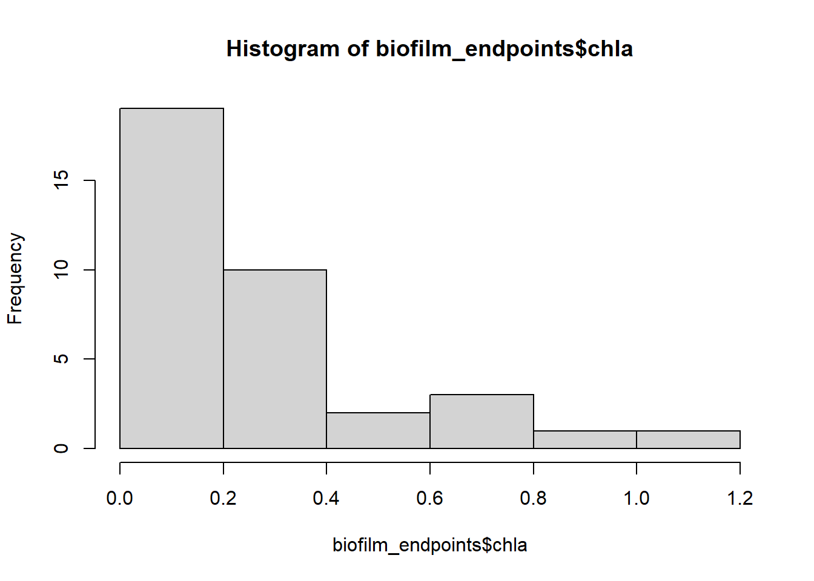
skewness(biofilm_endpoints $ chla, na.rm = TRUE) [1] 1.601648# chl b
b <- hist(biofilm_endpoints $ chlb) 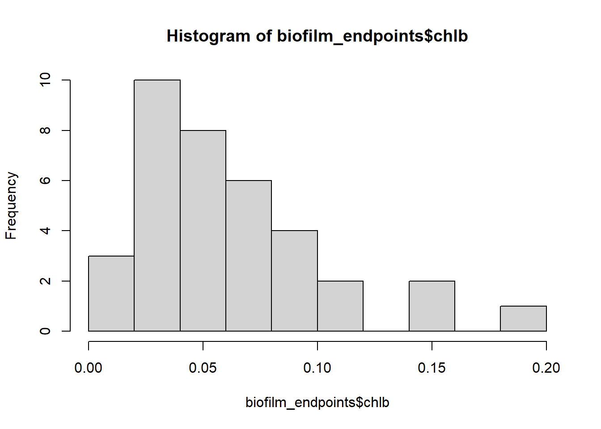
skewness(biofilm_endpoints $ chlb, na.rm = TRUE) [1] 1.452618# chl c
c <- hist(biofilm_endpoints $ chlc) 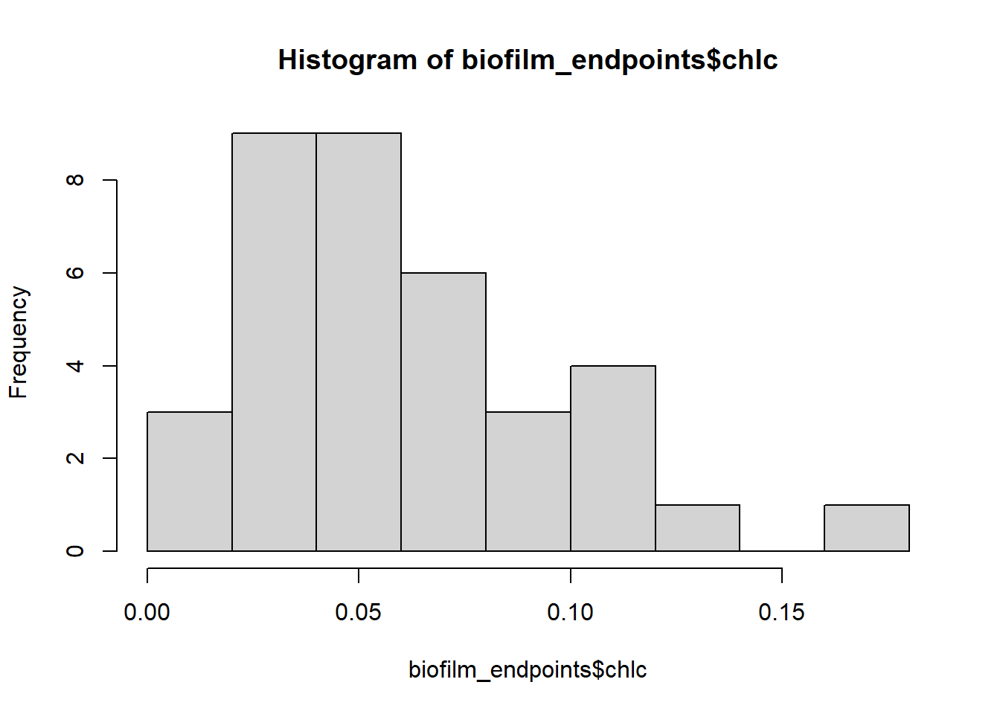
skewness(biofilm_endpoints $ chlc, na.rm = TRUE) [1] 1.253578All not normal distributed and right skewed -> log10 transformation in model
Model chla
Linear model with treatment and week and their interaction (week:treatment) as explanatory variables.
# week as factor
biofilm_endpoints $ week <- factor(biofilm_endpoints $ week)
model_chla <- lm(log10(chla) ~ week + treatment + week:treatment, data = biofilm_endpoints)
plot(model_chla) # point cloud looks evenly distributed --> normal distribution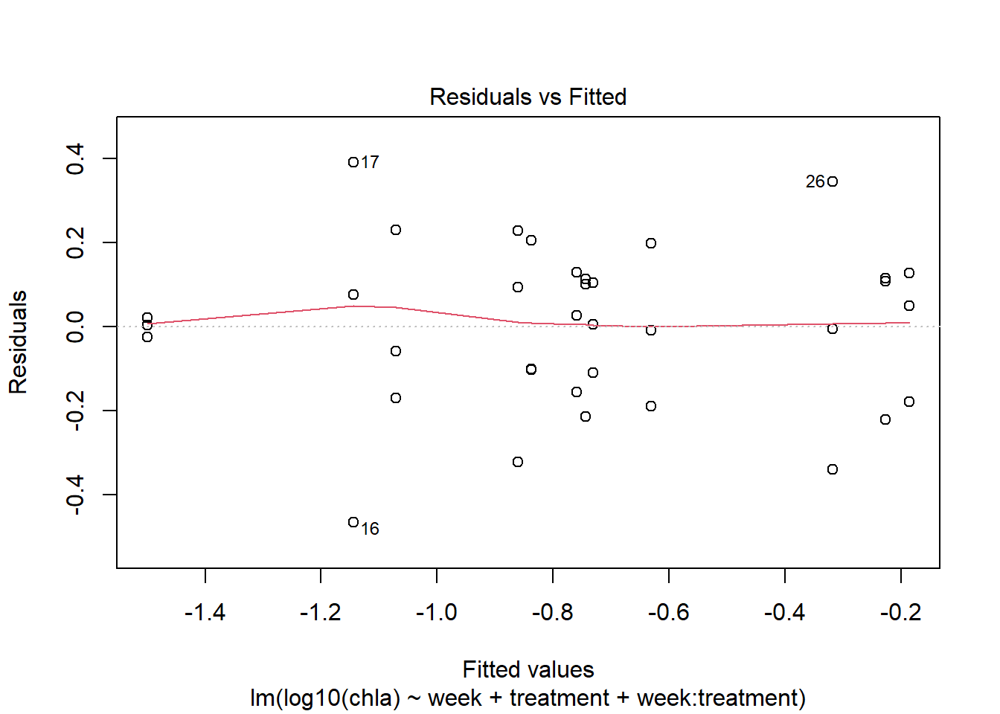
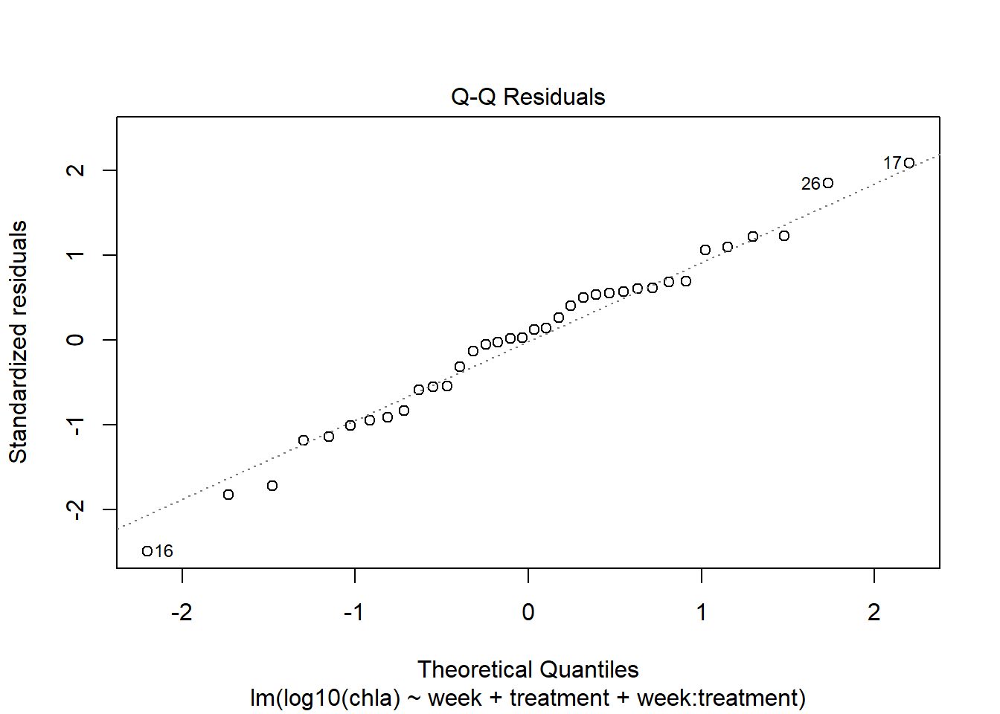
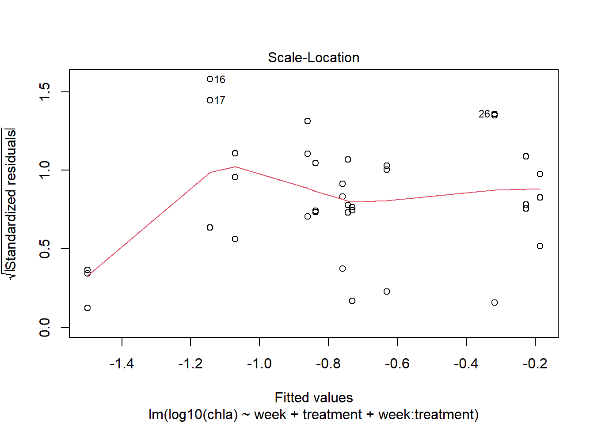
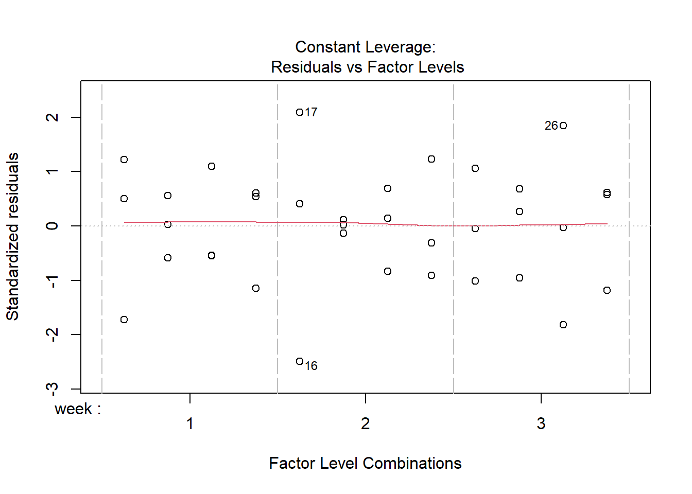
qreference(residuals(model_chla)) # normal distribution assumed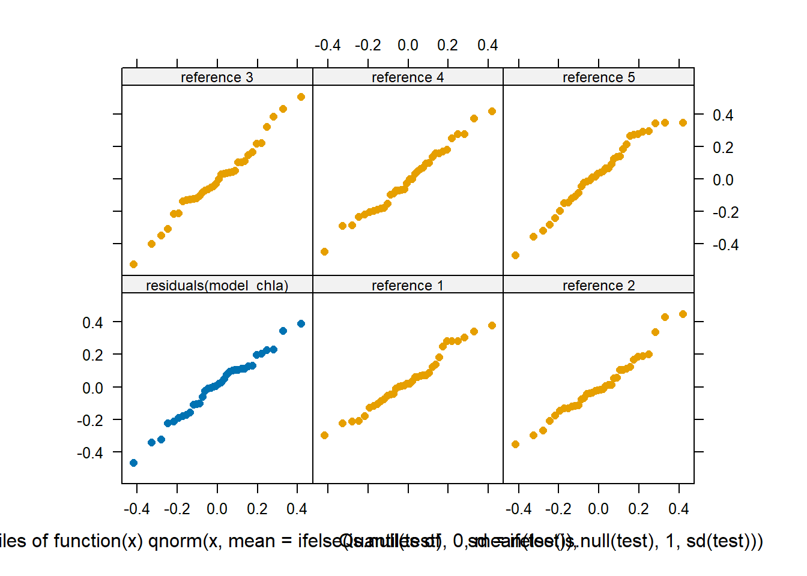
drop1(model_chla, test = 'F')Single term deletions
Model:
log10(chla) ~ week + treatment + week:treatment
Df Sum of Sq RSS AIC F value Pr(>F)
<none> 1.2564 -96.788
week:treatment 6 0.90254 2.1590 -89.300 2.8733 0.02965 *
---
Signif. codes: 0 '***' 0.001 '**' 0.01 '*' 0.05 '.' 0.1 ' ' 1Interaction week:treatment significant (p=0.02965). Now check differences between treatments within weeks.
chla_inter <- lsmeans(model_chla, ~ treatment | week )
chla_inter_dunn1 <- contrast(chla_inter, 'pairwise')
(chla_inter_dunn_sum1 <- summary(chla_inter_dunn1, infer = TRUE, adjust = 'mvt'))week = 1:
contrast estimate SE df lower.CL upper.CL t.ratio p.value
Cip - Mix -0.1285 0.187 24 -0.644 0.3870 -0.688 0.9008
Cip - NC -0.0231 0.187 24 -0.539 0.4924 -0.124 0.9993
Cip - Pro -0.1161 0.187 24 -0.632 0.3994 -0.622 0.9242
Mix - NC 0.1054 0.187 24 -0.410 0.6209 0.564 0.9417
Mix - Pro 0.0124 0.187 24 -0.503 0.5279 0.066 0.9999
NC - Pro -0.0930 0.187 24 -0.609 0.4225 -0.498 0.9588
week = 2:
contrast estimate SE df lower.CL upper.CL t.ratio p.value
Cip - Mix 0.3553 0.187 24 -0.160 0.8704 1.902 0.2538
Cip - NC -0.3855 0.187 24 -0.901 0.1296 -2.064 0.1936
Cip - Pro -0.0739 0.187 24 -0.589 0.4412 -0.396 0.9785
Mix - NC -0.7408 0.187 24 -1.256 -0.2257 -3.966 0.0030
Mix - Pro -0.4293 0.187 24 -0.944 0.0858 -2.298 0.1266
NC - Pro 0.3116 0.187 24 -0.204 0.8267 1.668 0.3619
week = 3:
contrast estimate SE df lower.CL upper.CL t.ratio p.value
Cip - Mix -0.4446 0.187 24 -0.960 0.0710 -2.380 0.1082
Cip - NC -0.3119 0.187 24 -0.828 0.2036 -1.670 0.3609
Cip - Pro -0.4035 0.187 24 -0.919 0.1121 -2.160 0.1634
Mix - NC 0.1327 0.187 24 -0.383 0.6482 0.710 0.8921
Mix - Pro 0.0411 0.187 24 -0.474 0.5567 0.220 0.9961
NC - Pro -0.0915 0.187 24 -0.607 0.4241 -0.490 0.9606
Results are given on the log10 (not the response) scale.
Confidence level used: 0.95
Conf-level adjustment: mvt method for 6 estimates
P value adjustment: mvt method for 6 tests No significant differences of the treatments within week 1 and 3. Only NC-Mix significant in week 2 (p=0.003).
Now check for differences between weeks.
anova(model_chla)Analysis of Variance Table
Response: log10(chla)
Df Sum Sq Mean Sq F value Pr(>F)
week 2 3.6638 1.83191 34.9922 7.689e-08 ***
treatment 3 0.3323 0.11076 2.1156 0.12473
week:treatment 6 0.9025 0.15042 2.8733 0.02965 *
Residuals 24 1.2564 0.05235
---
Signif. codes: 0 '***' 0.001 '**' 0.01 '*' 0.05 '.' 0.1 ' ' 1# week variable highly significant (p=7.689e-08)
chla_inter2 <- lsmeans(model_chla, ~ week | treatment)
chla_inter_dunn2 <- contrast(chla_inter2, 'pairwise')
(chla_inter_dunn_sum2 <- summary(chla_inter_dunn2, infer = TRUE, adjust = 'mvt'))treatment = Cip:
contrast estimate SE df lower.CL upper.CL t.ratio p.value
week1 - week2 0.2843 0.187 24 -0.182 0.7508 1.522 0.2986
week1 - week3 -0.2296 0.187 24 -0.696 0.2369 -1.229 0.4480
week2 - week3 -0.5140 0.187 24 -0.980 -0.0475 -2.751 0.0290
treatment = Mix:
contrast estimate SE df lower.CL upper.CL t.ratio p.value
week1 - week2 0.7682 0.187 24 0.301 1.2349 4.112 0.0013
week1 - week3 -0.5458 0.187 24 -1.013 -0.0790 -2.921 0.0200
week2 - week3 -1.3139 0.187 24 -1.781 -0.8472 -7.033 <.0001
treatment = NC:
contrast estimate SE df lower.CL upper.CL t.ratio p.value
week1 - week2 -0.0781 0.187 24 -0.545 0.3885 -0.418 0.9086
week1 - week3 -0.5185 0.187 24 -0.985 -0.0520 -2.775 0.0274
week2 - week3 -0.4404 0.187 24 -0.907 0.0261 -2.357 0.0671
treatment = Pro:
contrast estimate SE df lower.CL upper.CL t.ratio p.value
week1 - week2 0.3265 0.187 24 -0.140 0.7929 1.748 0.2087
week1 - week3 -0.5170 0.187 24 -0.983 -0.0506 -2.767 0.0281
week2 - week3 -0.8435 0.187 24 -1.310 -0.3771 -4.515 0.0004
Results are given on the log10 (not the response) scale.
Confidence level used: 0.95
Conf-level adjustment: mvt method for 3 estimates
P value adjustment: mvt method for 3 tests - NC
- Week 1 & 2 similar
- Week 2 & 3 similar
- difference between week 1 & 3
- Week 1 & 2 similar
- Cip
- Week 1 & 2 similar
- Week 1 & 3 similar
- difference between week 2 & 3
- Week 1 & 2 similar
- Pro
- Week 1 & 2 similar
- differences between week 1 & 3 and 2 & 3
- Week 1 & 2 similar
- Mix
- all weeks different
Week 1 & 2 quite similar, expect of Mix treatment. Week 3 quite different to week 1 & 2 despite of Cip tretment.
Model chlb
model_chlb <- lm(log10(chlb) ~ week + treatment + week:treatment, data = biofilm_endpoints)
plot(model_chlb) # point cloud looks evenly distributed --> normal distribution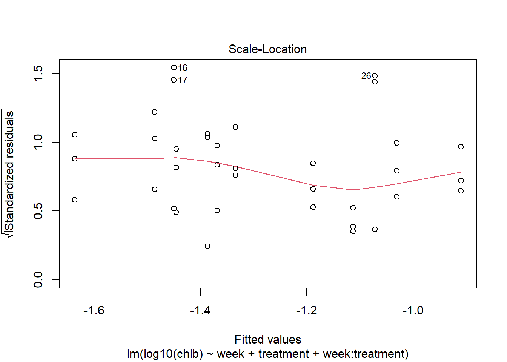
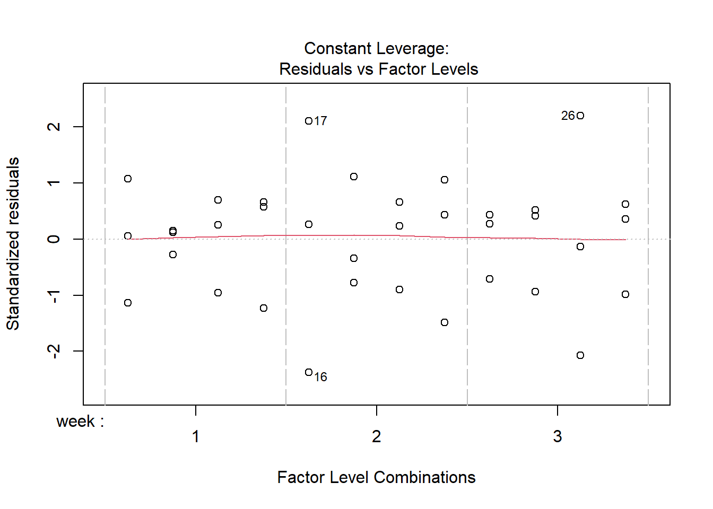
qreference(residuals(model_chlb)) # normal distribution assumed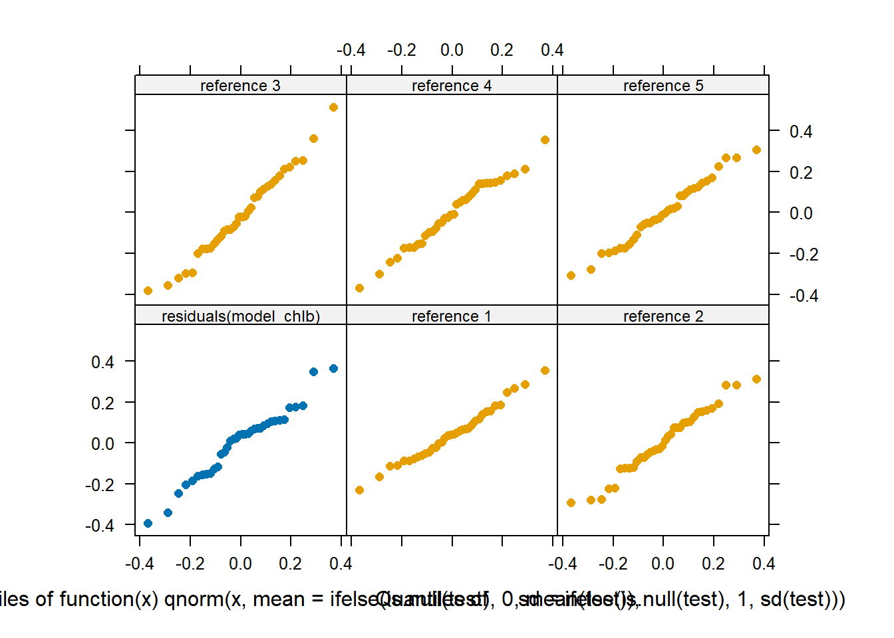
drop1(model_chlb, test = 'F')Single term deletions
Model:
log10(chlb) ~ week + treatment + week:treatment
Df Sum of Sq RSS AIC F value Pr(>F)
<none> 0.97703 -105.84
week:treatment 6 0.26855 1.24558 -109.10 1.0995 0.3913No significant differences. Still check for differences between treatments.
chlb_inter <- lsmeans(model_chlb, ~ treatment | week )
chlb_inter_dunn1 <- contrast(chlb_inter, 'pairwise')
(chlb_inter_dunn_sum1 <- summary(chlb_inter_dunn1, infer = TRUE, adjust = 'mvt'))week = 1:
contrast estimate SE df lower.CL upper.CL t.ratio p.value
Cip - Mix -0.27433 0.165 24 -0.729 0.180 -1.665 0.3633
Cip - NC -0.01900 0.165 24 -0.474 0.436 -0.115 0.9994
Cip - Pro -0.05266 0.165 24 -0.507 0.402 -0.320 0.9884
Mix - NC 0.25533 0.165 24 -0.199 0.710 1.550 0.4249
Mix - Pro 0.22167 0.165 24 -0.233 0.676 1.346 0.5441
NC - Pro -0.03366 0.165 24 -0.488 0.421 -0.204 0.9969
week = 2:
contrast estimate SE df lower.CL upper.CL t.ratio p.value
Cip - Mix 0.18670 0.165 24 -0.268 0.641 1.133 0.6731
Cip - NC -0.00461 0.165 24 -0.459 0.450 -0.028 1.0000
Cip - Pro 0.03588 0.165 24 -0.419 0.490 0.218 0.9962
Mix - NC -0.19130 0.165 24 -0.646 0.263 -1.161 0.6563
Mix - Pro -0.15082 0.165 24 -0.605 0.304 -0.916 0.7968
NC - Pro 0.04048 0.165 24 -0.414 0.495 0.246 0.9946
week = 3:
contrast estimate SE df lower.CL upper.CL t.ratio p.value
Cip - Mix -0.27781 0.165 24 -0.732 0.176 -1.686 0.3524
Cip - NC -0.11586 0.165 24 -0.570 0.338 -0.703 0.8948
Cip - Pro -0.15717 0.165 24 -0.611 0.297 -0.954 0.7762
Mix - NC 0.16195 0.165 24 -0.292 0.616 0.983 0.7603
Mix - Pro 0.12064 0.165 24 -0.334 0.575 0.732 0.8832
NC - Pro -0.04131 0.165 24 -0.496 0.413 -0.251 0.9943
Results are given on the log10 (not the response) scale.
Confidence level used: 0.95
Conf-level adjustment: mvt method for 6 estimates
P value adjustment: mvt method for 6 tests No differences between treatments for chlb.
Now check for differences between weeks.
anova(model_chlb)Analysis of Variance Table
Response: log10(chlb)
Df Sum Sq Mean Sq F value Pr(>F)
week 2 1.24370 0.62185 15.2753 5.259e-05 ***
treatment 3 0.06804 0.02268 0.5572 0.6484
week:treatment 6 0.26855 0.04476 1.0995 0.3913
Residuals 24 0.97703 0.04071
---
Signif. codes: 0 '***' 0.001 '**' 0.01 '*' 0.05 '.' 0.1 ' ' 1# week variable highly significant (p=5.259e-05)
chlb_inter2 <- lsmeans(model_chlb, ~ week | treatment)
chlb_inter_dunn3 <- contrast(chlb_inter2, 'pairwise')
(chlb_inter_dunn_sum3 <- summary(chlb_inter_dunn3, infer = TRUE, adjust = 'mvt'))treatment = Cip:
contrast estimate SE df lower.CL upper.CL t.ratio p.value
week1 - week2 0.0629 0.165 24 -0.349 0.4743 0.382 0.9231
week1 - week3 -0.1994 0.165 24 -0.611 0.2120 -1.210 0.4587
week2 - week3 -0.2623 0.165 24 -0.674 0.1492 -1.592 0.2683
treatment = Mix:
contrast estimate SE df lower.CL upper.CL t.ratio p.value
week1 - week2 0.5239 0.165 24 0.112 0.9355 3.180 0.0113
week1 - week3 -0.2029 0.165 24 -0.614 0.2087 -1.232 0.4466
week2 - week3 -0.7268 0.165 24 -1.138 -0.3152 -4.412 0.0005
treatment = NC:
contrast estimate SE df lower.CL upper.CL t.ratio p.value
week1 - week2 0.0773 0.165 24 -0.334 0.4887 0.469 0.8864
week1 - week3 -0.2963 0.165 24 -0.708 0.1152 -1.798 0.1915
week2 - week3 -0.3735 0.165 24 -0.785 0.0379 -2.267 0.0801
treatment = Pro:
contrast estimate SE df lower.CL upper.CL t.ratio p.value
week1 - week2 0.1514 0.165 24 -0.260 0.5627 0.919 0.6338
week1 - week3 -0.3039 0.165 24 -0.715 0.1074 -1.845 0.1767
week2 - week3 -0.4553 0.165 24 -0.867 -0.0440 -2.764 0.0280
Results are given on the log10 (not the response) scale.
Confidence level used: 0.95
Conf-level adjustment: mvt method for 3 estimates
P value adjustment: mvt method for 3 tests Similar results/trends as for chla. Week 1 & 2 quite similar; differences in:
Pro treatment: week 2 & 3
Mix treatment: week 1 & 2; 2 & 3
Model chlc
model_chlc <- lm(log10(chlc) ~ week + treatment + week:treatment, data = biofilm_endpoints)
plot(model_chlc) # point cloud looks evenly distributed --> normal distribution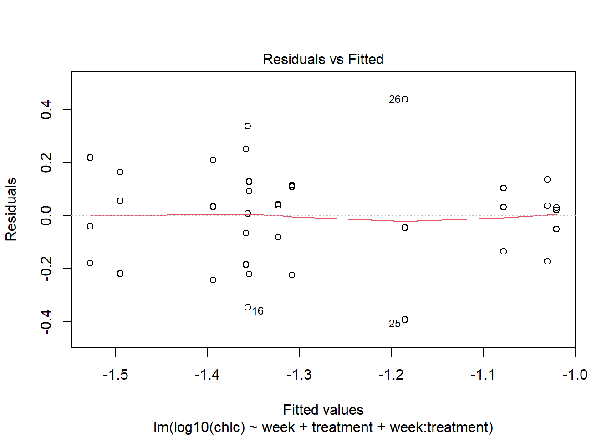
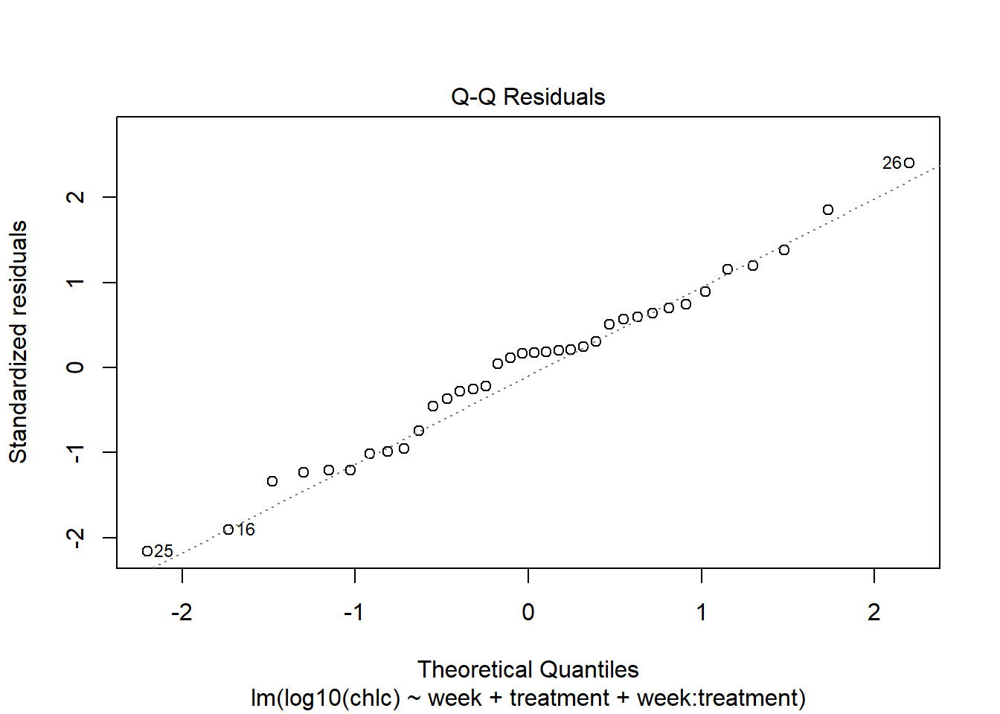
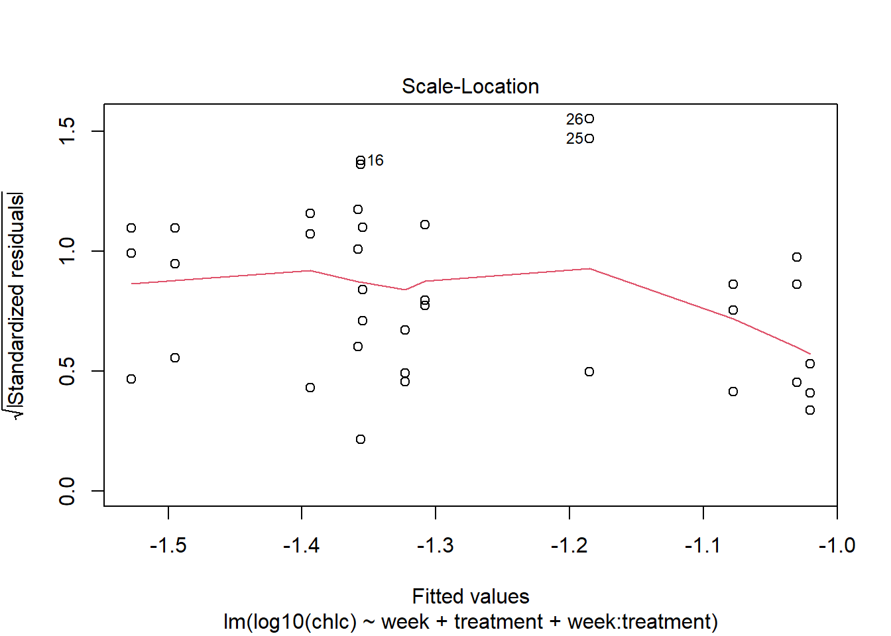
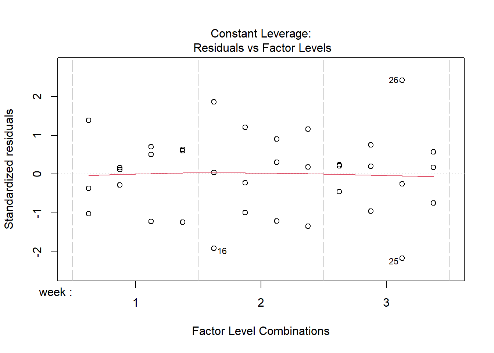
qreference(residuals(model_chlc)) # normal distribution assumed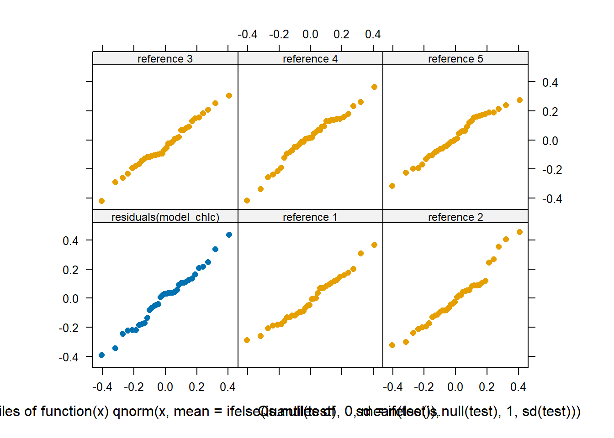
drop1(model_chlc, test = 'F')Single term deletions
Model:
log10(chlc) ~ week + treatment + week:treatment
Df Sum of Sq RSS AIC F value Pr(>F)
<none> 1.1848 -98.901
week:treatment 6 0.29873 1.4836 -102.807 1.0085 0.443No significant differences. Still check for differences between treatments.
chlc_inter <- lsmeans(model_chlc, ~ treatment | week )
chlc_inter_dunn1 <- contrast(chlc_inter, 'pairwise')
(chlc_inter_dunn_sum1 <- summary(chlc_inter_dunn1, infer = TRUE, adjust = 'mvt'))week = 1:
contrast estimate SE df lower.CL upper.CL t.ratio p.value
Cip - Mix -0.33795 0.181 24 -0.839 0.163 -1.863 0.2701
Cip - NC -0.00342 0.181 24 -0.504 0.497 -0.019 1.0000
Cip - Pro -0.05013 0.181 24 -0.551 0.450 -0.276 0.9924
Mix - NC 0.33453 0.181 24 -0.166 0.835 1.844 0.2782
Mix - Pro 0.28782 0.181 24 -0.213 0.788 1.587 0.4048
NC - Pro -0.04671 0.181 24 -0.547 0.454 -0.257 0.9939
week = 2:
contrast estimate SE df lower.CL upper.CL t.ratio p.value
Cip - Mix 0.17126 0.181 24 -0.330 0.672 0.944 0.7817
Cip - NC 0.13832 0.181 24 -0.363 0.639 0.762 0.8704
Cip - Pro 0.03741 0.181 24 -0.464 0.538 0.206 0.9968
Mix - NC -0.03294 0.181 24 -0.534 0.468 -0.182 0.9978
Mix - Pro -0.13386 0.181 24 -0.635 0.367 -0.738 0.8809
NC - Pro -0.10092 0.181 24 -0.602 0.400 -0.556 0.9439
week = 3:
contrast estimate SE df lower.CL upper.CL t.ratio p.value
Cip - Mix -0.29281 0.181 24 -0.793 0.207 -1.614 0.3900
Cip - NC -0.13817 0.181 24 -0.638 0.362 -0.762 0.8708
Cip - Pro -0.24547 0.181 24 -0.745 0.255 -1.353 0.5397
Mix - NC 0.15464 0.181 24 -0.345 0.655 0.852 0.8289
Mix - Pro 0.04734 0.181 24 -0.453 0.547 0.261 0.9936
NC - Pro -0.10730 0.181 24 -0.607 0.393 -0.591 0.9337
Results are given on the log10 (not the response) scale.
Confidence level used: 0.95
Conf-level adjustment: mvt method for 6 estimates
P value adjustment: mvt method for 6 tests No differences between treatments for chlorophyll c.
Boxplots chlorophyll a, b + c
# chlorophyll a
chla <- ggplot(data = biofilm_endpoints,
mapping = aes(x = factor(week),
y = chla,
fill = factor(treatment, levels = c("NC", "Cip", "Pro", "Mix")))) +
geom_boxplot() +
scale_fill_manual(values = c("NC" = "#009E73", "Cip" = "#56B4E9", "Pro" = "#E69F00", "Mix" = "#F0E442")) +
scale_color_okabe_ito() +
theme_bw() +
labs(x = NULL , y = expression("Chlorophyll a (µg/cm"^"2"*")"), fill = "Treatment") +
scale_x_discrete(labels = c("Week 1", "Week 2", "Week 3"))
chla 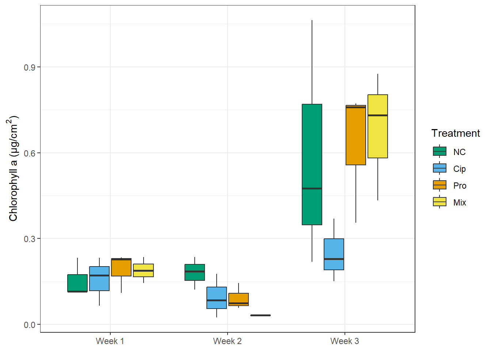
# save the plot
ggsave(chla,
filename = "chla.png",
path = 'C:\\Users\\Oster Test\\OneDrive\\Desktop\\Promotion\\Bioassays\\Schneckenversuch 2023\\Bottom_up_effects_biofilm_grazer\\output')Saving 7 x 5 in image# chlorophyll b
chlb <- ggplot(data = biofilm_endpoints,
mapping = aes(x = factor(week),
y = chlb,
fill = factor(treatment, levels = c("NC", "Cip", "Pro", "Mix")))) +
geom_boxplot() +
scale_fill_manual(values = c("NC" = "#009E73", "Cip" = "#56B4E9", "Pro" = "#E69F00", "Mix" = "#F0E442")) +
scale_color_okabe_ito() +
theme_bw() +
labs(x = NULL , y = expression("Chlorophyll b (µg/cm"^"2"*")"), fill = "Treatment") +
scale_x_discrete(labels = c("Week 1", "Week 2", "Week 3"))
chlb 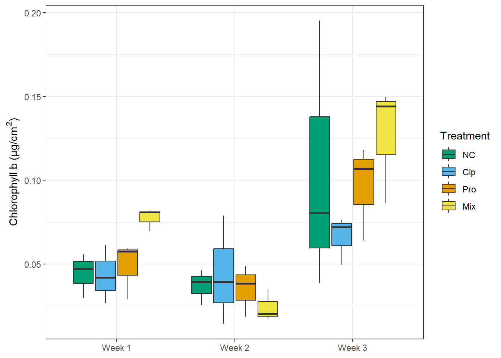
# save the plot
ggsave(chlb,
filename = "chlb.png",
path = 'C:\\Users\\Oster Test\\OneDrive\\Desktop\\Promotion\\Bioassays\\Schneckenversuch 2023\\Bottom_up_effects_biofilm_grazer\\output')Saving 7 x 5 in image# chlorophyll c
chlc <- ggplot(data = biofilm_endpoints,
mapping = aes(x = factor(week),
y = chlc,
fill = factor(treatment, levels = c("NC", "Cip", "Pro", "Mix")))) +
geom_boxplot() +
scale_fill_manual(values = c("NC" = "#009E73", "Cip" = "#56B4E9", "Pro" = "#E69F00", "Mix" = "#F0E442")) +
scale_color_okabe_ito() +
theme_bw() +
labs(x = NULL , y = expression("Chlorophyll c (µg/cm"^"2"*")"), fill = "Treatment") +
scale_x_discrete(labels = c("Week 1", "Week 2", "Week 3"))
chlc 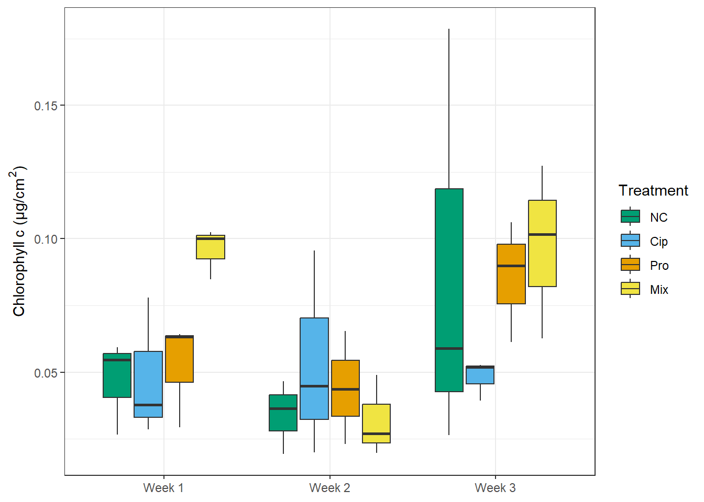
# save the plot
ggsave(chlc,
filename = "chlc.png",
path = 'C:\\Users\\Oster Test\\OneDrive\\Desktop\\Promotion\\Bioassays\\Schneckenversuch 2023\\Bottom_up_effects_biofilm_grazer\\output')Saving 7 x 5 in image3.2 AFDW after colonisation
Calculate mean afdw of each treatment for manuscript.
mean_afdw_after_colonisation <- biofilm_endpoints %>%
group_by(week, treatment) %>%
summarize(mean_afdw_after_colonisation = mean(afdw_after_colonisation))`summarise()` has grouped output by 'week'. You can override using the
`.groups` argument.print(mean_afdw_after_colonisation)# A tibble: 12 × 3
# Groups: week [3]
week treatment mean_afdw_after_colonisation
<fct> <chr> <dbl>
1 1 Cip 0.0785
2 1 Mix 0.0666
3 1 NC 0.0837
4 1 Pro 0.135
5 2 Cip 0.109
6 2 Mix 0.0785
7 2 NC 0.215
8 2 Pro 0.0699
9 3 Cip 0.188
10 3 Mix 0.280
11 3 NC 0.520
12 3 Pro 0.474 Histogram afdw after colonisation
hist(biofilm_endpoints $ afdw_after_colonisation) 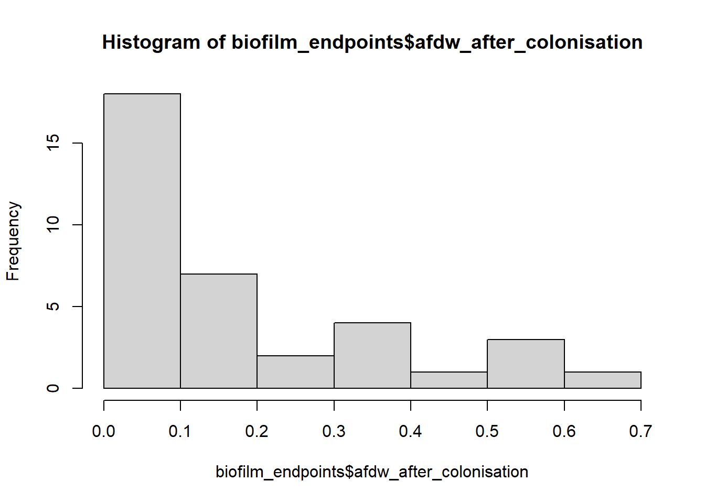
skewness(biofilm_endpoints $ afdw_after_colonisation, na.rm = TRUE) [1] 1.433642Not normal distributed and right skewed. Log10 transformation for model
Model afdw after colonisation
Linear model with treatment and week and their interaction (week:treatment) as explanatory variables.
model_afdw_after_colonisation <- lm(log10(afdw_after_colonisation) ~ week + treatment + week:treatment, data = biofilm_endpoints)
plot(model_afdw_after_colonisation) # not perfectly even distributed, but ok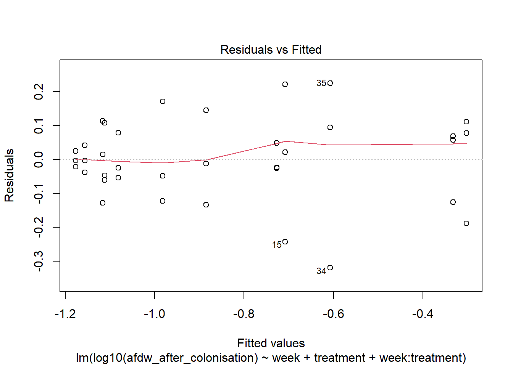
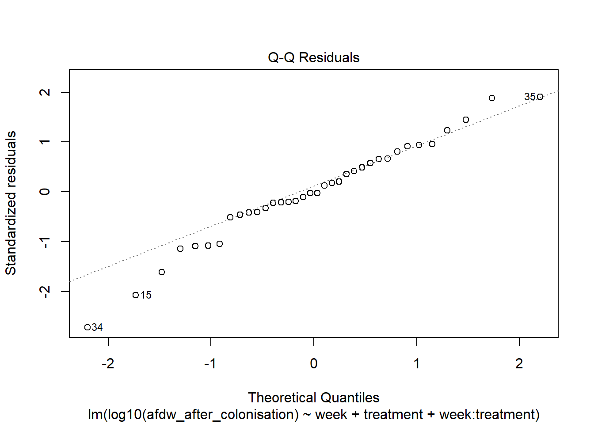
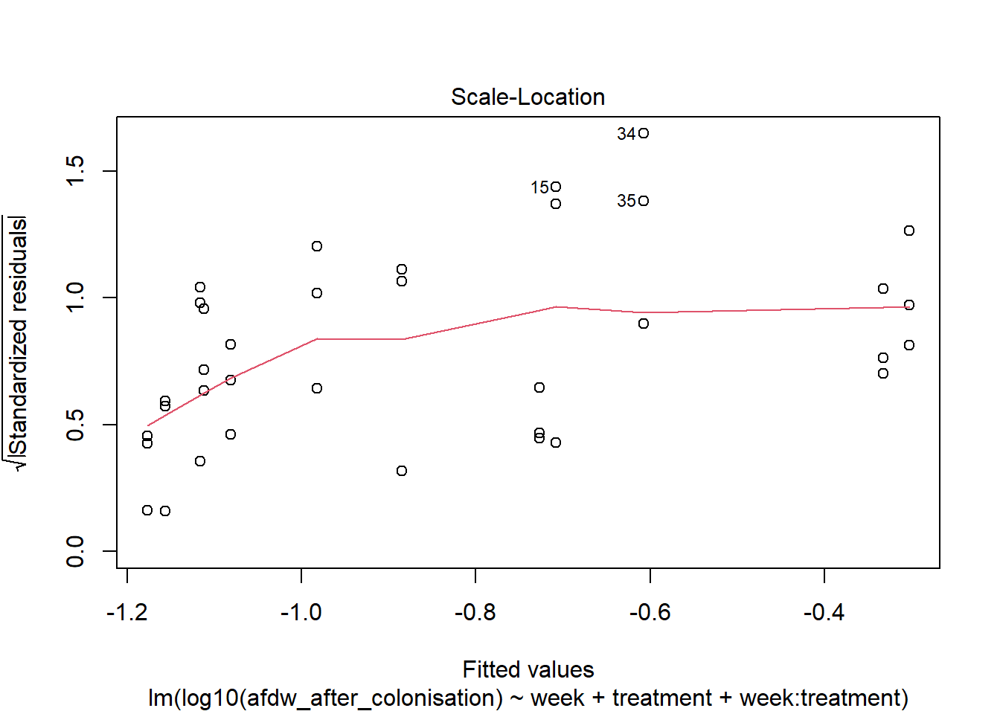
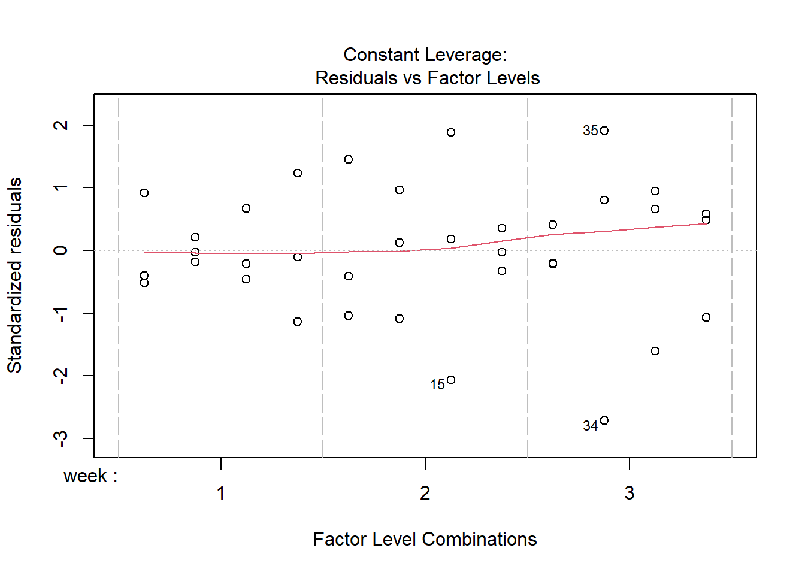
qreference(residuals(model_afdw_after_colonisation)) # normal distribution assumed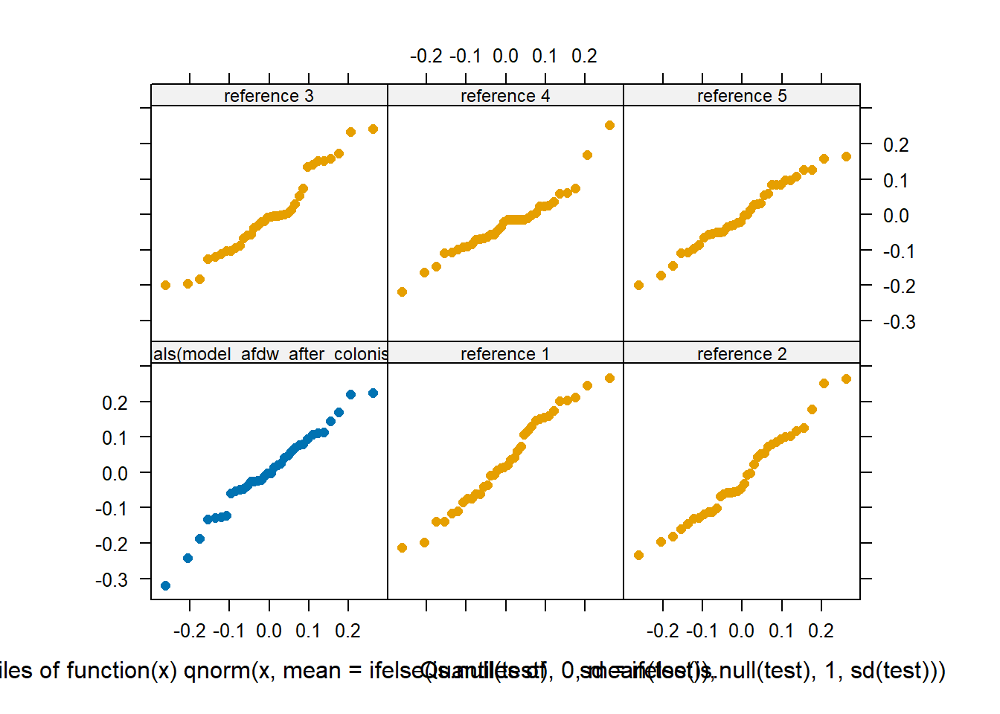
drop1(model_afdw_after_colonisation, test = 'F')Single term deletions
Model:
log10(afdw_after_colonisation) ~ week + treatment + week:treatment
Df Sum of Sq RSS AIC F value Pr(>F)
<none> 0.49635 -130.22
week:treatment 6 0.46424 0.96059 -118.45 3.7412 0.009063 **
---
Signif. codes: 0 '***' 0.001 '**' 0.01 '*' 0.05 '.' 0.1 ' ' 1Significant difference for week:treatment (p=0.009063). Check differences between treatments within weeks.
afdw_after_colonisation_inter <- lsmeans(model_afdw_after_colonisation, ~ treatment | week )
afdw_after_colonisation_inter_dunn1 <- contrast(afdw_after_colonisation_inter, 'pairwise')
(afdw_after_colonisation_inter_dunn_sum1 <- summary(afdw_after_colonisation_inter_dunn1, infer = TRUE, adjust = 'mvt'))week = 1:
contrast estimate SE df lower.CL upper.CL t.ratio p.value
Cip - Mix 0.0646 0.117 24 -0.259 0.3882 0.550 0.9457
Cip - NC -0.0310 0.117 24 -0.355 0.2926 -0.264 0.9934
Cip - Pro -0.2277 0.117 24 -0.551 0.0959 -1.939 0.2388
Mix - NC -0.0956 0.117 24 -0.419 0.2281 -0.814 0.8472
Mix - Pro -0.2923 0.117 24 -0.616 0.0314 -2.489 0.0875
NC - Pro -0.1967 0.117 24 -0.520 0.1270 -1.675 0.3582
week = 2:
contrast estimate SE df lower.CL upper.CL t.ratio p.value
Cip - Mix 0.1341 0.117 24 -0.189 0.4577 1.142 0.6678
Cip - NC -0.2737 0.117 24 -0.597 0.0499 -2.331 0.1191
Cip - Pro 0.1747 0.117 24 -0.149 0.4983 1.488 0.4601
Mix - NC -0.4078 0.117 24 -0.731 -0.0842 -3.473 0.0099
Mix - Pro 0.0406 0.117 24 -0.283 0.3642 0.346 0.9855
NC - Pro 0.4484 0.117 24 0.125 0.7719 3.818 0.0045
week = 3:
contrast estimate SE df lower.CL upper.CL t.ratio p.value
Cip - Mix -0.1194 0.117 24 -0.443 0.2044 -1.017 0.7414
Cip - NC -0.4240 0.117 24 -0.748 -0.1002 -3.611 0.0071
Cip - Pro -0.3942 0.117 24 -0.718 -0.0704 -3.357 0.0130
Mix - NC -0.3046 0.117 24 -0.628 0.0192 -2.594 0.0707
Mix - Pro -0.2748 0.117 24 -0.599 0.0490 -2.340 0.1170
NC - Pro 0.0298 0.117 24 -0.294 0.3536 0.254 0.9941
Results are given on the log10 (not the response) scale.
Confidence level used: 0.95
Conf-level adjustment: mvt method for 6 estimates
P value adjustment: mvt method for 6 tests Significant differences between week 2 Mix-NC and NC-Pro; and week 3 Cip-NC and Cip-Pro.
Now check for differences within weeks.
anova(model_afdw_after_colonisation)Analysis of Variance Table
Response: log10(afdw_after_colonisation)
Df Sum Sq Mean Sq F value Pr(>F)
week 2 2.31759 1.15880 56.0312 9.072e-10 ***
treatment 3 0.43663 0.14554 7.0375 0.001477 **
week:treatment 6 0.46424 0.07737 3.7412 0.009063 **
Residuals 24 0.49635 0.02068
---
Signif. codes: 0 '***' 0.001 '**' 0.01 '*' 0.05 '.' 0.1 ' ' 1# week variable highly significant (p=2.541e-07)
afdw_after_colonisation_inter2 <- lsmeans(model_afdw_after_colonisation, ~ week | treatment)
afdw_after_colonisation_inter_dunn2 <- contrast(afdw_after_colonisation_inter2, 'pairwise')
(afdw_after_colonisation_inter_dunn_sum2 <- summary(afdw_after_colonisation_inter_dunn2, infer = TRUE, adjust = 'mvt'))treatment = Cip:
contrast estimate SE df lower.CL upper.CL t.ratio p.value
week1 - week2 -0.1304 0.117 24 -0.4235 0.1626 -1.111 0.5168
week1 - week3 -0.3852 0.117 24 -0.6783 -0.0921 -3.281 0.0084
week2 - week3 -0.2548 0.117 24 -0.5479 0.0383 -2.170 0.0972
treatment = Mix:
contrast estimate SE df lower.CL upper.CL t.ratio p.value
week1 - week2 -0.0609 0.117 24 -0.3542 0.2324 -0.518 0.8631
week1 - week3 -0.5691 0.117 24 -0.8625 -0.2758 -4.847 0.0002
week2 - week3 -0.5083 0.117 24 -0.8016 -0.2149 -4.329 0.0007
treatment = NC:
contrast estimate SE df lower.CL upper.CL t.ratio p.value
week1 - week2 -0.3730 0.117 24 -0.6665 -0.0796 -3.177 0.0109
week1 - week3 -0.7782 0.117 24 -1.0717 -0.4847 -6.627 <.0001
week2 - week3 -0.4051 0.117 24 -0.6986 -0.1116 -3.450 0.0058
treatment = Pro:
contrast estimate SE df lower.CL upper.CL t.ratio p.value
week1 - week2 0.2720 0.117 24 -0.0212 0.5652 2.316 0.0724
week1 - week3 -0.5517 0.117 24 -0.8449 -0.2585 -4.698 0.0002
week2 - week3 -0.8236 0.117 24 -1.1169 -0.5304 -7.015 <.0001
Results are given on the log10 (not the response) scale.
Confidence level used: 0.95
Conf-level adjustment: mvt method for 3 estimates
P value adjustment: mvt method for 3 tests Cip
- Difference between week 1 and 3
Mix
- Week 1 & 2 similar; week 1 & 3 and 2 & 3 different.
NC
- all weeks different from each other
Pro
- Week 1 & 2 similar; week 1 & 3 and 2 & 3 different.
Boxplot afdw after colonisation
afdw_after_colonisation_boxplot <- ggplot(data = biofilm_endpoints,
mapping = aes(x = factor(week),
y = afdw_after_colonisation,
fill = factor(treatment, levels = c("NC", "Cip", "Pro", "Mix")))) +
geom_boxplot() +
scale_fill_manual(values = c("NC" = "#009E73", "Cip" = "#56B4E9", "Pro" = "#E69F00", "Mix" = "#F0E442")) +
scale_color_okabe_ito() +
theme_bw() +
labs(x = NULL , y = expression("Ash free dry weight (mg/cm"^"2"*")"), fill = "Treatment") +
scale_x_discrete(labels = c("Week 1", "Week 2", "Week 3"))
afdw_after_colonisation_boxplot 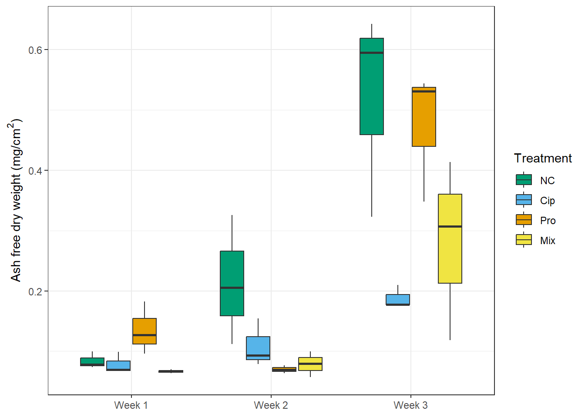
# @ VS: Hier auch log Skala, um die Daten besser zu sehen?
# save the plot
ggsave(afdw_after_colonisation_boxplot,
filename = "afdw_after_colonisation.png",
path = 'C:\\Users\\Oster Test\\OneDrive\\Desktop\\Promotion\\Bioassays\\Schneckenversuch 2023\\Bottom_up_effects_biofilm_grazer\\output')Saving 7 x 5 in image4 Feeding rate snails and ash free dry weight after feeding
NA’s due to missing snail and zero values of feeding rate due to no measurable feeding in respective week
Unit feeding rate: µg / day and unit ash free dry weight (afdw): mg / cm²
Column “used_for_FA_analysis” highlights the ten snails used for FA analyses for each treatment
# insert data
afdw_feeding_rate <-
read.table(file.path(prj, "data\\feeding_assay_afdw_feeding_rate.txt"),
header = TRUE, sep = "\t")
View(afdw_feeding_rate)4.1 Feeding rate snails
Calculate mean feeding rate for each week
mean_feeding_rate <- afdw_feeding_rate %>%
group_by(week, treatment) %>%
summarize(mean_feeding_rate = mean(feeding_rate, na.rm = TRUE))`summarise()` has grouped output by 'week'. You can override using the
`.groups` argument.print(mean_feeding_rate)# A tibble: 12 × 3
# Groups: week [3]
week treatment mean_feeding_rate
<int> <chr> <dbl>
1 1 Cip 1.25
2 1 Mix 2.49
3 1 NC 4.60
4 1 Pro 10.5
5 2 Cip 2.15
6 2 Mix 0.841
7 2 NC 3.97
8 2 Pro 1.35
9 3 Cip 2.45
10 3 Mix 1.55
11 3 NC 1.59
12 3 Pro 4.08 Histogram feeding rate
hist(afdw_feeding_rate $ feeding_rate) 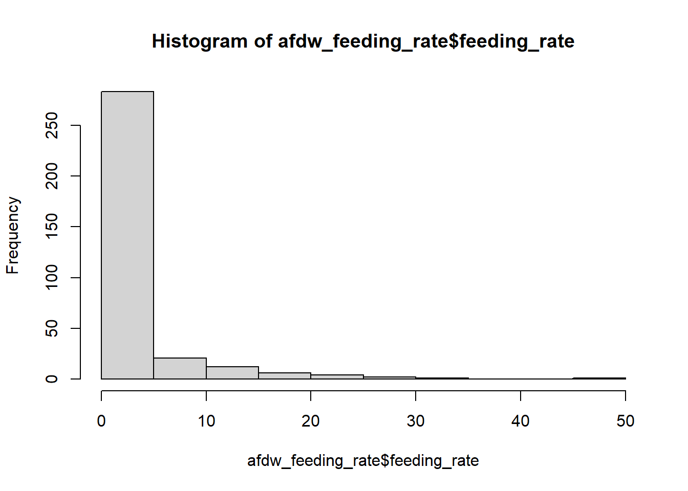
skewness(afdw_feeding_rate $ feeding_rate, na.rm = TRUE) [1] 3.865973Feeding rate variable not normal distributed and right skewed -> log10 transformation for model
Model feeding rate
# week and beaker as factor
afdw_feeding_rate $ week <- factor(afdw_feeding_rate $ week)
afdw_feeding_rate $ beaker <- factor(afdw_feeding_rate $ beaker)
# @ VS: muss die explanatory variable "treatment" auch ein faktor sein? (Frage gilt auch für alle anderen Modelle)
# log10 transformation; adding 0.001 to variable for samples with feeding rate = 0
afdw_feeding_rate <- afdw_feeding_rate %>%
mutate(log_feeding_rate = log10(feeding_rate + 0.001))
# response variable: log_feeding_rate
# fixed effects: week + treatment + week:treatment
# random effect with constant intercept: (1|beaker)
# first remove NAs
afdw_feeding_rate <- na.omit(afdw_feeding_rate)
feeding_rate_lmer <- lmer(log_feeding_rate ~ week + treatment + week:treatment + (1|beaker), data = afdw_feeding_rate)boundary (singular) fit: see help('isSingular')Warning “boundary (singular) fit” because random effects of beaker are very small.
isSingular(feeding_rate_lmer)[1] TRUE# isSingular = TRUE
# look at fitted model
ranef(feeding_rate_lmer)$beaker
(Intercept)
2 0
3 0
4 0
5 0
6 0
7 0
8 0
9 0
10 0
11 0
12 0
13 0
14 0
15 0
16 0
17 0
18 0
19 0
20 0
21 0
22 0
23 0
24 0
25 0
26 0
27 0
28 0
29 0
31 0
32 0
33 0
34 0
35 0
36 0
37 0
38 0
39 0
40 0
42 0
43 0
44 0
45 0
47 0
48 0
49 0
50 0
51 0
52 0
53 0
54 0
56 0
57 0
58 0
59 0
60 0
61 0
62 0
63 0
64 0
65 0
66 0
67 0
69 0
70 0
71 0
73 0
74 0
76 0
78 0
79 0
80 0
82 0
83 0
84 0
85 0
86 0
87 0
88 0
89 0
90 0
91 0
92 0
93 0
94 0
95 0
96 0
97 0
98 0
99 0
100 0
101 0
102 0
103 0
104 0
105 0
106 0
107 0
108 0
109 0
110 0
111 0
112 0
113 0
114 0
115 0
116 0
117 0
118 0
119 0
120 0
with conditional variances for "beaker" No systematic effect by “beaker”, so simplify model:
model_feeding_rate <- lm(log_feeding_rate ~ week + treatment + week:treatment, data = afdw_feeding_rate)
plot(model_feeding_rate) # point cloud looks evenly distributed --> normal distribution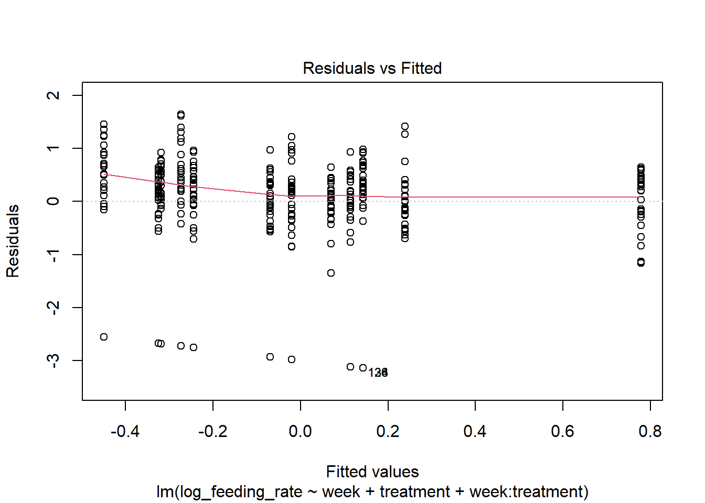
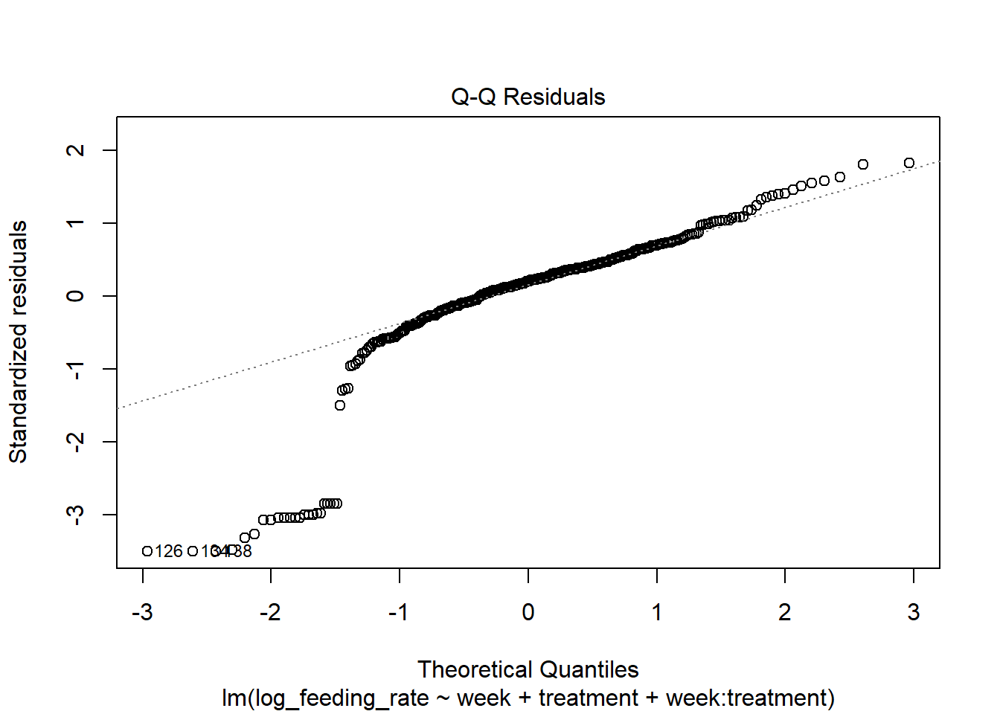
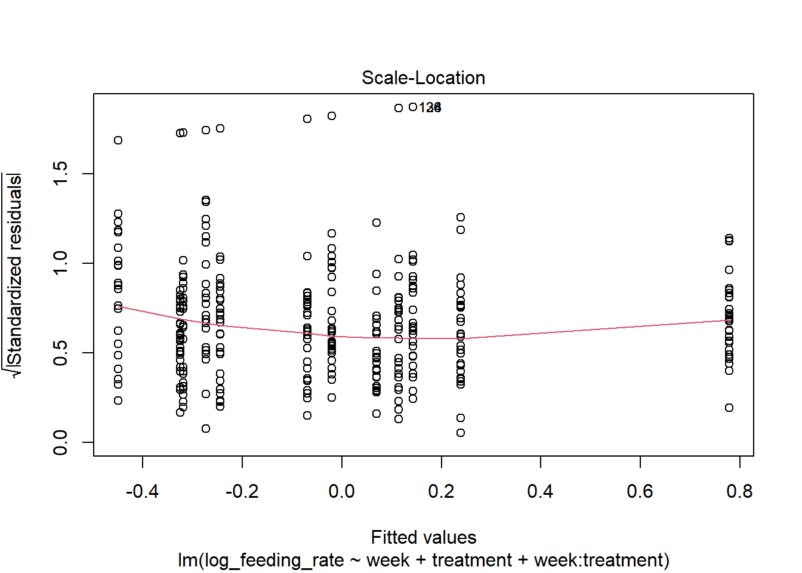
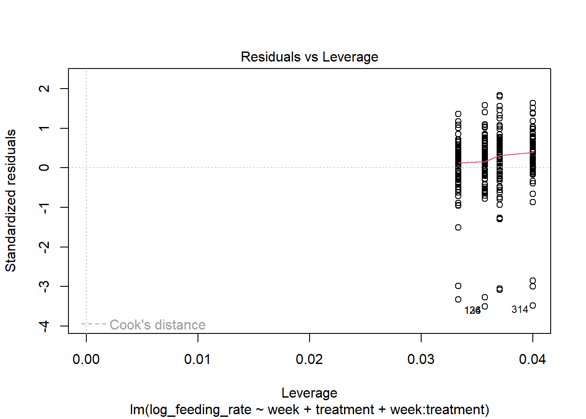
qreference(residuals(model_feeding_rate)) # normality not perfect, but ok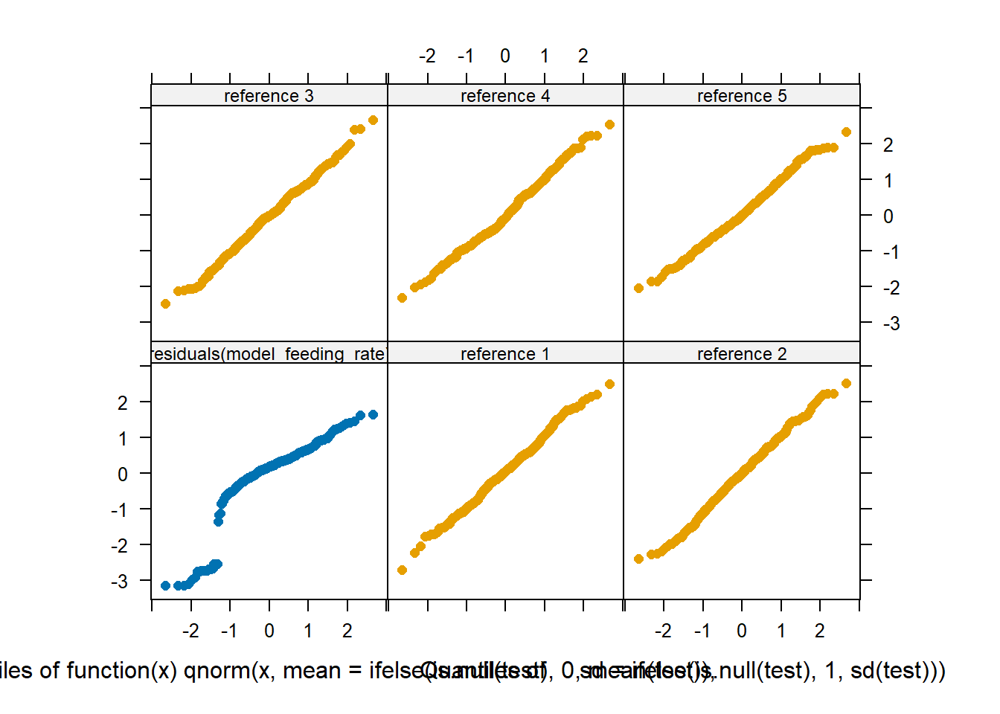
drop1(model_feeding_rate, test = 'Chisq')Single term deletions
Model:
log_feeding_rate ~ week + treatment + week:treatment
Df Sum of Sq RSS AIC Pr(>Chi)
<none> 264.69 -48.771
week:treatment 6 19.351 284.05 -37.487 0.0007066 ***
---
Signif. codes: 0 '***' 0.001 '**' 0.01 '*' 0.05 '.' 0.1 ' ' 1# interaction of timepoint (week) and treatment highly significant
# now check at which timepoints is a difference between treatments
anova(model_feeding_rate)Analysis of Variance Table
Response: log_feeding_rate
Df Sum Sq Mean Sq F value Pr(>F)
week 2 8.322 4.1611 4.9990 0.0072840 **
treatment 3 5.600 1.8667 2.2427 0.0832594 .
week:treatment 6 19.351 3.2252 3.8747 0.0009509 ***
Residuals 318 264.694 0.8324
---
Signif. codes: 0 '***' 0.001 '**' 0.01 '*' 0.05 '.' 0.1 ' ' 1# conduct Tukey HSD-test for pairwise comparisons
feeding_rate_tukey <- lsmeans(model_feeding_rate, ~ treatment | week)
feeding_rate_tukeyweek = 1:
treatment lsmean SE df lower.CL upper.CL
Cip -0.3182 0.182 318 -0.677 0.04080
Mix -0.0200 0.167 318 -0.348 0.30770
NC 0.2386 0.172 318 -0.101 0.57781
Pro 0.7784 0.176 318 0.433 1.12384
week = 2:
treatment lsmean SE df lower.CL upper.CL
Cip -0.4496 0.182 318 -0.809 -0.09064
Mix -0.3245 0.167 318 -0.652 0.00321
NC 0.1426 0.172 318 -0.197 0.48178
Pro -0.2442 0.176 318 -0.590 0.10124
week = 3:
treatment lsmean SE df lower.CL upper.CL
Cip 0.1146 0.182 318 -0.244 0.47357
Mix 0.0703 0.167 318 -0.257 0.39801
NC -0.0691 0.172 318 -0.408 0.27011
Pro -0.2726 0.176 318 -0.618 0.07281
Confidence level used: 0.95 feeding_rate_tukey1 <- contrast(feeding_rate_tukey, 'pairwise')
feeding_rate_tukey1week = 1:
contrast estimate SE df t.ratio p.value
Cip - Mix -0.2982 0.247 318 -1.207 0.6229
Cip - NC -0.5568 0.251 318 -2.218 0.1206
Cip - Pro -1.0966 0.253 318 -4.330 0.0001
Mix - NC -0.2586 0.240 318 -1.079 0.7028
Mix - Pro -0.7984 0.242 318 -3.299 0.0059
NC - Pro -0.5398 0.246 318 -2.194 0.1272
week = 2:
contrast estimate SE df t.ratio p.value
Cip - Mix -0.1251 0.247 318 -0.506 0.9575
Cip - NC -0.5922 0.251 318 -2.359 0.0873
Cip - Pro -0.2054 0.253 318 -0.811 0.8491
Mix - NC -0.4671 0.240 318 -1.948 0.2102
Mix - Pro -0.0803 0.242 318 -0.332 0.9874
NC - Pro 0.3868 0.246 318 1.572 0.3963
week = 3:
contrast estimate SE df t.ratio p.value
Cip - Mix 0.0443 0.247 318 0.179 0.9980
Cip - NC 0.1837 0.251 318 0.732 0.8843
Cip - Pro 0.3872 0.253 318 1.529 0.4213
Mix - NC 0.1394 0.240 318 0.581 0.9376
Mix - Pro 0.3429 0.242 318 1.417 0.4897
NC - Pro 0.2035 0.246 318 0.827 0.8416
P value adjustment: tukey method for comparing a family of 4 estimates feeding_rate_summary <- summary(feeding_rate_tukey1, infer = TRUE, adjust = 'mvt')
feeding_rate_summaryweek = 1:
contrast estimate SE df lower.CL upper.CL t.ratio p.value
Cip - Mix -0.2982 0.247 318 -0.936 0.3401 -1.207 0.6228
Cip - NC -0.5568 0.251 318 -1.205 0.0917 -2.218 0.1204
Cip - Pro -1.0966 0.253 318 -1.751 -0.4424 -4.330 0.0001
Mix - NC -0.2586 0.240 318 -0.878 0.3607 -1.079 0.7027
Mix - Pro -0.7984 0.242 318 -1.424 -0.1732 -3.299 0.0062
NC - Pro -0.5398 0.246 318 -1.176 0.0959 -2.194 0.1271
week = 2:
contrast estimate SE df lower.CL upper.CL t.ratio p.value
Cip - Mix -0.1251 0.247 318 -0.763 0.5130 -0.506 0.9575
Cip - NC -0.5922 0.251 318 -1.241 0.0563 -2.359 0.0869
Cip - Pro -0.2054 0.253 318 -0.860 0.4487 -0.811 0.8491
Mix - NC -0.4671 0.240 318 -1.086 0.1522 -1.948 0.2101
Mix - Pro -0.0803 0.242 318 -0.705 0.5448 -0.332 0.9874
NC - Pro 0.3868 0.246 318 -0.249 1.0224 1.572 0.3962
week = 3:
contrast estimate SE df lower.CL upper.CL t.ratio p.value
Cip - Mix 0.0443 0.247 318 -0.594 0.6829 0.179 0.9980
Cip - NC 0.1837 0.251 318 -0.465 0.8326 0.732 0.8843
Cip - Pro 0.3872 0.253 318 -0.267 1.0418 1.529 0.4211
Mix - NC 0.1394 0.240 318 -0.480 0.7591 0.581 0.9376
Mix - Pro 0.3429 0.242 318 -0.283 0.9685 1.417 0.4895
NC - Pro 0.2035 0.246 318 -0.433 0.8396 0.827 0.8415
Confidence level used: 0.95
Conf-level adjustment: mvt method for 6 estimates
P value adjustment: mvt method for 6 tests Treatments within week 2 & 3 similar. Within week 2 differences between Cip-Pro and Mix-Pro. Now check differences between weeks.
feeding_rate_inter1 <- lsmeans(model_feeding_rate, ~ week | treatment)
feeding_rate_inter_dunn1 <- contrast(feeding_rate_inter1, 'pairwise')
(feeding_rate_inter_dunn_sum1 <- summary(feeding_rate_inter_dunn1, infer = TRUE, adjust = 'mvt'))treatment = Cip:
contrast estimate SE df lower.CL upper.CL t.ratio p.value
week1 - week2 0.1314 0.258 318 -0.476 0.7390 0.509 0.8669
week1 - week3 -0.4328 0.258 318 -1.040 0.1748 -1.677 0.2156
week2 - week3 -0.5642 0.258 318 -1.172 0.0434 -2.186 0.0751
treatment = Mix:
contrast estimate SE df lower.CL upper.CL t.ratio p.value
week1 - week2 0.3045 0.236 318 -0.250 0.8592 1.293 0.4004
week1 - week3 -0.0903 0.236 318 -0.645 0.4644 -0.383 0.9222
week2 - week3 -0.3948 0.236 318 -0.950 0.1599 -1.676 0.2160
treatment = NC:
contrast estimate SE df lower.CL upper.CL t.ratio p.value
week1 - week2 0.0960 0.244 318 -0.478 0.6702 0.394 0.9181
week1 - week3 0.3077 0.244 318 -0.267 0.8819 1.262 0.4178
week2 - week3 0.2117 0.244 318 -0.363 0.7859 0.868 0.6608
treatment = Pro:
contrast estimate SE df lower.CL upper.CL t.ratio p.value
week1 - week2 1.0226 0.248 318 0.438 1.6073 4.118 0.0001
week1 - week3 1.0510 0.248 318 0.466 1.6358 4.233 0.0001
week2 - week3 0.0284 0.248 318 -0.556 0.6132 0.115 0.9928
Confidence level used: 0.95
Conf-level adjustment: mvt method for 3 estimates
P value adjustment: mvt method for 3 tests Weeks for all treatments similiar, only difference for treatment Pro week 1 & 2 and 1 & 3.
Boxplot feeding rate after 7/14/21 days
afdw_after_feeding_boxplot <- ggplot(data = afdw_feeding_rate,
mapping = aes(x = factor(week),
y = afdw,
fill = factor(treatment, levels = c("NC", "Cip", "Pro", "Mix")))) +
geom_boxplot() +
scale_fill_manual(values = c("NC" = "#009E73", "Cip" = "#56B4E9", "Pro" = "#E69F00", "Mix" = "#F0E442")) +
scale_color_okabe_ito() +
theme_bw() +
labs(x = NULL , fill = "Treatment") +
scale_x_discrete(labels = c("Week 1", "Week 2", "Week 3")) +
scale_y_continuous(trans = "log10") +
labs(y = expression("Feeding rate (µg/day)" ~ log[10]))
afdw_after_feeding_boxplot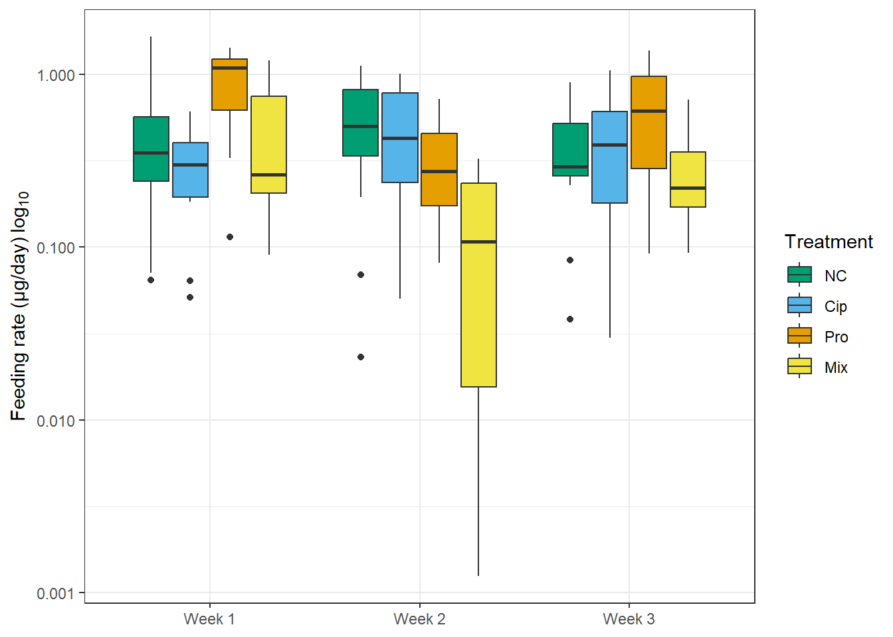
# save the plot
ggsave(afdw_after_feeding_boxplot,
filename = "afdw_after_feeding_boxplot.png",
path = 'C:\\Users\\Oster Test\\OneDrive\\Desktop\\Promotion\\Bioassays\\Schneckenversuch 2023\\Bottom_up_effects_biofilm_grazer\\output')Saving 7 x 5 in image4.2 AFDW after feeding
Calculate mean of afdw after feeding for each week
mean_afdw_after_feeding <- afdw_feeding_rate %>%
group_by(week, treatment) %>%
summarize(mean_afdw_after_feeding = mean(afdw))`summarise()` has grouped output by 'week'. You can override using the
`.groups` argument.print(mean_afdw_after_feeding)# A tibble: 12 × 3
# Groups: week [3]
week treatment mean_afdw_after_feeding
<fct> <chr> <dbl>
1 1 Cip 0.164
2 1 Mix 0.129
3 1 NC 0.120
4 1 Pro 0.185
5 2 Cip 0.291
6 2 Mix 0.130
7 2 NC 0.274
8 2 Pro 0.187
9 3 Cip 0.385
10 3 Mix 0.292
11 3 NC 0.462
12 3 Pro 0.546Histogram afdw after feeding
hist(afdw_feeding_rate $ afdw) 
skewness(afdw_feeding_rate $ afdw, na.rm = TRUE) [1] 1.052855AFDW after feeding not normal distributed. Log10 transformation for model.
Model afdw after feeding
# log10 transformation; adding 0.001
afdw_feeding_rate <- afdw_feeding_rate %>%
mutate(log_afdw = log10(afdw + 0.001))
# @ VS: Die Addition von 0.001 auch bei afdw machen, obwohl es keine 0-Werte gibt?
# response variable: log_afdw
# fixed effects: week + treatment + week:treatment
# random effect with constant intercept: (1|beaker)
afdw_after_feeding_lmer <- lmer(log_afdw ~ week + treatment + week:treatment + (1|beaker), data = afdw_feeding_rate)
afdw_after_feeding_lmer %>% r2# R2 for Mixed Models
Conditional R2: 0.680
Marginal R2: 0.652# Conditional R2: explained portion of the variance of the fixed and random effect together
# Marginal R2: declared share of the variance of the fixed components alone
plot(afdw_after_feeding_lmer) # point cloud looks evenly distributed --> normal distribution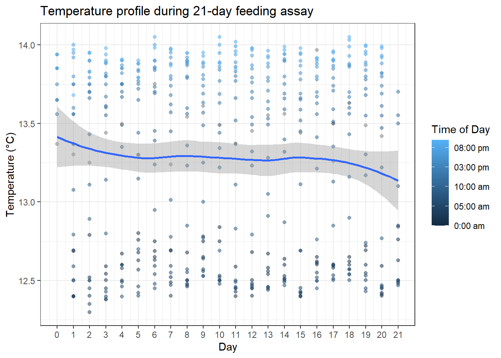
qreference(residuals(afdw_after_feeding_lmer)) # normalitydrop1(afdw_after_feeding_lmer, test = 'Chisq')boundary (singular) fit: see help('isSingular')Single term deletions
Model:
log_afdw ~ week + treatment + week:treatment + (1 | beaker)
npar AIC LRT Pr(Chi)
<none> -261.21
week:treatment 6 -211.06 62.152 1.643e-11 ***
---
Signif. codes: 0 '***' 0.001 '**' 0.01 '*' 0.05 '.' 0.1 ' ' 1# interaction of timepoint (week) and treatment highly significant
# now check at which timepoints is a difference between treatments
anova(afdw_after_feeding_lmer)Analysis of Variance Table
npar Sum Sq Mean Sq F value
week 2 11.5445 5.7722 246.883
treatment 3 1.9791 0.6597 28.216
week:treatment 6 1.6158 0.2693 11.518# conduct Tukey HSD-test for pairwise comparisons
afdw_tukey <- lsmeans(afdw_after_feeding_lmer, ~ treatment | week)
afdw_tukeyweek = 1:
treatment lsmean SE df lower.CL upper.CL
Cip -0.791 0.0319 314 -0.854 -0.729
Mix -0.936 0.0291 314 -0.994 -0.879
NC -0.934 0.0302 314 -0.993 -0.874
Pro -0.757 0.0307 314 -0.818 -0.697
week = 2:
treatment lsmean SE df lower.CL upper.CL
Cip -0.559 0.0319 314 -0.622 -0.496
Mix -0.906 0.0291 314 -0.963 -0.848
NC -0.609 0.0302 314 -0.669 -0.550
Pro -0.753 0.0307 314 -0.814 -0.693
week = 3:
treatment lsmean SE df lower.CL upper.CL
Cip -0.446 0.0319 314 -0.508 -0.383
Mix -0.563 0.0291 314 -0.620 -0.505
NC -0.344 0.0302 314 -0.403 -0.284
Pro -0.276 0.0307 314 -0.336 -0.215
Degrees-of-freedom method: kenward-roger
Confidence level used: 0.95 afdw_tukey1 <- contrast(afdw_tukey, 'pairwise')
afdw_tukeyweek = 1:
treatment lsmean SE df lower.CL upper.CL
Cip -0.791 0.0319 314 -0.854 -0.729
Mix -0.936 0.0291 314 -0.994 -0.879
NC -0.934 0.0302 314 -0.993 -0.874
Pro -0.757 0.0307 314 -0.818 -0.697
week = 2:
treatment lsmean SE df lower.CL upper.CL
Cip -0.559 0.0319 314 -0.622 -0.496
Mix -0.906 0.0291 314 -0.963 -0.848
NC -0.609 0.0302 314 -0.669 -0.550
Pro -0.753 0.0307 314 -0.814 -0.693
week = 3:
treatment lsmean SE df lower.CL upper.CL
Cip -0.446 0.0319 314 -0.508 -0.383
Mix -0.563 0.0291 314 -0.620 -0.505
NC -0.344 0.0302 314 -0.403 -0.284
Pro -0.276 0.0307 314 -0.336 -0.215
Degrees-of-freedom method: kenward-roger
Confidence level used: 0.95 afdw_summary <- summary(afdw_tukey1, infer = TRUE, adjust = 'mvt')
afdw_summaryweek = 1:
contrast estimate SE df lower.CL upper.CL t.ratio p.value
Cip - Mix 0.14503 0.0432 314 0.03344 0.2566 3.357 0.0048
Cip - NC 0.14234 0.0439 314 0.02895 0.2557 3.242 0.0072
Cip - Pro -0.03413 0.0443 314 -0.14850 0.0802 -0.771 0.8676
Mix - NC -0.00269 0.0419 314 -0.11097 0.1056 -0.064 0.9999
Mix - Pro -0.17916 0.0423 314 -0.28847 -0.0698 -4.233 0.0002
NC - Pro -0.17647 0.0430 314 -0.28761 -0.0653 -4.101 0.0003
week = 2:
contrast estimate SE df lower.CL upper.CL t.ratio p.value
Cip - Mix 0.34644 0.0432 314 0.23482 0.4581 8.019 <.0001
Cip - NC 0.05002 0.0439 314 -0.06340 0.1634 1.139 0.6653
Cip - Pro 0.19399 0.0443 314 0.07959 0.3084 4.381 0.0001
Mix - NC -0.29642 0.0419 314 -0.40473 -0.1881 -7.071 <.0001
Mix - Pro -0.15245 0.0423 314 -0.26180 -0.0431 -3.602 0.0021
NC - Pro 0.14397 0.0430 314 0.03279 0.2551 3.346 0.0049
week = 3:
contrast estimate SE df lower.CL upper.CL t.ratio p.value
Cip - Mix 0.11718 0.0432 314 0.00559 0.2288 2.712 0.0354
Cip - NC -0.10178 0.0439 314 -0.21516 0.0116 -2.319 0.0960
Cip - Pro -0.16991 0.0443 314 -0.28428 -0.0555 -3.837 0.0008
Mix - NC -0.21896 0.0419 314 -0.32723 -0.1107 -5.223 <.0001
Mix - Pro -0.28709 0.0423 314 -0.39639 -0.1778 -6.783 <.0001
NC - Pro -0.06813 0.0430 314 -0.17927 0.0430 -1.583 0.3895
Degrees-of-freedom method: kenward-roger
Confidence level used: 0.95
Conf-level adjustment: mvt method for 6 estimates
P value adjustment: mvt method for 6 tests Here treatments quite different within weeks. Compare weeks:
afdw_after_feeding_inter1 <- lsmeans(afdw_after_feeding_lmer, ~ week | treatment)
afdw_after_feeding_dunn1 <- contrast(afdw_after_feeding_inter1, 'pairwise')
(afdw_after_feeding_dunn_sum1 <- summary(afdw_after_feeding_dunn1, infer = TRUE, adjust = 'mvt'))treatment = Cip:
contrast estimate SE df lower.CL upper.CL t.ratio p.value
week1 - week2 -0.2321 0.0432 212 -0.334 -0.1300 -5.367 <.0001
week1 - week3 -0.3457 0.0432 212 -0.448 -0.2437 -7.994 <.0001
week2 - week3 -0.1136 0.0432 212 -0.216 -0.0115 -2.627 0.0249
treatment = Mix:
contrast estimate SE df lower.CL upper.CL t.ratio p.value
week1 - week2 -0.0307 0.0395 212 -0.124 0.0625 -0.778 0.7170
week1 - week3 -0.3736 0.0395 212 -0.467 -0.2804 -9.463 <.0001
week2 - week3 -0.3429 0.0395 212 -0.436 -0.2497 -8.685 <.0001
treatment = NC:
contrast estimate SE df lower.CL upper.CL t.ratio p.value
week1 - week2 -0.3244 0.0409 212 -0.421 -0.2280 -7.939 <.0001
week1 - week3 -0.5899 0.0409 212 -0.686 -0.4934 -14.434 <.0001
week2 - week3 -0.2654 0.0409 212 -0.362 -0.1690 -6.495 <.0001
treatment = Pro:
contrast estimate SE df lower.CL upper.CL t.ratio p.value
week1 - week2 -0.0040 0.0416 212 -0.102 0.0942 -0.096 0.9949
week1 - week3 -0.4815 0.0416 212 -0.580 -0.3833 -11.571 <.0001
week2 - week3 -0.4775 0.0416 212 -0.576 -0.3793 -11.475 <.0001
Degrees-of-freedom method: kenward-roger
Confidence level used: 0.95
Conf-level adjustment: mvt method for 3 estimates
P value adjustment: mvt method for 3 tests Week 1 & 2 for treatments Mix & Pro similar. Everything else shows differences.
Boxplot afdw after feeding of 7/14/21 days
afdw_after_feeding_boxplot <- ggplot(data = afdw_feeding_rate,
mapping = aes(x = factor(week),
y = afdw,
fill = factor(treatment, levels = c("NC", "Cip", "Pro", "Mix")))) +
geom_boxplot() +
scale_fill_manual(values = c("NC" = "#009E73", "Cip" = "#56B4E9", "Pro" = "#E69F00", "Mix" = "#F0E442")) +
scale_color_okabe_ito() +
theme_bw() +
labs(x = NULL , fill = "Treatment") +
scale_x_discrete(labels = c("Week 1", "Week 2", "Week 3")) +
scale_y_continuous(trans = "log10") +
labs(y = expression("AFDW (mg/cm"^"2"*")" ~ log[10]))
afdw_after_feeding_boxplot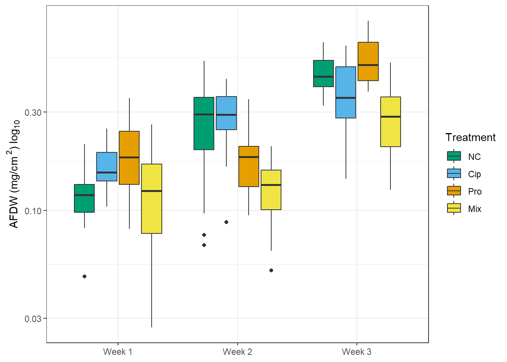
# save the plot
ggsave(afdw_after_feeding_boxplot,
filename = "afdw_after_feeding_boxplot.png",
path = 'C:\\Users\\Oster Test\\OneDrive\\Desktop\\Promotion\\Bioassays\\Schneckenversuch 2023\\Bottom_up_effects_biofilm_grazer\\output')Saving 7 x 5 in image5 Dryweight and growth snails
@ VS: Ich hatte 20 Schnecken aus der Zucht eingewogen, um das Wachstum zu berechnen. Ich habe 3 Schnecken verloren, und die restlichen 7 (in der alten Tabelle, die du gesehen hast, waren es 10 Culture Schnecken) in der neuen Tabelle ergänzt. Die Schnecken wurden alle trocken gewogen. Also das ist das Gewicht nach Gefriertrocknung und ohne Schale, die habe ich bei allen Schnecken immer entfernt, da da teilweise Biofilm drauf gewachsen ist. Ich würde den Endpunkt an sich gerne drinlassen, du hast aber natürlich Recht, dass die Standardabweichung sehr groß ist, aber das stelle ich in den Boxplots ja dar.. was denkst du? Du hast da mehr Erfahrung, wenn du davon abrätst, dann nehme ich ihn raus. Ich habe die Schneckenzucht auch noch, also könnte ich noch mehr Culture snails einwiegen? Der Versuch aber dann 1 Jahr her.. Wahrscheinlich nicht mehr vergleichbar?
# insert data
dryweight_snails <-
read.table(file.path(prj, "data\\dryweight_snails.txt"),
header = TRUE, sep = "\t")
View(dryweight_snails)
# 3 snails from the 20 baseline (culture) snails were lost during the analyses.Calculate mean dryweight of all treatments and the culture snails
mean_dryweight_snails <- dryweight_snails %>%
group_by(treatment) %>%
summarize(mean_dryweight_snails = mean(dryweight_mg))
print(mean_dryweight_snails)# A tibble: 5 × 2
treatment mean_dryweight_snails
<chr> <dbl>
1 Cip 0.534
2 Culture 0.439
3 Mix 0.507
4 NC 0.679
5 Pro 0.553Snails from feeding assay (fed with biofilm) heavier than snails from culture (fed with Tetraphyll flakes).
Calculate growth:
growth_snails <- dryweight_snails %>%
dplyr::mutate(growth_µg_dw_per_day = ((dryweight_mg - median(dryweight_mg[treatment == "Culture"])) / 7) * 1000)
# multiply by 1000 to obtain a growth unit of µg dryweight per day
# calculate the growth in percentage in comparison to culture snails
percental_growth <- growth_snails %>%
group_by(treatment) %>%
summarize(mean_dryweight = mean(dryweight_mg)) %>%
mutate(percental_growth = (mean_dryweight / mean_dryweight[treatment == "Culture"]) * 100 - 100)
percental_growth# A tibble: 5 × 3
treatment mean_dryweight percental_growth
<chr> <dbl> <dbl>
1 Cip 0.534 21.8
2 Culture 0.439 0
3 Mix 0.507 15.7
4 NC 0.679 54.8
5 Pro 0.553 26.1Histogram snail growth
# filter culture snails
filtered_growth <- growth_snails %>%
filter(!treatment %in% c("Culture"))
hist(filtered_growth $ growth_µg_dw_per_day) 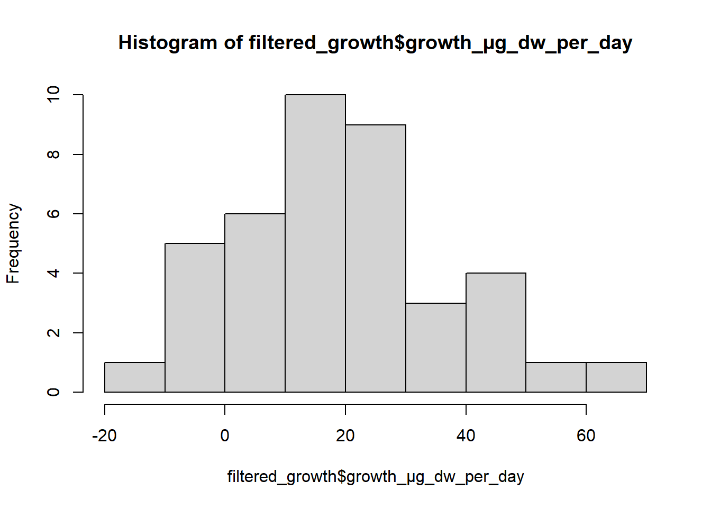
skewness(filtered_growth $ growth_µg_dw_per_day, na.rm = TRUE) [1] 0.5211954shapiro.test(filtered_growth $ growth_µg_dw_per_day)
Shapiro-Wilk normality test
data: filtered_growth$growth_µg_dw_per_day
W = 0.9753, p-value = 0.52Growth normal distributed.
Model growth snails
model_growth_snails <- lm(growth_µg_dw_per_day ~ treatment, data = filtered_growth)
plot(model_growth_snails) # point cloud looks evenly distributed --> normal distribution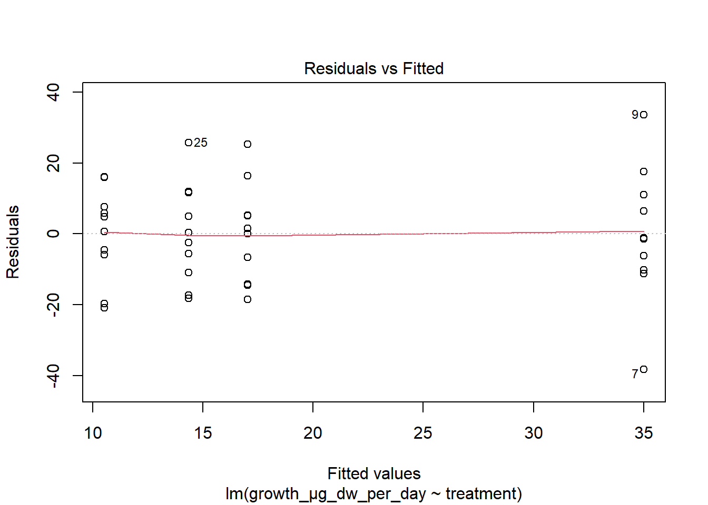
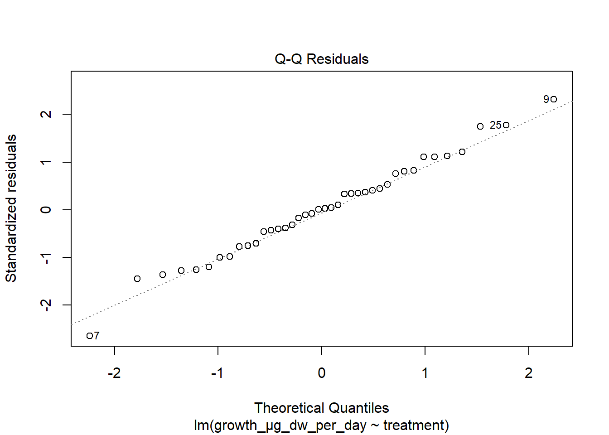
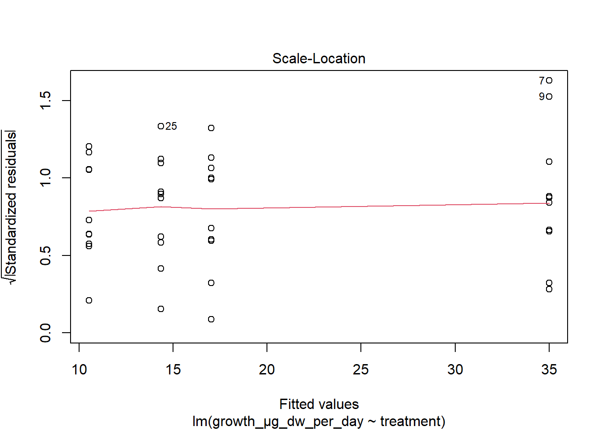
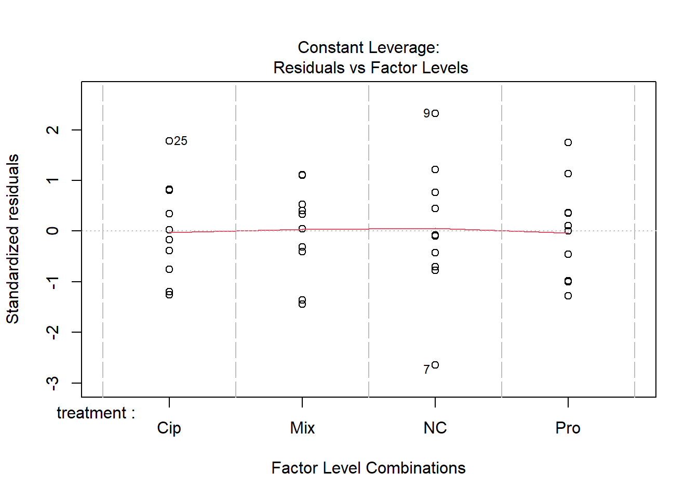
qreference(residuals(model_growth_snails)) # normal distribution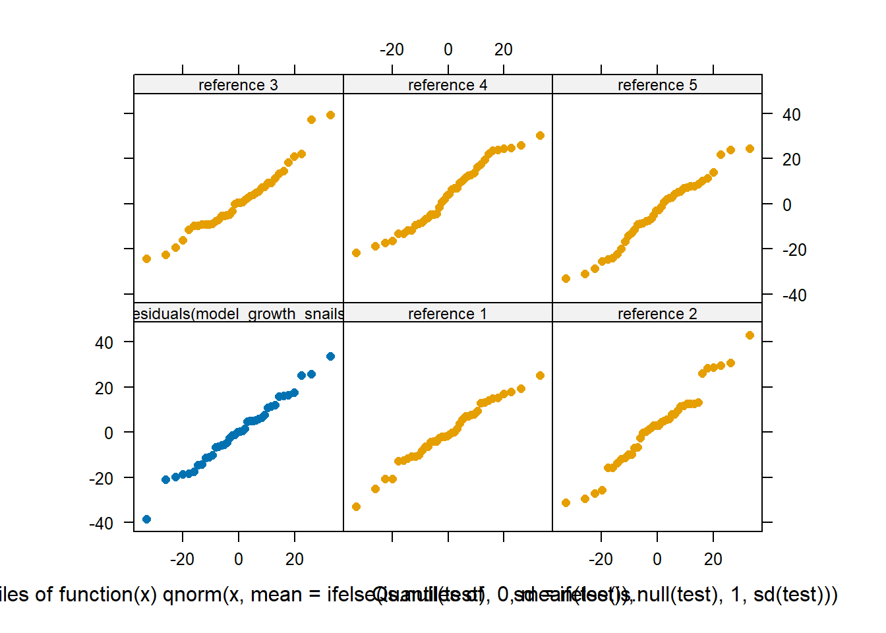
anova(model_growth_snails)Analysis of Variance Table
Response: growth_µg_dw_per_day
Df Sum Sq Mean Sq F value Pr(>F)
treatment 3 3534.2 1178.05 5.0763 0.004928 **
Residuals 36 8354.5 232.07
---
Signif. codes: 0 '***' 0.001 '**' 0.01 '*' 0.05 '.' 0.1 ' ' 1Explanatory variable “treatment” highly significant. Now check differences between treatments:
growth_snails_inter <- lsmeans(model_growth_snails, ~ treatment)
growth_snails_inter_dunn1 <- contrast(growth_snails_inter, 'pairwise')
growth_snails_inter_dunn_sum1 <- summary(growth_snails_inter_dunn1, infer = TRUE, adjust = 'mvt')
growth_snails_inter_dunn1 contrast estimate SE df t.ratio p.value
Cip - Mix 3.84 6.81 36 0.564 0.9422
Cip - NC -20.65 6.81 36 -3.031 0.0223
Cip - Pro -2.66 6.81 36 -0.391 0.9794
Mix - NC -24.49 6.81 36 -3.595 0.0051
Mix - Pro -6.50 6.81 36 -0.955 0.7757
NC - Pro 17.99 6.81 36 2.640 0.0564
P value adjustment: tukey method for comparing a family of 4 estimates - Significant difference between growth of Cip and Mix snails compared to NC; almost significant difference (p=0.0564) between Pro treatment and NC
Boxplot growth snails
# plot
growth_snails_boxplot <- ggplot(data = filtered_growth,
mapping = aes(x = factor(treatment, levels = c("NC", "Cip", "Pro", "Mix")),
y = growth_µg_dw_per_day,
fill = factor(treatment, levels = c("NC", "Cip", "Pro", "Mix")))) +
geom_boxplot() +
scale_fill_manual(values = c("NC" = "#009E73", "Cip" = "#56B4E9", "Pro" = "#E69F00", "Mix" = "#F0E442"),
breaks = c("NC", "Cip", "Pro", "Mix")) +
scale_color_okabe_ito() +
theme_bw() +
labs(x = NULL , y = "Growth (µg dryweight / day)", fill = "Treatment") +
scale_x_discrete(labels = c("NC", "Cip", "Pro", "Mix")) +
labs(title = expression(paste("Growth of ", italic("Potamopyrgus antipodarum"), " after 21-day feeding assay"))) +
annotate("text", x = 1.5, y = max(filtered_growth$growth_µg_dw_per_day) + 2.5,
label = "*", size = 6) +
geom_segment(aes(x = 1, xend = 2, y = max(growth_µg_dw_per_day) + 2, yend = max(growth_µg_dw_per_day) + 2),
lineend = "round", linewidth = 0.8) +
annotate("text", x = 2.5, y = max(filtered_growth$growth_µg_dw_per_day) + 6,
label = "**", size = 6) +
geom_segment(aes(x = 1, xend = 4, y = max(growth_µg_dw_per_day) + 5, yend = max(growth_µg_dw_per_day) + 5),
lineend = "round", linewidth = 0.8)
growth_snails_boxplot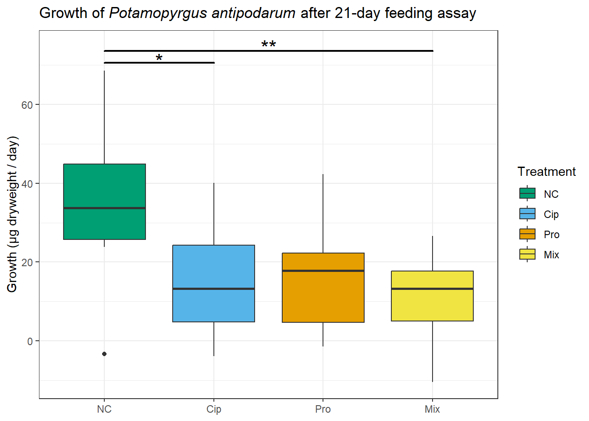
# save the plot
ggsave(growth_snails_boxplot,
filename = "growth_snails_boxplot.png",
path = 'C:\\Users\\Oster Test\\OneDrive\\Desktop\\Promotion\\Bioassays\\Schneckenversuch 2023\\Bottom_up_effects_biofilm_grazer\\output')Saving 7 x 5 in image6 Fatty acid composition snails
# insert data
FA_Snails_absolute <-
read.table(file.path(prj, "data\\FA_Snails_absolute.txt"),
header = TRUE, sep = "\t")
View(FA_Snails_absolute)
# remove NAs, measurement < LOQ
FA_Snails_absolute <- na.omit(FA_Snails_absolute)In FA_Snails_absolute.txt: Snail 13, 14 and 29 (S_13, S_14, S_29) removed due to strongly deviating measured values compared to other snails.
Following fatty acids were not considered for FA content in snails due to too less values: C10:0, C11:0, C14:1, C15:1, C17:1, C20:3(n-3), C20:3(n-6), C21:0, C22:0 and C24:1.
Therefore, delete rows with respective fatty acids:
FA_Snails_absolute <- FA_Snails_absolute %>%
filter(!fa %in% c("C10:0", "C11:0", "C14:1", "C15:1", "C17:1", "C20:3(n-3)", "C20:3(n-6)", "C21:0", "C22:0", "C24:1"))Histogram FA Snails
hist(FA_Snails_absolute $ fa_conc) skewness(FA_Snails_absolute $ fa_conc, na.rm = TRUE) [1] 4.146459shapiro.test(FA_Snails_absolute $ fa_conc)
Shapiro-Wilk normality test
data: FA_Snails_absolute$fa_conc
W = 0.45427, p-value < 2.2e-16Fatty acid concentration not normal distributed and right skewed.
Model FA Snails
# log10 transformation; adding 0.001
FA_Snails_absolute <- FA_Snails_absolute %>%
mutate(log_fa_conc = log10(fa_conc + 0.001))
# response variable: log_fa_conc
# fixed effects: treatment + fa + treatment:fa
# random effect with constant intercept: (1|replicate); first change to factor
FA_Snails_absolute $ replicate <- as.factor(FA_Snails_absolute $ replicate)
FA_snails_lmer <- lmer(log_fa_conc ~ treatment + fa + treatment:fa + (1|replicate), data = FA_Snails_absolute)plot(FA_snails_lmer) 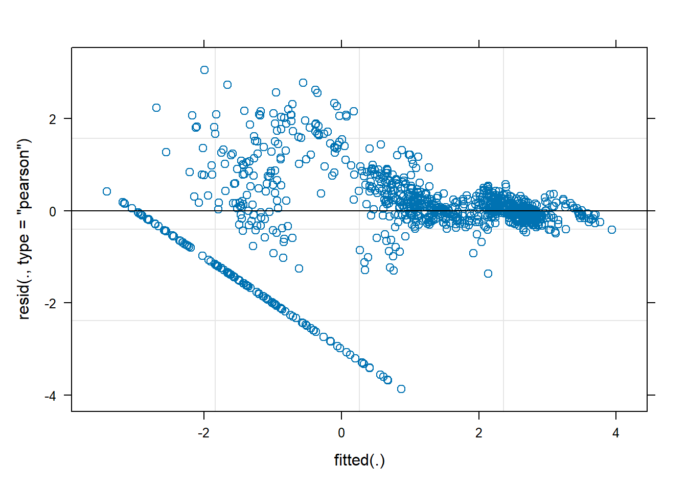
# @ VS: das sieht nicht wirklich gleichmäßig verteilt aus, oder? Was würdest du jetzt machen?
qreference(residuals(FA_snails_lmer)) 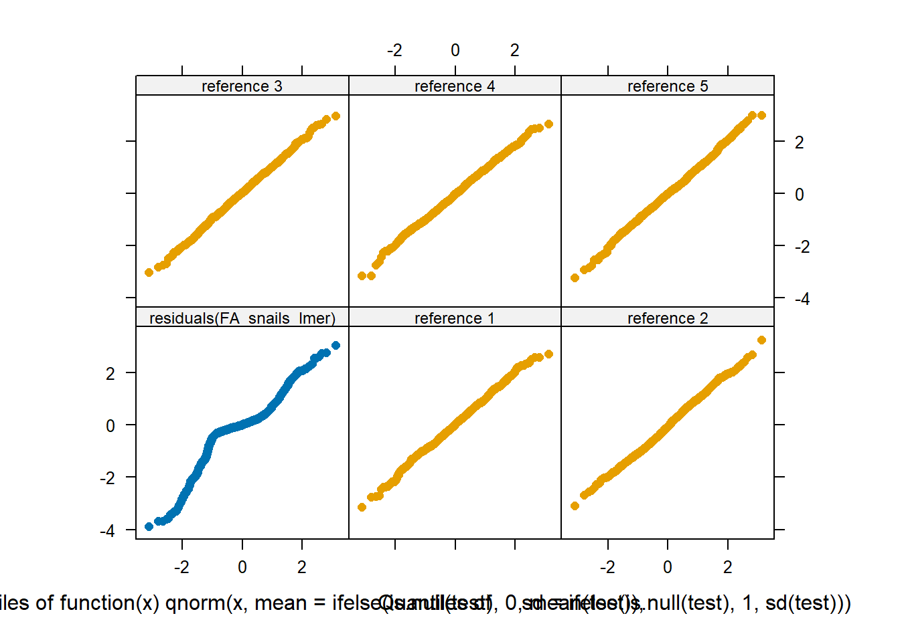
# @ VS: das sieht schon wieder okay aus
anova(FA_snails_lmer)Analysis of Variance Table
npar Sum Sq Mean Sq F value
treatment 3 6.57 2.190 2.0929
fa 24 2272.54 94.689 90.4809
treatment:fa 72 226.18 3.141 3.0017FA_snails_inter <- lsmeans(FA_snails_lmer, ~ treatment | fa)
FA_snails_interfa = C08:0:
treatment lsmean SE df lower.CL upper.CL
Cip -1.477 0.338 708 -2.13999 -0.8142
Mix -1.292 0.356 708 -1.99071 -0.5932
NC -2.393 0.338 708 -3.05561 -1.7298
Pro -1.848 0.377 708 -2.58901 -1.1068
fa = C12:0:
treatment lsmean SE df lower.CL upper.CL
Cip 0.612 0.338 708 -0.05041 1.2754
Mix -1.102 0.356 708 -1.80115 -0.4037
NC -0.912 0.338 708 -1.57492 -0.2492
Pro -0.647 0.377 708 -1.38848 0.0938
fa = C13:0:
treatment lsmean SE df lower.CL upper.CL
Cip 2.185 0.338 708 1.52238 2.8481
Mix -0.677 0.356 708 -1.37601 0.0215
NC -0.108 0.338 708 -0.77082 0.5549
Pro 0.845 0.377 708 0.10425 1.5865
fa = C14:0:
treatment lsmean SE df lower.CL upper.CL
Cip 2.129 0.338 708 1.46634 2.7921
Mix 0.698 0.356 708 -0.00121 1.3963
NC 2.027 0.338 708 1.36429 2.6901
Pro 1.959 0.377 708 1.21778 2.7000
fa = C15:0:
treatment lsmean SE df lower.CL upper.CL
Cip 1.354 0.338 708 0.69157 2.0173
Mix 0.159 0.356 708 -0.53926 0.8582
NC 1.268 0.338 708 0.60469 1.9305
Pro 1.282 0.377 708 0.54052 2.0228
fa = C16:0:
treatment lsmean SE df lower.CL upper.CL
Cip 3.450 0.338 708 2.78709 4.1129
Mix 3.362 0.356 708 2.66358 4.0611
NC 3.415 0.338 708 2.75175 4.0775
Pro 3.400 0.377 708 2.65912 4.1414
fa = C16:1:
treatment lsmean SE df lower.CL upper.CL
Cip 2.655 0.338 708 1.99188 3.3176
Mix 2.445 0.356 708 1.74601 3.1435
NC 2.805 0.338 708 2.14216 3.4679
Pro 2.555 0.377 708 1.81407 3.2963
fa = C17:0:
treatment lsmean SE df lower.CL upper.CL
Cip 1.492 0.338 708 0.82956 2.1553
Mix 1.399 0.356 708 0.70025 2.0977
NC 1.482 0.338 708 0.81887 2.1446
Pro 1.487 0.377 708 0.74552 2.2278
fa = C18:0:
treatment lsmean SE df lower.CL upper.CL
Cip 2.601 0.338 708 1.93843 3.2642
Mix 2.547 0.356 708 1.84864 3.2461
NC 2.403 0.338 708 1.73985 3.0656
Pro 2.573 0.377 708 1.83232 3.3146
fa = C18:1:
treatment lsmean SE df lower.CL upper.CL
Cip 2.840 0.338 708 2.17685 3.5026
Mix 2.695 0.356 708 1.99625 3.3937
NC 2.874 0.338 708 2.21076 3.5365
Pro 2.569 0.377 708 1.82809 3.3103
fa = C18:2(n-6c):
treatment lsmean SE df lower.CL upper.CL
Cip 2.518 0.338 708 1.85535 3.1811
Mix 2.446 0.356 708 1.74689 3.1444
NC 2.621 0.338 708 1.95794 3.2837
Pro 2.510 0.377 708 1.76902 3.2513
fa = C18:2(n-6t):
treatment lsmean SE df lower.CL upper.CL
Cip -1.281 0.338 708 -1.94368 -0.6179
Mix -1.907 0.376 735 -2.64554 -1.1679
NC -1.066 0.338 708 -1.72907 -0.4033
Pro -1.081 0.377 708 -1.82247 -0.3402
fa = C18:3(n-3):
treatment lsmean SE df lower.CL upper.CL
Cip 2.442 0.338 708 1.77913 3.1049
Mix 2.347 0.356 708 1.64780 3.0453
NC 2.598 0.338 708 1.93500 3.2608
Pro 2.400 0.377 708 1.65871 3.1410
fa = C18:3(n-6):
treatment lsmean SE df lower.CL upper.CL
Cip -1.023 0.355 732 -1.72018 -0.3266
Mix -1.530 0.356 708 -2.22887 -0.8314
NC -2.746 0.338 708 -3.40876 -2.0830
Pro -1.470 0.402 738 -2.25949 -0.6804
fa = C18:4(n-3):
treatment lsmean SE df lower.CL upper.CL
Cip 0.694 0.338 708 0.03133 1.3571
Mix 0.674 0.356 708 -0.02488 1.3726
NC 1.304 0.338 708 0.64073 1.9665
Pro 0.619 0.377 708 -0.12167 1.3606
fa = C20:0:
treatment lsmean SE df lower.CL upper.CL
Cip -0.932 0.338 708 -1.59455 -0.2688
Mix -1.426 0.356 708 -2.12459 -0.7271
NC -1.465 0.338 708 -2.12780 -0.8020
Pro -1.208 0.377 708 -1.94879 -0.4665
fa = C20:1:
treatment lsmean SE df lower.CL upper.CL
Cip 0.664 0.338 708 0.00140 1.3272
Mix 0.466 0.356 708 -0.23303 1.1645
NC 1.061 0.338 708 0.39859 1.7244
Pro 0.841 0.377 708 0.09949 1.5817
fa = C20:2(n-6):
treatment lsmean SE df lower.CL upper.CL
Cip 1.641 0.338 708 0.97847 2.3042
Mix 1.553 0.356 708 0.85439 2.2519
NC 1.818 0.338 708 1.15552 2.4813
Pro 1.658 0.377 708 0.91698 2.3992
fa = C20:4(n-6):
treatment lsmean SE df lower.CL upper.CL
Cip 2.505 0.338 708 1.84165 3.1674
Mix 2.535 0.356 708 1.83644 3.2339
NC 2.549 0.338 708 1.88566 3.2114
Pro 2.503 0.377 708 1.76181 3.2441
fa = C20:5(n-3):
treatment lsmean SE df lower.CL upper.CL
Cip 2.473 0.338 708 1.81055 3.1363
Mix 2.469 0.356 708 1.77006 3.1675
NC 2.503 0.338 708 1.83994 3.1657
Pro 2.444 0.377 708 1.70258 3.1848
fa = C22:1:
treatment lsmean SE df lower.CL upper.CL
Cip 0.970 0.338 708 0.30676 1.6325
Mix 1.344 0.356 708 0.64503 2.0425
NC -3.000 0.338 708 -3.66288 -2.3371
Pro -0.231 0.377 708 -0.97248 0.5098
fa = C22:2:
treatment lsmean SE df lower.CL upper.CL
Cip -1.487 0.338 708 -2.14958 -0.8238
Mix -1.163 0.356 708 -1.86167 -0.4642
NC -1.837 0.338 708 -2.49966 -1.1739
Pro -2.275 0.377 708 -3.01637 -1.5341
fa = C22:5(n-3):
treatment lsmean SE df lower.CL upper.CL
Cip 0.951 0.338 708 0.28844 1.6142
Mix 0.955 0.356 708 0.25649 1.6540
NC 1.053 0.338 708 0.38975 1.7155
Pro 0.928 0.377 708 0.18685 1.6691
fa = C22:6(n-3):
treatment lsmean SE df lower.CL upper.CL
Cip 0.784 0.338 708 0.12100 1.4468
Mix 0.733 0.356 708 0.03451 1.4320
NC 1.089 0.338 708 0.42627 1.7520
Pro 0.796 0.377 708 0.05496 1.5372
fa = C24:0:
treatment lsmean SE df lower.CL upper.CL
Cip -0.381 0.338 708 -1.04342 0.2823
Mix -0.675 0.356 708 -1.37402 0.0235
NC 0.487 0.338 708 -0.17580 1.1500
Pro -0.295 0.377 708 -1.03595 0.4463
Degrees-of-freedom method: kenward-roger
Confidence level used: 0.95 FA_snails_inter_dunn1 <- contrast(FA_snails_inter, 'pairwise')
FA_snails_inter_dunn_sum1 <- summary(FA_snails_inter_dunn1, infer = TRUE, adjust = 'mvt')
FA_snails_inter_dunn_sum1fa = C08:0:
contrast estimate SE df lower.CL upper.CL t.ratio p.value
Cip - Mix -0.18514 0.491 708 -1.4480 1.0777 -0.377 0.9817
Cip - NC 0.91562 0.477 708 -0.3136 2.1448 1.918 0.2213
Cip - Pro 0.37077 0.506 708 -0.9330 1.6745 0.732 0.8841
Mix - NC 1.10076 0.491 708 -0.1621 2.3636 2.244 0.1127
Mix - Pro 0.55591 0.519 708 -0.7796 1.8915 1.072 0.7068
NC - Pro -0.54485 0.506 708 -1.8486 0.7589 -1.076 0.7042
fa = C12:0:
contrast estimate SE df lower.CL upper.CL t.ratio p.value
Cip - Mix 1.71488 0.491 708 0.4511 2.9786 3.496 0.0028
Cip - NC 1.52451 0.477 708 0.2945 2.7546 3.193 0.0079
Cip - Pro 1.25983 0.506 708 -0.0448 2.5645 2.488 0.0624
Mix - NC -0.19038 0.491 708 -1.4541 1.0734 -0.388 0.9801
Mix - Pro -0.45505 0.519 708 -1.7915 0.8814 -0.877 0.8166
NC - Pro -0.26467 0.506 708 -1.5693 1.0400 -0.523 0.9536
fa = C13:0:
contrast estimate SE df lower.CL upper.CL t.ratio p.value
Cip - Mix 2.86253 0.491 708 1.5984 4.1266 5.835 <.0001
Cip - NC 2.29321 0.477 708 1.0628 3.5236 4.803 <.0001
Cip - Pro 1.33989 0.506 708 0.0349 2.6449 2.646 0.0413
Mix - NC -0.56932 0.491 708 -1.8334 0.6948 -1.161 0.6518
Mix - Pro -1.52264 0.519 708 -2.8595 -0.1858 -2.935 0.0181
NC - Pro -0.95332 0.506 708 -2.2583 0.3517 -1.882 0.2363
fa = C14:0:
contrast estimate SE df lower.CL upper.CL t.ratio p.value
Cip - Mix 1.43169 0.491 708 0.1690 2.6944 2.918 0.0192
Cip - NC 0.10204 0.477 708 -1.1270 1.3311 0.214 0.9965
Cip - Pro 0.17031 0.506 708 -1.1333 1.4739 0.336 0.9869
Mix - NC -1.32964 0.491 708 -2.5924 -0.0669 -2.710 0.0345
Mix - Pro -1.26138 0.519 708 -2.5968 0.0740 -2.431 0.0722
NC - Pro 0.06827 0.506 708 -1.2353 1.3719 0.135 0.9991
fa = C15:0:
contrast estimate SE df lower.CL upper.CL t.ratio p.value
Cip - Mix 1.19498 0.491 708 -0.0680 2.4579 2.436 0.0712
Cip - NC 0.08687 0.477 708 -1.1424 1.3161 0.182 0.9979
Cip - Pro 0.07281 0.506 708 -1.2310 1.3766 0.144 0.9989
Mix - NC -1.10810 0.491 708 -2.3710 0.1548 -2.259 0.1085
Mix - Pro -1.12217 0.519 708 -2.4578 0.2135 -2.163 0.1344
NC - Pro -0.01407 0.506 708 -1.3179 1.2897 -0.028 1.0000
fa = C16:0:
contrast estimate SE df lower.CL upper.CL t.ratio p.value
Cip - Mix 0.08765 0.491 708 -1.1754 1.3507 0.179 0.9980
Cip - NC 0.03534 0.477 708 -1.1940 1.2647 0.074 0.9999
Cip - Pro 0.04972 0.506 708 -1.2542 1.3536 0.098 0.9997
Mix - NC -0.05231 0.491 708 -1.3153 1.2107 -0.107 0.9996
Mix - Pro -0.03793 0.519 708 -1.3737 1.2978 -0.073 0.9999
NC - Pro 0.01439 0.506 708 -1.2895 1.3183 0.028 1.0000
fa = C16:1:
contrast estimate SE df lower.CL upper.CL t.ratio p.value
Cip - Mix 0.21001 0.491 708 -1.0536 1.4737 0.428 0.9736
Cip - NC -0.15028 0.477 708 -1.3802 1.0797 -0.315 0.9892
Cip - Pro 0.09957 0.506 708 -1.2050 1.4041 0.197 0.9973
Mix - NC -0.36029 0.491 708 -1.6239 0.9033 -0.734 0.8831
Mix - Pro -0.11045 0.519 708 -1.4468 1.2259 -0.213 0.9966
NC - Pro 0.24985 0.506 708 -1.0547 1.5544 0.493 0.9605
fa = C17:0:
contrast estimate SE df lower.CL upper.CL t.ratio p.value
Cip - Mix 0.09345 0.491 708 -1.1701 1.3570 0.190 0.9975
Cip - NC 0.01069 0.477 708 -1.2191 1.2405 0.022 1.0000
Cip - Pro 0.00580 0.506 708 -1.2986 1.3102 0.011 1.0000
Mix - NC -0.08277 0.491 708 -1.3463 1.1807 -0.169 0.9983
Mix - Pro -0.08766 0.519 708 -1.4239 1.2486 -0.169 0.9983
NC - Pro -0.00489 0.506 708 -1.3093 1.2995 -0.010 1.0000
fa = C18:0:
contrast estimate SE df lower.CL upper.CL t.ratio p.value
Cip - Mix 0.05393 0.491 708 -1.2094 1.3172 0.110 0.9995
Cip - NC 0.19858 0.477 708 -1.0310 1.4282 0.416 0.9757
Cip - Pro 0.02787 0.506 708 -1.2763 1.3321 0.055 0.9999
Mix - NC 0.14465 0.491 708 -1.1186 1.4079 0.295 0.9911
Mix - Pro -0.02606 0.519 708 -1.3621 1.3099 -0.050 1.0000
NC - Pro -0.17072 0.506 708 -1.4749 1.1335 -0.337 0.9868
fa = C18:1:
contrast estimate SE df lower.CL upper.CL t.ratio p.value
Cip - Mix 0.14474 0.491 708 -1.1186 1.4081 0.295 0.9911
Cip - NC -0.03391 0.477 708 -1.2636 1.1958 -0.071 0.9999
Cip - Pro 0.27052 0.506 708 -1.0338 1.5748 0.534 0.9507
Mix - NC -0.17865 0.491 708 -1.4420 1.0847 -0.364 0.9835
Mix - Pro 0.12578 0.519 708 -1.2103 1.4619 0.242 0.9950
NC - Pro 0.30443 0.506 708 -0.9999 1.6087 0.601 0.9316
fa = C18:2(n-6c):
contrast estimate SE df lower.CL upper.CL t.ratio p.value
Cip - Mix 0.07260 0.491 708 -1.1894 1.3346 0.148 0.9988
Cip - NC -0.10259 0.477 708 -1.3309 1.1257 -0.215 0.9965
Cip - Pro 0.00808 0.506 708 -1.2948 1.3109 0.016 1.0000
Mix - NC -0.17519 0.491 708 -1.4372 1.0868 -0.357 0.9844
Mix - Pro -0.06452 0.519 708 -1.3991 1.2701 -0.124 0.9993
NC - Pro 0.11067 0.506 708 -1.1922 1.4135 0.219 0.9963
fa = C18:2(n-6t):
contrast estimate SE df lower.CL upper.CL t.ratio p.value
Cip - Mix 0.62591 0.506 723 -0.6759 1.9278 1.238 0.6025
Cip - NC -0.21460 0.477 708 -1.4435 1.0143 -0.449 0.9697
Cip - Pro -0.19945 0.506 708 -1.5034 1.1045 -0.394 0.9792
Mix - NC -0.84051 0.506 723 -2.1422 0.4612 -1.662 0.3441
Mix - Pro -0.82535 0.533 722 -2.1974 0.5467 -1.548 0.4088
NC - Pro 0.01516 0.506 708 -1.2883 1.3186 0.030 1.0000
fa = C18:3(n-3):
contrast estimate SE df lower.CL upper.CL t.ratio p.value
Cip - Mix 0.09547 0.491 708 -1.1677 1.3586 0.195 0.9974
Cip - NC -0.15588 0.477 708 -1.3853 1.0736 -0.326 0.9880
Cip - Pro 0.04217 0.506 708 -1.2618 1.3462 0.083 0.9998
Mix - NC -0.25135 0.491 708 -1.5145 1.0118 -0.512 0.9561
Mix - Pro -0.05329 0.519 708 -1.3891 1.2825 -0.103 0.9996
NC - Pro 0.19805 0.506 708 -1.1060 1.5021 0.391 0.9797
fa = C18:3(n-6):
contrast estimate SE df lower.CL upper.CL t.ratio p.value
Cip - Mix 0.50675 0.503 721 -0.7868 1.8003 1.008 0.7443
Cip - NC 1.72249 0.490 721 0.4616 2.9834 3.516 0.0028
Cip - Pro 0.44657 0.536 736 -0.9331 1.8262 0.833 0.8387
Mix - NC 1.21574 0.491 708 -0.0475 2.4790 2.478 0.0639
Mix - Pro -0.06018 0.537 725 -1.4425 1.3221 -0.112 0.9995
NC - Pro -1.27592 0.525 726 -2.6274 0.0756 -2.430 0.0725
fa = C18:4(n-3):
contrast estimate SE df lower.CL upper.CL t.ratio p.value
Cip - Mix 0.02036 0.491 708 -1.2431 1.2838 0.041 1.0000
Cip - NC -0.60940 0.477 708 -1.8391 0.6203 -1.276 0.5781
Cip - Pro 0.07476 0.506 708 -1.2296 1.3791 0.148 0.9989
Mix - NC -0.62976 0.491 708 -1.8932 0.6337 -1.284 0.5734
Mix - Pro 0.05440 0.519 708 -1.2817 1.3905 0.105 0.9996
NC - Pro 0.68416 0.506 708 -0.6202 1.9885 1.351 0.5305
fa = C20:0:
contrast estimate SE df lower.CL upper.CL t.ratio p.value
Cip - Mix 0.49419 0.491 708 -0.7704 1.7588 1.007 0.7450
Cip - NC 0.53326 0.477 708 -0.6976 1.7641 1.117 0.6791
Cip - Pro 0.27600 0.506 708 -1.0296 1.5816 0.545 0.9478
Mix - NC 0.03907 0.491 708 -1.2256 1.3037 0.080 0.9998
Mix - Pro -0.21819 0.519 708 -1.5556 1.1192 -0.421 0.9749
NC - Pro -0.25726 0.506 708 -1.5628 1.0483 -0.508 0.9572
fa = C20:1:
contrast estimate SE df lower.CL upper.CL t.ratio p.value
Cip - Mix 0.19857 0.491 708 -1.0642 1.4614 0.405 0.9776
Cip - NC -0.39719 0.477 708 -1.6263 0.8319 -0.832 0.8392
Cip - Pro -0.17633 0.506 708 -1.4800 1.1274 -0.348 0.9855
Mix - NC -0.59576 0.491 708 -1.8586 0.6671 -1.214 0.6176
Mix - Pro -0.37490 0.519 708 -1.7104 0.9606 -0.723 0.8880
NC - Pro 0.22086 0.506 708 -1.0828 1.5246 0.436 0.9722
fa = C20:2(n-6):
contrast estimate SE df lower.CL upper.CL t.ratio p.value
Cip - Mix 0.08823 0.491 708 -1.1756 1.3521 0.180 0.9979
Cip - NC -0.17705 0.477 708 -1.4072 1.0531 -0.371 0.9826
Cip - Pro -0.01676 0.506 708 -1.3215 1.2880 -0.033 1.0000
Mix - NC -0.26527 0.491 708 -1.5291 0.9986 -0.541 0.9490
Mix - Pro -0.10498 0.519 708 -1.4415 1.2316 -0.202 0.9971
NC - Pro 0.16029 0.506 708 -1.1444 1.4650 0.317 0.9890
fa = C20:4(n-6):
contrast estimate SE df lower.CL upper.CL t.ratio p.value
Cip - Mix -0.03064 0.491 708 -1.2939 1.2326 -0.062 0.9999
Cip - NC -0.04401 0.477 708 -1.2736 1.1856 -0.092 0.9997
Cip - Pro 0.00160 0.506 708 -1.3026 1.3058 0.003 1.0000
Mix - NC -0.01336 0.491 708 -1.2766 1.2499 -0.027 1.0000
Mix - Pro 0.03224 0.519 708 -1.3037 1.3682 0.062 0.9999
NC - Pro 0.04561 0.506 708 -1.2586 1.3498 0.090 0.9997
fa = C20:5(n-3):
contrast estimate SE df lower.CL upper.CL t.ratio p.value
Cip - Mix 0.00463 0.491 708 -1.2583 1.2676 0.009 1.0000
Cip - NC -0.02939 0.477 708 -1.2586 1.1999 -0.062 0.9999
Cip - Pro 0.02973 0.506 708 -1.2741 1.3335 0.059 0.9999
Mix - NC -0.03402 0.491 708 -1.2970 1.2289 -0.069 0.9999
Mix - Pro 0.02510 0.519 708 -1.3105 1.3607 0.048 1.0000
NC - Pro 0.05912 0.506 708 -1.2447 1.3629 0.117 0.9994
fa = C22:1:
contrast estimate SE df lower.CL upper.CL t.ratio p.value
Cip - Mix -0.37413 0.491 708 -1.6382 0.8899 -0.763 0.8711
Cip - NC 3.96964 0.477 708 2.7393 5.2000 8.314 <.0001
Cip - Pro 1.20099 0.506 708 -0.1040 2.5060 2.371 0.0836
Mix - NC 4.34377 0.491 708 3.0797 5.6079 8.855 <.0001
Mix - Pro 1.57512 0.519 708 0.2383 2.9120 3.036 0.0134
NC - Pro -2.76865 0.506 708 -4.0736 -1.4636 -5.467 <.0001
fa = C22:2:
contrast estimate SE df lower.CL upper.CL t.ratio p.value
Cip - Mix -0.32377 0.491 708 -1.5866 0.9390 -0.660 0.9119
Cip - NC 0.35008 0.477 708 -0.8790 1.5792 0.733 0.8836
Cip - Pro 0.78854 0.506 708 -0.5151 2.0922 1.557 0.4039
Mix - NC 0.67385 0.491 708 -0.5890 1.9366 1.374 0.5161
Mix - Pro 1.11231 0.519 708 -0.2232 2.4478 2.144 0.1403
NC - Pro 0.43846 0.506 708 -0.8652 1.7421 0.866 0.8224
fa = C22:5(n-3):
contrast estimate SE df lower.CL upper.CL t.ratio p.value
Cip - Mix -0.00390 0.491 708 -1.2666 1.2588 -0.008 1.0000
Cip - NC -0.10131 0.477 708 -1.3303 1.1277 -0.212 0.9966
Cip - Pro 0.02335 0.506 708 -1.2802 1.3269 0.046 1.0000
Mix - NC -0.09741 0.491 708 -1.3601 1.1652 -0.199 0.9972
Mix - Pro 0.02725 0.519 708 -1.3081 1.3626 0.053 0.9999
NC - Pro 0.12466 0.506 708 -1.1789 1.4282 0.246 0.9948
fa = C22:6(n-3):
contrast estimate SE df lower.CL upper.CL t.ratio p.value
Cip - Mix 0.05064 0.491 708 -1.2130 1.3142 0.103 0.9996
Cip - NC -0.30527 0.477 708 -1.5352 0.9246 -0.639 0.9192
Cip - Pro -0.01220 0.506 708 -1.3167 1.2923 -0.024 1.0000
Mix - NC -0.35591 0.491 708 -1.6195 0.9077 -0.726 0.8868
Mix - Pro -0.06284 0.519 708 -1.3992 1.2735 -0.121 0.9994
NC - Pro 0.29307 0.506 708 -1.0114 1.5976 0.579 0.9384
fa = C24:0:
contrast estimate SE df lower.CL upper.CL t.ratio p.value
Cip - Mix 0.29474 0.491 708 -0.9693 1.5588 0.601 0.9317
Cip - NC -0.86762 0.477 708 -2.0980 0.3627 -1.817 0.2659
Cip - Pro -0.08570 0.506 708 -1.3907 1.2193 -0.169 0.9983
Mix - NC -1.16236 0.491 708 -2.4264 0.1017 -2.369 0.0841
Mix - Pro -0.38045 0.519 708 -1.7172 0.9564 -0.733 0.8836
NC - Pro 0.78192 0.506 708 -0.5230 2.0869 1.544 0.4115
Degrees-of-freedom method: kenward-roger
Confidence level used: 0.95
Conf-level adjustment: mvt method for 6 estimates
P value adjustment: mvt method for 6 tests Except the following remarks, fatty acid concentration of the 4 treatments quite similar.
C12:0 : Ciprofloxacin treatment to Mix and NC (and almost to Pro) significantly different
C13:0 : Ciprofloxacin to all other treatments significantly different. Mix and Pro also different
C14:0 : Cip-Mix and Mix-NC different
C18:3(n-6) : Cip-NC and almost Mix-NC different
C22:1 : NC different to all chemical treatments. Mix and Pro also different.
Total SAFA, MUFA & PUFA content
1) Total SAFA content
# total SAFA, MUFA, PUFA content; sa = "snail absolute"
# total SAFA content
# filter saturated fatty acids in new table
SAFA_sa <- FA_Snails_absolute %>%
filter(fa %in% c("C08:0", "C12:0", "C13:0", "C14:0", "C15:0", "C16:0", "C17:0", "C18:0", "C20:0", "C24:0"))
# calculate the total SAFA content per snail
total_SAFA_per_snail <- SAFA_sa %>%
group_by(replicate, treatment) %>%
summarize(sum_SAFA = sum(fa_conc))`summarise()` has grouped output by 'replicate'. You can override using the
`.groups` argument.print(total_SAFA_per_snail)# A tibble: 37 × 3
# Groups: replicate [37]
replicate treatment sum_SAFA
<fct> <chr> <dbl>
1 S_1 NC 5116.
2 S_10 NC 1639.
3 S_11 Pro 3486.
4 S_12 Pro 2013.
5 S_15 Pro 2886.
6 S_16 Pro 3074.
7 S_17 Pro 3567.
8 S_18 Pro 2480.
9 S_19 Pro 3834.
10 S_2 NC 3045.
# ℹ 27 more rows# mean
mean_SAFA_sa <- total_SAFA_per_snail %>%
group_by(treatment) %>%
summarize(mean_SAFA = mean(sum_SAFA, na.rm = TRUE))
print(mean_SAFA_sa)# A tibble: 4 × 2
treatment mean_SAFA
<chr> <dbl>
1 Cip 3612.
2 Mix 2958.
3 NC 3239.
4 Pro 3280.2) Total MUFA content
# filter mono-unsaturated fatty acids in new table
MUFA_sa <- FA_Snails_absolute %>%
filter(fa %in% c("C16:1", "C18:1", "C20:1", "C22:1"))
# total MUFA content per snail
total_MUFA_per_snail <- MUFA_sa %>%
group_by(replicate, treatment) %>%
summarize(sum_MUFA = sum(fa_conc))`summarise()` has grouped output by 'replicate'. You can override using the
`.groups` argument.print(total_MUFA_per_snail)# A tibble: 37 × 3
# Groups: replicate [37]
replicate treatment sum_MUFA
<fct> <chr> <dbl>
1 S_1 NC 1787.
2 S_10 NC 1031.
3 S_11 Pro 1770.
4 S_12 Pro 159.
5 S_15 Pro 1032.
6 S_16 Pro 789.
7 S_17 Pro 1145.
8 S_18 Pro 780.
9 S_19 Pro 1341.
10 S_2 NC 1204.
# ℹ 27 more rows# mean
mean_MUFA_sa <- total_MUFA_per_snail %>%
group_by(treatment) %>%
summarize(mean_MUFA = mean(sum_MUFA, na.rm = TRUE))
print(mean_MUFA_sa)# A tibble: 4 × 2
treatment mean_MUFA
<chr> <dbl>
1 Cip 1218.
2 Mix 986.
3 NC 1445.
4 Pro 1084.3) Total PUFA content
# filter poly-unsaturated fatty acids in new table
PUFA_sa <- FA_Snails_absolute %>%
filter(fa %in% c("C18:2(n-6c)", "C18:2(n-6t)", "C18:3(n-3)", "C18:3(n-6)", "C18:4(n-3)", "C20:2(n-6)", "C20:3(n-6)", "C20:4(n-6)", "C20:5(n-3)", "C22:2", "C22:5(n-3)", "C22:6(n-3)"))
# calculate total PUFA content per snail
total_PUFA_per_snail <- PUFA_sa %>%
group_by(replicate, treatment) %>%
summarize(sum_PUFA = sum(fa_conc))`summarise()` has grouped output by 'replicate'. You can override using the
`.groups` argument.print(total_PUFA_per_snail)# A tibble: 37 × 3
# Groups: replicate [37]
replicate treatment sum_PUFA
<fct> <chr> <dbl>
1 S_1 NC 2035.
2 S_10 NC 1061.
3 S_11 Pro 1473.
4 S_12 Pro 1183.
5 S_15 Pro 1188.
6 S_16 Pro 927.
7 S_17 Pro 1412.
8 S_18 Pro 965.
9 S_19 Pro 1053.
10 S_2 NC 1198.
# ℹ 27 more rows# mean
mean_PUFA_sa <- total_PUFA_per_snail %>%
group_by(treatment) %>%
summarize(mean_PUFA = mean(sum_PUFA, na.rm = TRUE))
print(mean_PUFA_sa)# A tibble: 4 × 2
treatment mean_PUFA
<chr> <dbl>
1 Cip 1346.
2 Mix 1264.
3 NC 1648.
4 Pro 1296.4) Total FA per snail
# total FA
total_FA_snails <- bind_rows(total_SAFA_per_snail, total_MUFA_per_snail, total_PUFA_per_snail)
total_FA_per_snail <- total_FA_snails %>%
group_by(replicate, treatment) %>%
summarize(sum_FA = sum(sum_SAFA, sum_MUFA, sum_PUFA, na.rm = TRUE))`summarise()` has grouped output by 'replicate'. You can override using the
`.groups` argument.print(total_FA_per_snail)# A tibble: 37 × 3
# Groups: replicate [37]
replicate treatment sum_FA
<fct> <chr> <dbl>
1 S_1 NC 8938.
2 S_10 NC 3731.
3 S_11 Pro 6728.
4 S_12 Pro 3355.
5 S_15 Pro 5106.
6 S_16 Pro 4789.
7 S_17 Pro 6124.
8 S_18 Pro 4225.
9 S_19 Pro 6228.
10 S_2 NC 5447.
# ℹ 27 more rows# mean
mean_total_FA_sa <- total_FA_per_snail %>%
group_by(treatment) %>%
summarize(mean_FA = mean(sum_FA, na.rm = TRUE))
print(mean_total_FA_sa)# A tibble: 4 × 2
treatment mean_FA
<chr> <dbl>
1 Cip 6177.
2 Mix 5209.
3 NC 6332.
4 Pro 5660.NMDS FA snails
Change table to wide format:
# change table to wide format
FA_Snails_absolute_filtered <- FA_Snails_absolute %>%
dplyr::select(-log_fa_conc)
FA_Snails_absolute_wide <-
pivot_wider(FA_Snails_absolute_filtered,
names_from = fa,
values_from = fa_conc)
# square root transformation, to reduce discriminatory power of dominant fa groups
FA_Snails_absolute_wide <- sqrt(FA_Snails_absolute_wide[, -c(1, 2)])
View(FA_Snails_absolute_wide)
#set NA to 0
FA_Snails_absolute_wide[is.na(FA_Snails_absolute_wide)] <- 0
View(FA_Snails_absolute_wide)Perform metaMDS:
NMDS_Snails_absolute <-
metaMDS(
FA_Snails_absolute_wide,
autotransform = FALSE,
k = 2 ,
distance = "bray",
na.rm = TRUE
)Run 0 stress 0.09795365
Run 1 stress 0.09782244
... New best solution
... Procrustes: rmse 0.007631648 max resid 0.04218983
Run 2 stress 0.09795362
... Procrustes: rmse 0.00764962 max resid 0.04237558
Run 3 stress 0.09795362
... Procrustes: rmse 0.007648077 max resid 0.04236461
Run 4 stress 0.1185985
Run 5 stress 0.1405435
Run 6 stress 0.1285658
Run 7 stress 0.1103458
Run 8 stress 0.1103458
Run 9 stress 0.09782244
... New best solution
... Procrustes: rmse 9.34023e-06 max resid 2.385288e-05
... Similar to previous best
Run 10 stress 0.1501055
Run 11 stress 0.09795364
... Procrustes: rmse 0.007636599 max resid 0.04228229
Run 12 stress 0.1105719
Run 13 stress 0.1661652
Run 14 stress 0.1185985
Run 15 stress 0.09817338
... Procrustes: rmse 0.008735343 max resid 0.04411124
Run 16 stress 0.09782244
... Procrustes: rmse 1.413774e-05 max resid 4.229921e-05
... Similar to previous best
Run 17 stress 0.110572
Run 18 stress 0.09782244
... Procrustes: rmse 9.047213e-06 max resid 4.187861e-05
... Similar to previous best
Run 19 stress 0.09795362
... Procrustes: rmse 0.007641801 max resid 0.04232402
Run 20 stress 0.09795364
... Procrustes: rmse 0.007635413 max resid 0.04227382
*** Best solution repeated 3 timesNMDS_Snails_absolute$stress # stress = 0.098[1] 0.09782244Create NMDS:
# add treatment column
colnames(FA_Snails_absolute_wide) <-
c(
"C08:0",
"C12:0",
"C13:0",
"C14:0",
"C15:0",
"C16:0",
"C16:1",
"C17:0",
"C18:0",
"C18:1",
"C18:2(n-6t)",
"C18:2(n-6c)",
"C18:3(n-6)",
"C18:3(n-3)",
"C18:4(n-3)",
"C20:0",
"C20:1",
"C20:2(n-6)",
"C20:4(n-6)",
"C20:5(n-3)",
"C22:1",
"C22:2",
"C22:5(n-3)",
"C22:6(n-3)",
"C24:0"
)
# separation in SAFA; MUFA & PUFA to build vectors in NMDS
# "sa" = snail absolute
FA_variables.SAFAs_sa <-
envfit(
NMDS_Snails_absolute,
subset(
FA_Snails_absolute_wide,
select = c(
"C08:0",
"C12:0",
"C13:0",
"C14:0",
"C15:0",
"C16:0",
"C17:0",
"C18:0",
"C20:0",
"C24:0"
)
)
,
permutations = 999,
na.rm = TRUE
)
FA_variables.MUFAs_sa <-
envfit(
NMDS_Snails_absolute,
subset(
FA_Snails_absolute_wide,
select = c(
"C16:1",
"C18:1",
"C20:1",
"C22:1"
)
)
,
permutations = 999,
na.rm = TRUE
)
FA_variables.PUFAs_sa <-
envfit(
NMDS_Snails_absolute,
subset(
FA_Snails_absolute_wide,
select = c(
"C18:2(n-6t)",
"C18:2(n-6c)",
"C18:3(n-6)",
"C18:3(n-3)",
"C18:4(n-3)",
"C20:2(n-6)",
"C20:4(n-6)",
"C20:5(n-3)",
"C22:5(n-3)",
"C22:6(n-3)"
)
)
,
permutations = 999,
na.rm = TRUE
)
# Extract NMDS scores
data.scores_snail_absolute = as.data.frame(scores(NMDS_Snails_absolute)$sites)
Treatments <-
FA_Snails_absolute $ treatment[FA_Snails_absolute $ fa == "C16:0"]
# add treatment column to NMDS scores
data.scores_snail_absolute$treatment = Treatments
# vectors for SAFA, MUFA and PUFA
SAFAs_coord_cont_sa = as.data.frame(scores(FA_variables.SAFAs_sa, "vectors")) * ordiArrowMul(FA_variables.SAFAs_sa)
MUFAs_coord_cont_sa = as.data.frame(scores(FA_variables.MUFAs_sa, "vectors")) * ordiArrowMul(FA_variables.MUFAs_sa)
PUFAs_coord_cont_sa = as.data.frame(scores(FA_variables.PUFAs_sa, "vectors")) * ordiArrowMul(FA_variables.PUFAs_sa)Plot NMDS:
# plot
absol_Snail <- ggplot(data = data.scores_snail_absolute, aes(x = NMDS1, y = NMDS2)) +
geom_point(
aes(shape = treatment, color = treatment),
size = 5,
alpha = 1,
stroke = 2,
show.legend = TRUE
) +
scale_shape_manual(values = c("NC" = 16, "Pro" = 17, "Cip" = 18, "Mix" = 15)) +
scale_color_manual(values = c("NC" = "#009E73", "Pro" = "#E69F00", "Cip" = "#56B4E9", "Mix" = "#F0E442")) +
stat_conf_ellipse(
aes(colour = treatment, fill = treatment),
alpha = 0.3,
geom = "polygon",
show.legend = FALSE
) +
scale_color_manual(values = c("NC" = "#009E73", "Pro" = "#E69F00", "Cip" = "#56B4E9", "Mix" = "#F0E442")) +
scale_fill_manual(values = c("NC" = "#009E73", "Pro" = "#E69F00", "Cip" = "#56B4E9", "Mix" = "#F0E442")) +
geom_segment(aes(x = 0, y = 0, xend = NMDS1 * 0.1, yend = NMDS2 * 0.1),
data = PUFAs_coord_cont_sa, linewidth =1, alpha = 0.5, colour = "black") +
geom_text_repel(
data = PUFAs_coord_cont_sa,
aes(x = NMDS1 * 0.1, y = NMDS2 * 0.1, label = row.names(PUFAs_coord_cont_sa)),
colour = "grey30",
size = 3,
segment.color = "black", # Color of the segment connecting the label to its point
segment.size = 0.5, # Size of the segment connecting the label to its point
direction = "both", # Allow labels to repel in both directions
force = 2.5, # Strength of the repulsion
box.padding = unit(0.15, "lines") # Padding around labels
) +
theme_bw() +
theme(
axis.title = element_text(
size = 11,
face = "bold",
colour = "grey30"
),
panel.background = element_blank(),
panel.border = element_rect(fill = NA, colour = "grey30"),
legend.key = element_blank(),
legend.title = element_text(
size = 11,
face = "bold",
colour = "grey30"
),
legend.text = element_text(size = 10, colour = "grey30"),
plot.margin = margin(
t = 0.2,
b = 0.2,
l = 0.2,
r = 0.2,
unit = "cm"
),
panel.grid.major = element_line(colour = "grey95", size = 0.4),
panel.grid.minor = element_line(colour = "grey95", size = 0.2)
) #+Scale for colour is already present.
Adding another scale for colour, which will replace the existing scale.Warning: The `size` argument of `element_line()` is deprecated as of ggplot2 3.4.0.
ℹ Please use the `linewidth` argument instead. #annotate(
# "text",
# x = -0.23,
# y = -0.19,
# label = paste("stress:", NMDS_Snails_absolute$stress %>% round(2)),
# size = 3.5
#)
absol_Snail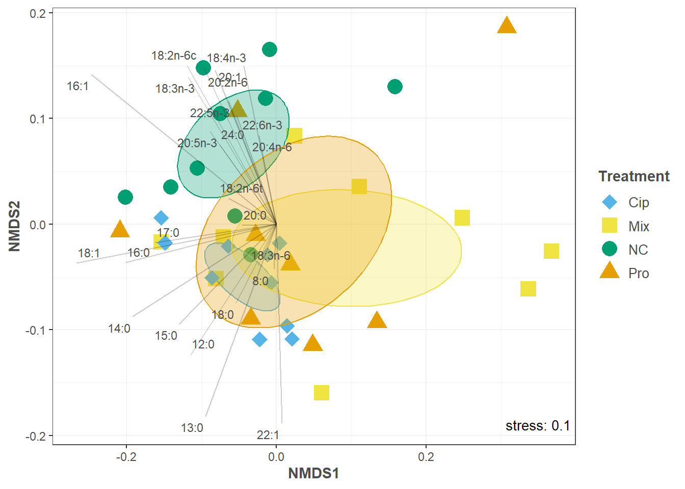
# position of FA names manually adjusted in vector graphic
# save the plot
ggsave(absol_Snail,
filename = "NMDS_snails_absolute.png",
path = 'C:\\Users\\Oster Test\\OneDrive\\Desktop\\Promotion\\Bioassays\\Schneckenversuch 2023\\Bottom_up_effects_biofilm_grazer\\output')Saving 7 x 5 in imageNew try NMDS:
Permanova FA Snails
Create distance matrix with fatty acids
FA_Snails_dist <- vegdist(FA_Snails_absolute_wide, method = 'bray')Separate explanatory variables from fatty acid information
expl_FA_Snails <-
pivot_wider(FA_Snails_absolute_filtered,
names_from = fa,
values_from = fa_conc)
# delete fa columns
expl_FA_Snails <- expl_FA_Snails[, c(1, 2)]
expl_FA_Snails$treatment <- as.factor(expl_FA_Snails$treatment)Make Permanova
perm_FA_Snails <- adonis2(FA_Snails_dist ~ treatment, data = expl_FA_Snails, permutations = 999)Make anova
rda_FA_Snails_1 <- rda(decostand(FA_Snails_dist, "hellinger")
~ treatment, data = expl_FA_Snails)
summary(rda_FA_Snails_1, display = NULL)
Call:
rda(formula = decostand(FA_Snails_dist, "hellinger") ~ treatment, data = expl_FA_Snails)
Partitioning of variance:
Inertia Proportion
Total 0.048483 1.0000
Constrained 0.008326 0.1717
Unconstrained 0.040157 0.8283
Eigenvalues, and their contribution to the variance
Importance of components:
RDA1 RDA2 RDA3 PC1 PC2 PC3
Eigenvalue 0.004556 0.003186 0.0005838 0.01412 0.007563 0.003065
Proportion Explained 0.093979 0.065717 0.0120407 0.29126 0.155997 0.063226
Cumulative Proportion 0.093979 0.159697 0.1717372 0.46300 0.618994 0.682220
PC4 PC5 PC6 PC7 PC8 PC9
Eigenvalue 0.001794 0.001577 0.001312 0.001107 0.001011 0.0008352
Proportion Explained 0.036998 0.032526 0.027070 0.022824 0.020850 0.0172272
Cumulative Proportion 0.719218 0.751745 0.778814 0.801638 0.822488 0.8397148
PC10 PC11 PC12 PC13 PC14 PC15
Eigenvalue 0.0007571 0.0006361 0.0005953 0.0005546 0.000513 0.000459
Proportion Explained 0.0156154 0.0131207 0.0122793 0.0114395 0.010582 0.009467
Cumulative Proportion 0.8553302 0.8684509 0.8807302 0.8921697 0.902751 0.912218
PC16 PC17 PC18 PC19 PC20
Eigenvalue 0.0004206 0.0003674 0.0003577 0.0003417 0.0003097
Proportion Explained 0.0086745 0.0075770 0.0073771 0.0070476 0.0063873
Cumulative Proportion 0.9208928 0.9284697 0.9358468 0.9428944 0.9492818
PC21 PC22 PC23 PC24 PC25
Eigenvalue 0.0002784 0.0002731 0.0002593 0.0002422 0.0002268
Proportion Explained 0.0057414 0.0056320 0.0053478 0.0049949 0.0046772
Cumulative Proportion 0.9550232 0.9606552 0.9660030 0.9709979 0.9756751
PC26 PC27 PC28 PC29 PC30
Eigenvalue 0.0002145 0.0001955 0.0001863 0.0001714 0.0001486
Proportion Explained 0.0044248 0.0040331 0.0038424 0.0035352 0.0030657
Cumulative Proportion 0.9800999 0.9841330 0.9879754 0.9915105 0.9945762
PC31 PC32 PC33
Eigenvalue 0.0001377 9.957e-05 2.57e-05
Proportion Explained 0.0028401 2.054e-03 5.30e-04
Cumulative Proportion 0.9974163 9.995e-01 1.00e+00
Accumulated constrained eigenvalues
Importance of components:
RDA1 RDA2 RDA3
Eigenvalue 0.004556 0.003186 0.0005838
Proportion Explained 0.547228 0.382661 0.0701111
Cumulative Proportion 0.547228 0.929889 1.0000000
Scaling 2 for species and site scores
* Species are scaled proportional to eigenvalues
* Sites are unscaled: weighted dispersion equal on all dimensions
* General scaling constant of scores: anova_result <- anova(rda_FA_Snails_1, by = "margin")Explanatory variable “treatment” significant, now perform pairwise comparisons
# @ VS: hier komme ich nicht weiter, ich hab multiconstrained und normale post-hoc tests probiert.. wie würdest du hier weitermachen?7 Fatty acid composition biofilm
# insert data
FA_Biofilm_absolute <-
read.table(file.path(prj, "data\\FA_Biofilm_absolute.txt"),
header = TRUE, sep = "\t")
View(FA_Biofilm_absolute)
# remove NAs, measurement < LOQ
FA_Biofilm_absolute <- na.omit(FA_Biofilm_absolute)Following fatty acids were not considered for biofilm analysis due to too less values: C11:0, C14:1, C15:1, C21:0, C22:1 and C24:1.
Therefore, delete rows with respective fatty acids:
FA_Biofilm_absolute <- FA_Biofilm_absolute %>%
filter(!fa %in% c("C11:0", "C14:1", "C15:1", "C21:0", "C22:1", "C24:1"))Histogram FA Biofilm
hist(FA_Biofilm_absolute $ fa_conc) 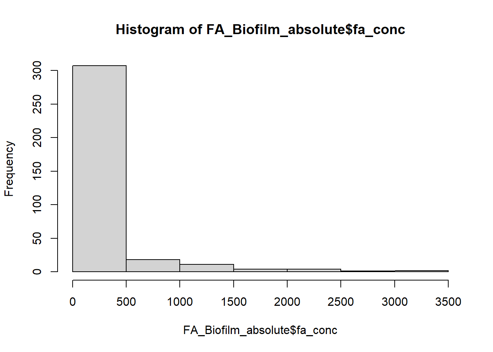
skewness(FA_Biofilm_absolute $ fa_conc, na.rm = TRUE) [1] 3.667514shapiro.test(FA_Biofilm_absolute $ fa_conc)
Shapiro-Wilk normality test
data: FA_Biofilm_absolute$fa_conc
W = 0.45281, p-value < 2.2e-16Fatty acid concentration not normal distributed and right skewed.
Model FA Biofilm
# log10 transformation; adding 0.001
FA_Biofilm_absolute <- FA_Biofilm_absolute %>%
mutate(log_fa_conc = log10(fa_conc + 0.001))
# response variable: log_fa_conc
# fixed effects: treatment + fa + + week + treatment:fa + week:fa + treatment:week
# random effect with constant intercept: (1|replicate); first change to factor
FA_Biofilm_absolute $ replicate <- as.factor(FA_Biofilm_absolute $ replicate)
FA_Biofilm_absolute $ week <- as.factor(FA_Biofilm_absolute $ week)
FA_Biofilm_lmer <- lmer(log_fa_conc ~ treatment + fa + + week + week:fa + treatment:week + treatment:fa + (1|replicate), data = FA_Biofilm_absolute)
# @ VS: ist das richtig so? alle 3 explanatory variables und jeweils alle interaktionen zu testen?plot(FA_Biofilm_lmer) 
# @ VS: das sieht nicht wirklich gleichmäßig verteilt aus, oder? Was würdest du jetzt machen?
qreference(residuals(FA_Biofilm_lmer)) 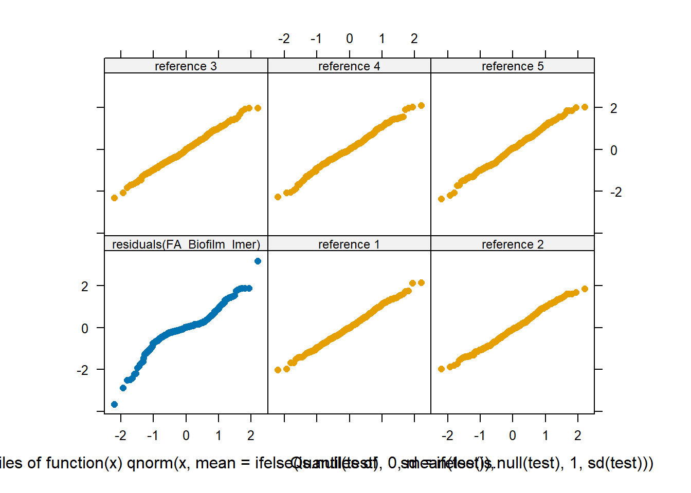
# @ VS: das sieht schon wieder okay aus
anova(FA_Biofilm_lmer)Analysis of Variance Table
npar Sum Sq Mean Sq F value
treatment 3 1.38 0.4608 0.4069
fa 28 748.76 26.7414 23.6155
week 2 11.12 5.5605 4.9105
fa:week 56 80.32 1.4343 1.2666
treatment:week 6 1.81 0.3019 0.2666
treatment:fa 84 120.10 1.4298 1.2627drop1(FA_Biofilm_lmer, test = 'Chisq')Warning in checkConv(attr(opt, "derivs"), opt$par, ctrl = control$checkConv, :
unable to evaluate scaled gradientWarning in checkConv(attr(opt, "derivs"), opt$par, ctrl = control$checkConv, :
Hessian is numerically singular: parameters are not uniquely determinedboundary (singular) fit: see help('isSingular')Single term deletions
Model:
log_fa_conc ~ treatment + fa + +week + week:fa + treatment:week +
treatment:fa + (1 | replicate)
npar AIC LRT Pr(Chi)
<none> 1138.1
fa:week 56 1150.3 124.245 4.368e-07 ***
treatment:week 6 1132.8 6.642 0.3552
treatment:fa 84 1140.7 170.625 7.456e-08 ***
---
Signif. codes: 0 '***' 0.001 '**' 0.01 '*' 0.05 '.' 0.1 ' ' 1FA_Biofilm_inter <- lsmeans(FA_Biofilm_lmer, ~ treatment | fa)
FA_Biofilm_interWarning in .qf.non0(object@V, x): Negative variance estimate obtained!fa = C08:0:
treatment lsmean SE df lower.CL upper.CL
Cip -1.5005 NaN 0 NaN NaN
Mix -1.3292 0.618 0 -Inf Inf
NC -0.8090 0.620 0 -Inf Inf
Pro -1.6315 0.560 0 -Inf Inf
fa = C10:0:
treatment lsmean SE df lower.CL upper.CL
Cip -1.8951 0.626 0 -Inf Inf
Mix -3.0000 0.621 0 -Inf Inf
NC 0.0901 0.619 0 -Inf Inf
Pro 0.2340 0.622 0 -Inf Inf
fa = C12:0:
treatment lsmean SE df lower.CL upper.CL
Cip 0.5147 0.625 0 -Inf Inf
Mix 0.7842 0.620 0 -Inf Inf
NC 1.0101 0.620 0 -Inf Inf
Pro 0.9987 0.622 0 -Inf Inf
fa = C13:0:
treatment lsmean SE df lower.CL upper.CL
Cip 1.6760 0.624 0 -Inf Inf
Mix 1.6949 0.620 0 -Inf Inf
NC 1.7314 0.620 0 -Inf Inf
Pro 1.7066 0.623 0 -Inf Inf
fa = C14:0:
treatment lsmean SE df lower.CL upper.CL
Cip 2.0538 0.625 0 -Inf Inf
Mix 2.0237 0.621 0 -Inf Inf
NC 2.1077 0.619 0 -Inf Inf
Pro 2.1386 0.622 0 -Inf Inf
fa = C15:0:
treatment lsmean SE df lower.CL upper.CL
Cip 0.7687 0.624 0 -Inf Inf
Mix 0.7458 0.620 0 -Inf Inf
NC 0.8326 0.620 0 -Inf Inf
Pro 0.8932 0.622 0 -Inf Inf
fa = C16:0:
treatment lsmean SE df lower.CL upper.CL
Cip 3.1911 0.624 0 -Inf Inf
Mix 3.1932 0.620 0 -Inf Inf
NC 3.3006 0.619 0 -Inf Inf
Pro 3.2708 0.622 0 -Inf Inf
fa = C16:1:
treatment lsmean SE df lower.CL upper.CL
Cip 2.4950 0.622 0 -Inf Inf
Mix 2.3314 0.620 0 -Inf Inf
NC 2.2714 0.620 0 -Inf Inf
Pro 2.5443 0.622 0 -Inf Inf
fa = C17:0:
treatment lsmean SE df lower.CL upper.CL
Cip 0.7855 0.624 0 -Inf Inf
Mix 0.8395 0.620 0 -Inf Inf
NC 0.9254 0.620 0 -Inf Inf
Pro 0.8910 0.622 0 -Inf Inf
fa = C17:1:
treatment lsmean SE df lower.CL upper.CL
Cip 0.9170 0.624 0 -Inf Inf
Mix 0.9519 0.620 0 -Inf Inf
NC 0.9503 0.619 0 -Inf Inf
Pro -0.5092 0.623 0 -Inf Inf
fa = C18:0:
treatment lsmean SE df lower.CL upper.CL
Cip 1.9550 0.626 0 -Inf Inf
Mix 1.9463 0.621 0 -Inf Inf
NC 0.4244 0.620 0 -Inf Inf
Pro 1.7012 0.622 0 -Inf Inf
fa = C18:1:
treatment lsmean SE df lower.CL upper.CL
Cip 2.8578 0.623 0 -Inf Inf
Mix 0.9203 0.620 0 -Inf Inf
NC 0.9348 0.619 0 -Inf Inf
Pro 0.9258 0.623 0 -Inf Inf
fa = C18:2(n-6c):
treatment lsmean SE df lower.CL upper.CL
Cip 2.8547 0.622 0 -Inf Inf
Mix 2.8068 0.621 0 -Inf Inf
NC 2.9149 0.620 0 -Inf Inf
Pro 0.8185 0.622 0 -Inf Inf
fa = C18:2(n-6t):
treatment lsmean SE df lower.CL upper.CL
Cip -3.0000 0.622 0 -Inf Inf
Mix -1.7373 0.620 0 -Inf Inf
NC -1.8390 0.619 0 -Inf Inf
Pro -2.4191 0.623 0 -Inf Inf
fa = C18:3(n-3):
treatment lsmean SE df lower.CL upper.CL
Cip 3.0267 0.624 0 -Inf Inf
Mix 3.0304 0.620 0 -Inf Inf
NC 3.1215 0.620 0 -Inf Inf
Pro 3.0533 0.623 0 -Inf Inf
fa = C18:3(n-6):
treatment lsmean SE df lower.CL upper.CL
Cip 0.9802 0.623 0 -Inf Inf
Mix -1.3578 0.621 0 -Inf Inf
NC -1.4274 0.620 0 -Inf Inf
Pro 1.3514 0.622 0 -Inf Inf
fa = C18:4(n-3):
treatment lsmean SE df lower.CL upper.CL
Cip 1.9547 0.624 0 -Inf Inf
Mix 1.9515 0.620 0 -Inf Inf
NC 2.0060 0.620 0 -Inf Inf
Pro 1.9587 0.623 0 -Inf Inf
fa = C20:0:
treatment lsmean SE df lower.CL upper.CL
Cip 1.0508 0.624 0 -Inf Inf
Mix 1.0169 0.620 0 -Inf Inf
NC 1.0914 0.619 0 -Inf Inf
Pro 1.0649 0.623 0 -Inf Inf
fa = C20:1:
treatment lsmean SE df lower.CL upper.CL
Cip -0.0529 0.623 0 -Inf Inf
Mix 1.0074 0.621 0 -Inf Inf
NC 1.2171 0.620 0 -Inf Inf
Pro -0.2657 0.622 0 -Inf Inf
fa = C20:2(n-6):
treatment lsmean SE df lower.CL upper.CL
Cip 0.7151 0.623 0 -Inf Inf
Mix 0.6975 0.620 0 -Inf Inf
NC 0.9103 0.620 0 -Inf Inf
Pro 0.8110 0.624 0 -Inf Inf
fa = C20:3(n-3):
treatment lsmean SE df lower.CL upper.CL
Cip 0.8863 0.800 0 -Inf Inf
Mix -1.9021 0.620 0 -Inf Inf
NC -3.0000 0.619 0 -Inf Inf
Pro 0.4335 0.623 0 -Inf Inf
fa = C20:3(n-6):
treatment lsmean SE df lower.CL upper.CL
Cip -0.6537 0.624 0 -Inf Inf
Mix -0.7403 0.619 0 -Inf Inf
NC -1.8838 0.620 0 -Inf Inf
Pro 0.2600 0.623 0 -Inf Inf
fa = C20:4(n-6):
treatment lsmean SE df lower.CL upper.CL
Cip 1.5395 0.622 0 -Inf Inf
Mix 1.3500 0.619 0 -Inf Inf
NC 1.6448 0.619 0 -Inf Inf
Pro 1.5760 0.623 0 -Inf Inf
fa = C20:5(n-3):
treatment lsmean SE df lower.CL upper.CL
Cip 1.9490 0.623 0 -Inf Inf
Mix 1.7715 0.620 0 -Inf Inf
NC 2.0063 0.619 0 -Inf Inf
Pro 2.0057 0.623 0 -Inf Inf
fa = C22:0:
treatment lsmean SE df lower.CL upper.CL
Cip 0.2520 0.623 0 -Inf Inf
Mix -0.5172 0.620 0 -Inf Inf
NC -0.6276 0.620 0 -Inf Inf
Pro 0.4482 0.623 0 -Inf Inf
fa = C22:2:
treatment lsmean SE df lower.CL upper.CL
Cip -2.3819 0.624 0 -Inf Inf
Mix -2.5671 0.620 0 -Inf Inf
NC -2.7064 0.619 0 -Inf Inf
Pro -2.3063 0.623 0 -Inf Inf
fa = C22:5(n-3):
treatment lsmean SE df lower.CL upper.CL
Cip -1.3511 0.624 0 -Inf Inf
Mix -0.6347 0.618 0 -Inf Inf
NC -1.2786 0.620 0 -Inf Inf
Pro -1.4852 0.622 0 -Inf Inf
fa = C22:6(n-3):
treatment lsmean SE df lower.CL upper.CL
Cip 0.7859 0.624 0 -Inf Inf
Mix 0.6803 0.619 0 -Inf Inf
NC 0.7607 0.619 0 -Inf Inf
Pro 0.7021 0.622 0 -Inf Inf
fa = C24:0:
treatment lsmean SE df lower.CL upper.CL
Cip 0.1422 0.624 0 -Inf Inf
Mix 1.5205 0.618 0 -Inf Inf
NC 1.5164 0.619 0 -Inf Inf
Pro 1.5652 0.622 0 -Inf Inf
Results are averaged over the levels of: week
Degrees-of-freedom method: kenward-roger
Confidence level used: 0.95 FA_Biofilm_inter_dunn1 <- contrast(FA_Biofilm_inter, 'pairwise')
FA_Biofilm_inter_dunn_sum1 <- summary(FA_Biofilm_inter_dunn1, infer = TRUE, adjust = 'mvt')
FA_Biofilm_inter_dunn_sum1fa = C08:0:
contrast estimate SE df lower.CL upper.CL t.ratio p.value
Cip - Mix -0.171242 0.421 0 NA NA -0.407 NA
Cip - NC -0.691483 0.551 0 NA NA -1.256 NA
Cip - Pro 0.131038 0.214 0 NA NA 0.611 NA
Mix - NC -0.520241 0.872 0 NA NA -0.596 NA
Mix - Pro 0.302280 0.854 0 NA NA 0.354 NA
NC - Pro 0.822520 0.865 0 NA NA 0.950 NA
fa = C10:0:
contrast estimate SE df lower.CL upper.CL t.ratio p.value
Cip - Mix 1.104858 0.885 0 NA NA 1.248 1.0000
Cip - NC -1.985245 0.882 0 NA NA -2.251 1.0000
Cip - Pro -2.129170 0.885 0 NA NA -2.405 1.0000
Mix - NC -3.090103 0.876 0 NA NA -3.527 1.0000
Mix - Pro -3.234028 0.879 0 NA NA -3.679 1.0000
NC - Pro -0.143925 0.878 0 NA NA -0.164 1.0000
fa = C12:0:
contrast estimate SE df lower.CL upper.CL t.ratio p.value
Cip - Mix -0.269476 0.883 0 NA NA -0.305 1.0000
Cip - NC -0.495318 0.883 0 NA NA -0.561 1.0000
Cip - Pro -0.483992 0.885 0 NA NA -0.547 1.0000
Mix - NC -0.225842 0.876 0 NA NA -0.258 1.0000
Mix - Pro -0.214516 0.879 0 NA NA -0.244 1.0000
NC - Pro 0.011326 0.878 0 NA NA 0.013 1.0000
fa = C13:0:
contrast estimate SE df lower.CL upper.CL t.ratio p.value
Cip - Mix -0.018913 0.884 0 NA NA -0.021 1.0000
Cip - NC -0.055410 0.882 0 NA NA -0.063 1.0000
Cip - Pro -0.030566 0.886 0 NA NA -0.035 1.0000
Mix - NC -0.036498 0.876 0 NA NA -0.042 1.0000
Mix - Pro -0.011653 0.879 0 NA NA -0.013 1.0000
NC - Pro 0.024845 0.879 0 NA NA 0.028 1.0000
fa = C14:0:
contrast estimate SE df lower.CL upper.CL t.ratio p.value
Cip - Mix 0.030089 0.885 0 NA NA 0.034 1.0000
Cip - NC -0.053841 0.882 0 NA NA -0.061 1.0000
Cip - Pro -0.084791 0.885 0 NA NA -0.096 1.0000
Mix - NC -0.083930 0.876 0 NA NA -0.096 1.0000
Mix - Pro -0.114880 0.880 0 NA NA -0.131 1.0000
NC - Pro -0.030950 0.878 0 NA NA -0.035 1.0000
fa = C15:0:
contrast estimate SE df lower.CL upper.CL t.ratio p.value
Cip - Mix 0.022917 0.883 0 NA NA 0.026 1.0000
Cip - NC -0.063856 0.881 0 NA NA -0.073 1.0000
Cip - Pro -0.124477 0.886 0 NA NA -0.140 1.0000
Mix - NC -0.086774 0.876 0 NA NA -0.099 1.0000
Mix - Pro -0.147394 0.879 0 NA NA -0.168 1.0000
NC - Pro -0.060621 0.879 0 NA NA -0.069 1.0000
fa = C16:0:
contrast estimate SE df lower.CL upper.CL t.ratio p.value
Cip - Mix -0.002166 0.883 0 NA NA -0.002 1.0000
Cip - NC -0.109567 0.879 0 NA NA -0.125 1.0000
Cip - Pro -0.079725 0.885 0 NA NA -0.090 1.0000
Mix - NC -0.107401 0.876 0 NA NA -0.123 1.0000
Mix - Pro -0.077559 0.879 0 NA NA -0.088 1.0000
NC - Pro 0.029842 0.878 0 NA NA 0.034 1.0000
fa = C16:1:
contrast estimate SE df lower.CL upper.CL t.ratio p.value
Cip - Mix 0.163581 0.884 0 NA NA 0.185 1.0000
Cip - NC 0.223593 0.882 0 NA NA 0.253 1.0000
Cip - Pro -0.049324 0.884 0 NA NA -0.056 1.0000
Mix - NC 0.060012 0.876 0 NA NA 0.069 1.0000
Mix - Pro -0.212905 0.879 0 NA NA -0.242 1.0000
NC - Pro -0.272918 0.879 0 NA NA -0.311 1.0000
fa = C17:0:
contrast estimate SE df lower.CL upper.CL t.ratio p.value
Cip - Mix -0.053990 0.884 0 NA NA -0.061 1.0000
Cip - NC -0.139882 0.882 0 NA NA -0.159 1.0000
Cip - Pro -0.105550 0.884 0 NA NA -0.119 1.0000
Mix - NC -0.085892 0.876 0 NA NA -0.098 1.0000
Mix - Pro -0.051559 0.879 0 NA NA -0.059 1.0000
NC - Pro 0.034333 0.878 0 NA NA 0.039 1.0000
fa = C17:1:
contrast estimate SE df lower.CL upper.CL t.ratio p.value
Cip - Mix -0.034871 0.883 0 NA NA -0.039 1.0000
Cip - NC -0.033235 0.880 0 NA NA -0.038 1.0000
Cip - Pro 1.426189 0.887 0 NA NA 1.609 1.0000
Mix - NC 0.001636 0.876 0 NA NA 0.002 1.0000
Mix - Pro 1.461060 0.879 0 NA NA 1.662 1.0000
NC - Pro 1.459424 0.879 0 NA NA 1.660 1.0000
fa = C18:0:
contrast estimate SE df lower.CL upper.CL t.ratio p.value
Cip - Mix 0.008694 0.885 0 NA NA 0.010 1.0000
Cip - NC 1.530551 0.882 0 NA NA 1.735 1.0000
Cip - Pro 0.253714 0.885 0 NA NA 0.287 1.0000
Mix - NC 1.521856 0.876 0 NA NA 1.737 1.0000
Mix - Pro 0.245020 0.880 0 NA NA 0.279 1.0000
NC - Pro -1.276837 0.879 0 NA NA -1.452 1.0000
fa = C18:1:
contrast estimate SE df lower.CL upper.CL t.ratio p.value
Cip - Mix 1.937539 0.882 0 NA NA 2.197 1.0000
Cip - NC 1.923060 0.879 0 NA NA 2.187 1.0000
Cip - Pro 1.932004 0.885 0 NA NA 2.182 1.0000
Mix - NC -0.014480 0.875 0 NA NA -0.017 1.0000
Mix - Pro -0.005535 0.879 0 NA NA -0.006 1.0000
NC - Pro 0.008945 0.878 0 NA NA 0.010 1.0000
fa = C18:2(n-6c):
contrast estimate SE df lower.CL upper.CL t.ratio p.value
Cip - Mix 0.047942 0.883 0 NA NA 0.054 1.0000
Cip - NC -0.060217 0.880 0 NA NA -0.068 1.0000
Cip - Pro 2.036272 0.885 0 NA NA 2.302 1.0000
Mix - NC -0.108159 0.876 0 NA NA -0.123 1.0000
Mix - Pro 1.988330 0.879 0 NA NA 2.262 1.0000
NC - Pro 2.096489 0.879 0 NA NA 2.386 1.0000
fa = C18:2(n-6t):
contrast estimate SE df lower.CL upper.CL t.ratio p.value
Cip - Mix -1.262710 0.884 0 NA NA -1.429 1.0000
Cip - NC -1.160960 0.882 0 NA NA -1.316 1.0000
Cip - Pro -0.580919 0.884 0 NA NA -0.657 1.0000
Mix - NC 0.101750 0.876 0 NA NA 0.116 1.0000
Mix - Pro 0.681791 0.879 0 NA NA 0.776 1.0000
NC - Pro 0.580041 0.879 0 NA NA 0.660 1.0000
fa = C18:3(n-3):
contrast estimate SE df lower.CL upper.CL t.ratio p.value
Cip - Mix -0.003730 0.885 0 NA NA -0.004 1.0000
Cip - NC -0.094814 0.882 0 NA NA -0.107 1.0000
Cip - Pro -0.026566 0.884 0 NA NA -0.030 1.0000
Mix - NC -0.091084 0.876 0 NA NA -0.104 1.0000
Mix - Pro -0.022836 0.879 0 NA NA -0.026 1.0000
NC - Pro 0.068248 0.879 0 NA NA 0.078 1.0000
fa = C18:3(n-6):
contrast estimate SE df lower.CL upper.CL t.ratio p.value
Cip - Mix 2.338048 0.886 0 NA NA 2.640 1.0000
Cip - NC 2.407605 0.882 0 NA NA 2.729 1.0000
Cip - Pro -0.371200 0.884 0 NA NA -0.420 1.0000
Mix - NC 0.069557 0.876 0 NA NA 0.079 1.0000
Mix - Pro -2.709248 0.879 0 NA NA -3.082 1.0000
NC - Pro -2.778805 0.879 0 NA NA -3.163 1.0000
fa = C18:4(n-3):
contrast estimate SE df lower.CL upper.CL t.ratio p.value
Cip - Mix 0.003219 0.885 0 NA NA 0.004 1.0000
Cip - NC -0.051240 0.882 0 NA NA -0.058 1.0000
Cip - Pro -0.003986 0.884 0 NA NA -0.005 1.0000
Mix - NC -0.054459 0.876 0 NA NA -0.062 1.0000
Mix - Pro -0.007205 0.879 0 NA NA -0.008 1.0000
NC - Pro 0.047254 0.879 0 NA NA 0.054 1.0000
fa = C20:0:
contrast estimate SE df lower.CL upper.CL t.ratio p.value
Cip - Mix 0.033831 0.884 0 NA NA 0.038 1.0000
Cip - NC -0.040665 0.880 0 NA NA -0.046 1.0000
Cip - Pro -0.014106 0.886 0 NA NA -0.016 1.0000
Mix - NC -0.074496 0.876 0 NA NA -0.085 1.0000
Mix - Pro -0.047937 0.880 0 NA NA -0.054 1.0000
NC - Pro 0.026559 0.879 0 NA NA 0.030 1.0000
fa = C20:1:
contrast estimate SE df lower.CL upper.CL t.ratio p.value
Cip - Mix -1.060350 0.885 0 NA NA -1.198 1.0000
Cip - NC -1.270038 0.882 0 NA NA -1.440 1.0000
Cip - Pro 0.212799 0.885 0 NA NA 0.241 1.0000
Mix - NC -0.209688 0.876 0 NA NA -0.239 1.0000
Mix - Pro 1.273150 0.879 0 NA NA 1.448 1.0000
NC - Pro 1.482837 0.879 0 NA NA 1.687 1.0000
fa = C20:2(n-6):
contrast estimate SE df lower.CL upper.CL t.ratio p.value
Cip - Mix 0.017650 0.884 0 NA NA 0.020 1.0000
Cip - NC -0.195222 0.882 0 NA NA -0.221 1.0000
Cip - Pro -0.095907 0.886 0 NA NA -0.108 1.0000
Mix - NC -0.212872 0.876 0 NA NA -0.243 1.0000
Mix - Pro -0.113558 0.880 0 NA NA -0.129 1.0000
NC - Pro 0.099314 0.880 0 NA NA 0.113 1.0000
fa = C20:3(n-3):
contrast estimate SE df lower.CL upper.CL t.ratio p.value
Cip - Mix 2.788394 1.019 0 NA NA 2.736 1.0000
Cip - NC 3.886276 1.015 0 NA NA 3.829 1.0000
Cip - Pro 0.452784 1.021 0 NA NA 0.443 1.0000
Mix - NC 1.097882 0.875 0 NA NA 1.254 1.0000
Mix - Pro -2.335610 0.880 0 NA NA -2.655 1.0000
NC - Pro -3.433491 0.879 0 NA NA -3.905 1.0000
fa = C20:3(n-6):
contrast estimate SE df lower.CL upper.CL t.ratio p.value
Cip - Mix 0.086633 0.882 0 NA NA 0.098 1.0000
Cip - NC 1.230123 0.882 0 NA NA 1.395 1.0000
Cip - Pro -0.913707 0.885 0 NA NA -1.032 1.0000
Mix - NC 1.143490 0.875 0 NA NA 1.307 1.0000
Mix - Pro -1.000340 0.879 0 NA NA -1.138 1.0000
NC - Pro -2.143829 0.879 0 NA NA -2.439 1.0000
fa = C20:4(n-6):
contrast estimate SE df lower.CL upper.CL t.ratio p.value
Cip - Mix 0.189498 0.883 0 NA NA 0.215 1.0000
Cip - NC -0.105275 0.882 0 NA NA -0.119 1.0000
Cip - Pro -0.036484 0.886 0 NA NA -0.041 1.0000
Mix - NC -0.294773 0.875 0 NA NA -0.337 1.0000
Mix - Pro -0.225982 0.879 0 NA NA -0.257 1.0000
NC - Pro 0.068791 0.879 0 NA NA 0.078 1.0000
fa = C20:5(n-3):
contrast estimate SE df lower.CL upper.CL t.ratio p.value
Cip - Mix 0.177485 0.884 0 NA NA 0.201 1.0000
Cip - NC -0.057382 0.880 0 NA NA -0.065 1.0000
Cip - Pro -0.056746 0.886 0 NA NA -0.064 1.0000
Mix - NC -0.234867 0.876 0 NA NA -0.268 1.0000
Mix - Pro -0.234231 0.880 0 NA NA -0.266 1.0000
NC - Pro 0.000637 0.879 0 NA NA 0.001 1.0000
fa = C22:0:
contrast estimate SE df lower.CL upper.CL t.ratio p.value
Cip - Mix 0.769272 0.884 0 NA NA 0.870 1.0000
Cip - NC 0.879592 0.881 0 NA NA 0.998 1.0000
Cip - Pro -0.196127 0.886 0 NA NA -0.221 1.0000
Mix - NC 0.110319 0.875 0 NA NA 0.126 1.0000
Mix - Pro -0.965400 0.880 0 NA NA -1.097 1.0000
NC - Pro -1.075719 0.880 0 NA NA -1.223 1.0000
fa = C22:2:
contrast estimate SE df lower.CL upper.CL t.ratio p.value
Cip - Mix 0.185278 0.883 0 NA NA 0.210 1.0000
Cip - NC 0.324501 0.880 0 NA NA 0.369 1.0000
Cip - Pro -0.075532 0.886 0 NA NA -0.085 1.0000
Mix - NC 0.139223 0.875 0 NA NA 0.159 1.0000
Mix - Pro -0.260811 0.879 0 NA NA -0.297 1.0000
NC - Pro -0.400033 0.879 0 NA NA -0.455 1.0000
fa = C22:5(n-3):
contrast estimate SE df lower.CL upper.CL t.ratio p.value
Cip - Mix -0.716402 0.882 0 NA NA -0.812 1.0000
Cip - NC -0.072477 0.882 0 NA NA -0.082 1.0000
Cip - Pro 0.134115 0.885 0 NA NA 0.152 1.0000
Mix - NC 0.643925 0.875 0 NA NA 0.736 1.0000
Mix - Pro 0.850517 0.878 0 NA NA 0.969 1.0000
NC - Pro 0.206592 0.879 0 NA NA 0.235 1.0000
fa = C22:6(n-3):
contrast estimate SE df lower.CL upper.CL t.ratio p.value
Cip - Mix 0.105561 0.883 0 NA NA 0.120 1.0000
Cip - NC 0.025200 0.882 0 NA NA 0.029 1.0000
Cip - Pro 0.083829 0.885 0 NA NA 0.095 1.0000
Mix - NC -0.080361 0.875 0 NA NA -0.092 1.0000
Mix - Pro -0.021733 0.879 0 NA NA -0.025 1.0000
NC - Pro 0.058628 0.879 0 NA NA 0.067 1.0000
fa = C24:0:
contrast estimate SE df lower.CL upper.CL t.ratio p.value
Cip - Mix -1.378357 0.882 0 NA NA -1.563 1.0000
Cip - NC -1.374260 0.881 0 NA NA -1.560 1.0000
Cip - Pro -1.423049 0.885 0 NA NA -1.607 1.0000
Mix - NC 0.004098 0.875 0 NA NA 0.005 1.0000
Mix - Pro -0.044692 0.878 0 NA NA -0.051 1.0000
NC - Pro -0.048789 0.878 0 NA NA -0.056 1.0000
Results are averaged over the levels of: week
Degrees-of-freedom method: kenward-roger
Confidence level used: 0.95
Conf-level adjustment: mvt method for 6 estimates
P value adjustment: mvt method for 6 tests # @ VS hier kommen bei mir "Inf" Werte raus, irgendwie klappt das so nicht, ich habe nicht herausgefunden, was ich ändern mussTotal SAFA, MUFA & PUFA content
1) Total SAFA content
# total SAFA, MUFA, PUFA content; ba = "biofilm absolute"
# total SAFA content
# filter saturated fatty acids in new table
SAFA_ba <- FA_Biofilm_absolute %>%
filter(fa %in% c("C08:0", "C10:0", "C12:0", "C13:0", "C14:0", "C15:0", "C16:0", "C17:0", "C18:0", "C20:0", "C22:0", "C24:0"))
# calculate the total SAFA content per replicate
total_SAFA_per_replicate <- SAFA_ba %>%
group_by(replicate, treatment) %>%
summarize(sum_SAFA = sum(fa_conc))`summarise()` has grouped output by 'replicate'. You can override using the
`.groups` argument.print(total_SAFA_per_replicate)# A tibble: 12 × 3
# Groups: replicate [12]
replicate treatment sum_SAFA
<fct> <chr> <dbl>
1 B_1 NC 1708.
2 B_10 Cip 2745.
3 B_11 Pro 3652.
4 B_12 Mix 3646.
5 B_2 Cip 1350.
6 B_3 Pro 2213.
7 B_4 Mix 1664.
8 B_5 NC 2552.
9 B_6 Cip 1812.
10 B_7 Pro 1558.
11 B_8 Mix 1128.
12 B_9 NC 3044.# mean
mean_SAFA_ba <- total_SAFA_per_replicate %>%
group_by(treatment) %>%
summarize(mean_SAFA = mean(sum_SAFA, na.rm = TRUE))
print(mean_SAFA_ba)# A tibble: 4 × 2
treatment mean_SAFA
<chr> <dbl>
1 Cip 1969.
2 Mix 2146.
3 NC 2435.
4 Pro 2475.2) Total MUFA content
# filter mono-unsaturated fatty acids in new table
MUFA_ba <- FA_Biofilm_absolute %>%
filter(fa %in% c("C16:1", "C17:1", "C18:1", "C20:1"))
# total MUFA content per replicate
total_MUFA_per_replicate <- MUFA_ba %>%
group_by(replicate, treatment) %>%
summarize(sum_MUFA = sum(fa_conc))`summarise()` has grouped output by 'replicate'. You can override using the
`.groups` argument.print(total_MUFA_per_replicate)# A tibble: 12 × 3
# Groups: replicate [12]
replicate treatment sum_MUFA
<fct> <chr> <dbl>
1 B_1 NC 833.
2 B_10 Cip 1469.
3 B_11 Pro 1979.
4 B_12 Mix 1601.
5 B_2 Cip 702.
6 B_3 Pro 654.
7 B_4 Mix 168.
8 B_5 NC 464.
9 B_6 Cip 1158.
10 B_7 Pro 357.
11 B_8 Mix 675.
12 B_9 NC 1151.# mean
mean_MUFA_ba <- total_MUFA_per_replicate %>%
group_by(treatment) %>%
summarize(mean_MUFA = mean(sum_MUFA, na.rm = TRUE))
print(mean_MUFA_ba)# A tibble: 4 × 2
treatment mean_MUFA
<chr> <dbl>
1 Cip 1110.
2 Mix 815.
3 NC 816.
4 Pro 997.3) Total PUFA content
# filter poly-unsaturated fatty acids in new table
PUFA_ba <- FA_Biofilm_absolute %>%
filter(fa %in% c("C18:2(n-6c)", "C18:2(n-6t)", "C18:3(n-3)", "C18:3(n-6)", "C18:4(n-3)", "C20:2(n-6)", "C20:3(n-6)", "C20:3(n-3)", "C20:4(n-6)", "C20:5(n-3)", "C22:2", "C22:5(n-3)", "C22:6(n-3)"))
# calculate total PUFA content per replicate
total_PUFA_per_replicate <- PUFA_ba %>%
group_by(replicate, treatment) %>%
summarize(sum_PUFA = sum(fa_conc))`summarise()` has grouped output by 'replicate'. You can override using the
`.groups` argument.print(total_PUFA_per_replicate)# A tibble: 12 × 3
# Groups: replicate [12]
replicate treatment sum_PUFA
<fct> <chr> <dbl>
1 B_1 NC 1581.
2 B_10 Cip 3077.
3 B_11 Pro 2613.
4 B_12 Mix 3877.
5 B_2 Cip 1438.
6 B_3 Pro 1724.
7 B_4 Mix 1844.
8 B_5 NC 2693.
9 B_6 Cip 2043.
10 B_7 Pro 1454.
11 B_8 Mix 1031.
12 B_9 NC 3446.# mean
mean_PUFA_ba <- total_PUFA_per_replicate %>%
group_by(treatment) %>%
summarize(mean_PUFA = mean(sum_PUFA, na.rm = TRUE))
print(mean_PUFA_ba)# A tibble: 4 × 2
treatment mean_PUFA
<chr> <dbl>
1 Cip 2186.
2 Mix 2251.
3 NC 2573.
4 Pro 1930.4) Total FA content
# total FA
total_FA_biofilm <- bind_rows(total_SAFA_per_replicate, total_MUFA_per_replicate, total_PUFA_per_replicate)
total_FA_per_replicate <- total_FA_biofilm %>%
group_by(replicate, treatment) %>%
summarize(sum_FA = sum(sum_SAFA, sum_MUFA, sum_PUFA, na.rm = TRUE))`summarise()` has grouped output by 'replicate'. You can override using the
`.groups` argument.print(total_FA_per_replicate)# A tibble: 12 × 3
# Groups: replicate [12]
replicate treatment sum_FA
<fct> <chr> <dbl>
1 B_1 NC 4122.
2 B_10 Cip 7291.
3 B_11 Pro 8245.
4 B_12 Mix 9125.
5 B_2 Cip 3489.
6 B_3 Pro 4591.
7 B_4 Mix 3676.
8 B_5 NC 5708.
9 B_6 Cip 5013.
10 B_7 Pro 3369.
11 B_8 Mix 2833.
12 B_9 NC 7641.# mean
mean_total_FA_ba <- total_FA_per_replicate %>%
group_by(treatment) %>%
summarize(mean_FA = mean(sum_FA, na.rm = TRUE))
print(mean_total_FA_ba)# A tibble: 4 × 2
treatment mean_FA
<chr> <dbl>
1 Cip 5265.
2 Mix 5211.
3 NC 5824.
4 Pro 5402.NMDS FA Biofilm
Change table to wide format:
# change table to wide format
FA_Biofilm_absolute_filtered <- FA_Biofilm_absolute %>%
dplyr::select(-log_fa_conc)
FA_Biofilm_absolute_wide <-
pivot_wider(FA_Biofilm_absolute_filtered,
names_from = fa,
values_from = fa_conc)
# square root transformation, to reduce discriminatory power of dominant fa groups
FA_Biofilm_absolute_wide <- sqrt(FA_Biofilm_absolute_wide[, -c(1, 2, 3)])
View(FA_Biofilm_absolute_wide)
#set NA to 0
FA_Biofilm_absolute_wide[is.na(FA_Biofilm_absolute_wide)] <- 0
View(FA_Biofilm_absolute_wide)Perform metaMDS:
NMDS_Biofilm_absolute <-
metaMDS(
FA_Biofilm_absolute_wide,
autotransform = FALSE,
k = 2 ,
distance = "bray",
na.rm = TRUE
)Run 0 stress 0.08647443
Run 1 stress 0.1462317
Run 2 stress 0.2810691
Run 3 stress 0.08806767
Run 4 stress 0.0880676
Run 5 stress 0.08806747
Run 6 stress 0.2477154
Run 7 stress 0.08806752
Run 8 stress 0.08806767
Run 9 stress 0.08647439
... New best solution
... Procrustes: rmse 7.272638e-05 max resid 0.0001923618
... Similar to previous best
Run 10 stress 0.1365449
Run 11 stress 0.08647438
... New best solution
... Procrustes: rmse 6.092098e-05 max resid 0.0001652831
... Similar to previous best
Run 12 stress 0.1556127
Run 13 stress 0.1490808
Run 14 stress 0.09379637
Run 15 stress 0.08806767
Run 16 stress 0.08806762
Run 17 stress 0.08647438
... New best solution
... Procrustes: rmse 4.071406e-05 max resid 0.0001094107
... Similar to previous best
Run 18 stress 0.09379658
Run 19 stress 0.1246448
Run 20 stress 0.08806752
*** Best solution repeated 1 timesNMDS_Biofilm_absolute$stress[1] 0.08647438Create NMDS:
#add treatment column
colnames(FA_Biofilm_absolute_wide) <-
c(
"C08:0",
"C10:0",
"C12:0",
"C13:0",
"C14:0",
"C15:0",
"C16:0",
"C16:1",
"C17:0",
"C17:1",
"C18:0",
"C18:1",
"C18:2(n-6t)",
"C18:2(n-6c)",
"C18:3(n-6)",
"C18:3(n-3)",
"C18:4(n-3)",
"C20:0",
"C20:1",
"C20:2(n-6)",
"C20:3(n-6)",
"C20:4(n-6)",
"C20:5(n-3)",
"C22:0",
"C22:5(n-3)",
"C22:6(n-3)",
"C24:0"
)
# separation in SAFA; MUFA & PUFA to build vectors in NMDS
# "ba" = biofilm absolute
FA_variables.SAFAs_ba <-
envfit(
NMDS_Biofilm_absolute,
subset(
FA_Biofilm_absolute_wide,
select = c(
"C08:0",
"C10:0",
"C12:0",
"C13:0",
"C14:0",
"C15:0",
"C16:0",
"C17:0",
"C18:0",
"C20:0",
"C22:0",
"C24:0"
)
)
,
permutations = 999,
na.rm = TRUE
)
FA_variables.MUFAs_ba <-
envfit(
NMDS_Biofilm_absolute,
subset(
FA_Biofilm_absolute_wide,
select = c(
"C16:1",
"C17:1",
"C18:1",
"C20:1"
)
)
,
permutations = 999,
na.rm = TRUE
)
FA_variables.PUFAs_ba <-
envfit(
NMDS_Biofilm_absolute,
subset(
FA_Biofilm_absolute_wide,
select = c(
"C18:2(n-6t)",
"C18:2(n-6c)",
"C18:3(n-6)",
"C18:3(n-3)",
"C18:4(n-3)",
"C20:2(n-6)",
"C20:3(n-6)",
"C20:4(n-6)",
"C20:5(n-3)",
"C22:5(n-3)",
"C22:6(n-3)"
)
)
,
permutations = 999,
na.rm = TRUE
)
# Extract NMDS scores
data.scores_biofilm_absolute = as.data.frame(scores(NMDS_Biofilm_absolute)$sites)
Treatments <-
FA_Biofilm_absolute$treatment[FA_Biofilm_absolute$fa == "C16:0"]
# add treatment column to NMDS scores
data.scores_biofilm_absolute$treatment = Treatments
# create weeks as subgroups for plotting
data.scores_biofilm_absolute <- data.scores_biofilm_absolute %>%
mutate(subgroup = case_when(
str_detect(treatment, "^1_") ~ "Week1",
str_detect(treatment, "^2_") ~ "Week2",
str_detect(treatment, "^3_") ~ "Week3",
TRUE ~ "Other"
))Plot NMDS:
# @VS: wird noch geändert, nicht beachten
absol_Biofilm = ggplot(data = data.scores_biofilm_absolute, aes(x = NMDS1, y = NMDS2)) +
geom_point(
data = data.scores_biofilm_absolute,
aes(colour = subgroup),
size = 5,
alpha = 0.5
) +
geom_text_repel(
aes(label = str_sub(treatment, start = 3)),
box.padding = 0.5, # increase padding around text
force = 10, # increase the repulsion strength
segment.color = NA, # to remove connecting line
size = 3
) +
theme_bw() +
theme(
axis.title = element_text(
size = 11,
face = "bold",
colour = "grey30"
),
panel.background = element_blank(),
panel.border = element_rect(fill = NA, colour = "grey30"),
#axis.ticks = element_blank(),
#axis.text = element_blank(),
legend.key = element_blank(),
legend.title = element_text(
size = 11,
face = "bold",
colour = "grey30"
),
legend.text = element_text(size = 10, colour = "grey30"),
plot.margin = margin(
t = 0.2,
b = 0.2,
l = 0.2,
r = 0.2,
unit = "cm"
),
panel.grid.major = element_line(colour = "grey95", size = 0.4),
panel.grid.minor = element_line(colour = "grey95", size = 0.2)
) +
annotate(
"text",
x = 0.3,
y = -0.15,
label = paste("stress:", NMDS_Biofilm_absolute$stress %>% round(2)),
size = 3
)
absol_Biofilm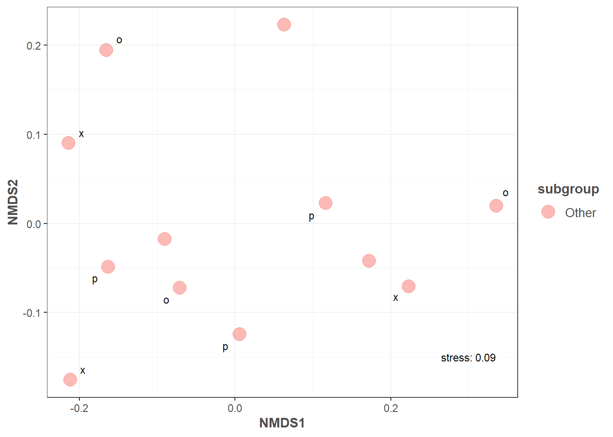
# VS wenn ich es richtig verstanden habe, ist das nur der Plot? Dann fehlt noch die Statistik dazu. z.B. Permanova oder Anova
# VS Im Meeting hatten wir auch darüber gesprochen, dass du im Moment nur die Woche codest und das Treatment daneben steht
# VS Ich würde vorschlagen Zeitpunkt und Treatment als Farbe und Form zu definieren. Dabei sollte das in der Hypothese wichtigere als Farbe gecoded werden. Das sieht man schneller / besser
# VS zudem solltest du rot und grün in einem Plot vermeiden, weil Farbenblinde das nicht unterscheiden können
# save the plotPermanova FA Biofilm
# @ VS: Hier muss die Woche als explanatory variable wieder dazu, oder? Dann muss ich die Tabellen wahrscheinlich anders formen, als für die FA der Schnecken?8 Temperature and light conditions
@ VS: Dieses Skript ist nur zum plotten der Temperatur und Lichtverhältnisse dar. Mirco möchte diese Plots gerne in den Anhang.
8.1 Biofilm colonisation and contamination
# insert data
colonisation_temp_light <-
read.table(file.path(prj, "data\\colonisation_temp_light.txt"),
header = TRUE, sep = "\t")
View(colonisation_temp_light)
# average temperature
mean(colonisation_temp_light $ temperature_colonisation)[1] 18.28751# 18.28751 °C
# mean light intensity
# filter only daytime
average_light_intensity_colonisation <- colonisation_temp_light %>%
dplyr::filter(light_intensity_colonisation > 0) %>%
summarize(average_light_intensity_colonisation = mean(light_intensity_colonisation))
print(average_light_intensity_colonisation) average_light_intensity_colonisation
1 14019.26# 14019.26 lux
# temperature plot
# add a small amount of random noise to the y-values
colonisation_temp_light $ temperature_colonisation <- jitter(colonisation_temp_light $ temperature_colonisation)
t2 <- ggplot(
data = colonisation_temp_light,
mapping = aes( x = day, y = temperature_colonisation, color = time_of_day)) +
geom_point(alpha = 0.5) + # Individual measurements with transparency
geom_smooth() +
labs(
title = "Temperature profile during biofilm colonisation",
x = "Day", y = "Temperature (°C)"
) +
theme_bw() +
scale_x_continuous(breaks = seq(0, 77, by = 5)) +
scale_color_continuous(
name = "Time of Day",
breaks = c(0, 5, 10, 15, 20),
labels = c("0:00 am", "05:00 am", "10:00 am", "03:00 pm", "08:00 pm"),
limits = c(0, 22),
)
t2 `geom_smooth()` using method = 'gam' and formula = 'y ~ s(x, bs = "cs")'Warning: The following aesthetics were dropped during statistical transformation: colour
ℹ This can happen when ggplot fails to infer the correct grouping structure in
the data.
ℹ Did you forget to specify a `group` aesthetic or to convert a numerical
variable into a factor?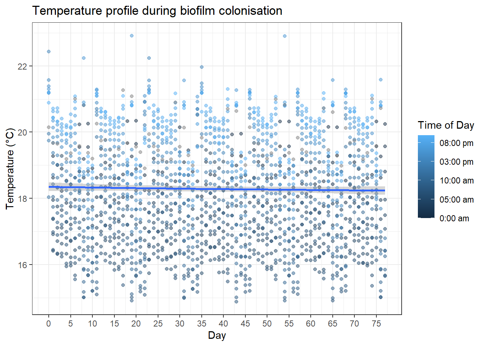
# save the plot
ggsave(t2,
filename = "temperature_colonisation.png",
path = 'C:\\Users\\Oster Test\\OneDrive\\Desktop\\Promotion\\Bioassays\\Schneckenversuch 2023\\Bottom_up_effects_biofilm_grazer\\output')Saving 7 x 5 in image
`geom_smooth()` using method = 'gam' and formula = 'y ~ s(x, bs = "cs")'Warning: The following aesthetics were dropped during statistical transformation: colour
ℹ This can happen when ggplot fails to infer the correct grouping structure in
the data.
ℹ Did you forget to specify a `group` aesthetic or to convert a numerical
variable into a factor?# light intensity plot
# Filter the data to include only rows where light_intensity > 0
filtered_data2 <- colonisation_temp_light %>%
filter(light_intensity_colonisation > 0)
# add a small amount of random noise to the y-values
filtered_data2 $ light_intensity_colonisation <- jitter(filtered_data2 $ light_intensity_colonisation)
l2 <- ggplot(
data = filtered_data2,
mapping = aes( x = day, y = light_intensity_colonisation)) +
geom_point(size = 1) + # Individual measurements with transparency
geom_smooth(color = "#E69F00", linewidth = 1) +
labs(
title = "Light intensity profile during biofilm colonisation",
x = "Day", y = "Light intensity (lux)"
) +
theme_bw() +
scale_x_continuous(breaks = seq(0, 77, by = 5))
l2 `geom_smooth()` using method = 'gam' and formula = 'y ~ s(x, bs = "cs")'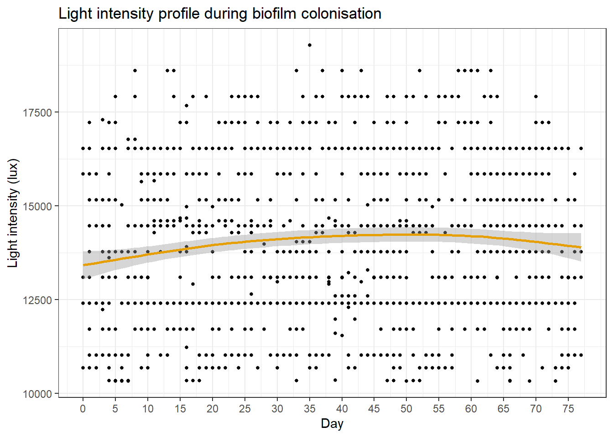
# save the plot
ggsave(l2,
filename = "light_intensity_colonisation.png",
path = 'C:\\Users\\Oster Test\\OneDrive\\Desktop\\Promotion\\Bioassays\\Schneckenversuch 2023\\Bottom_up_effects_biofilm_grazer\\output')Saving 7 x 5 in image
`geom_smooth()` using method = 'gam' and formula = 'y ~ s(x, bs = "cs")'8.2 Feeding assay
# insert data
feeding_assay_temp_light <-
read.table(file.path(prj, "data\\feeding_assay_temp_light.txt"),
header = TRUE,
sep = "\t"
)
View(feeding_assay_temp_light)
# average temperature
mean(feeding_assay_temp_light $ temperature)[1] 13.27927# 13.27927 °C
# mean light intensity
# filter only daytime
average_light_intensity_feeding <- feeding_assay_temp_light %>%
dplyr::filter(light_intensity > 0) %>%
summarize(average_light_intensity_feeding = mean(light_intensity))
print(average_light_intensity_feeding) average_light_intensity_feeding
1 330.3552# 330.3552 lux
# temperature plot
# add a small amount of random noise to the y-values
feeding_assay_temp_light $ temperature <- jitter(feeding_assay_temp_light $ temperature)
t1 <- ggplot(
data = feeding_assay_temp_light,
mapping = aes( x = day, y = temperature, color = time_of_day)) +
geom_point(alpha = 0.5) + # Individual measurements with transparency
geom_smooth() +
labs(
title = "Temperature profile during 21-day feeding assay",
x = "Day", y = "Temperature (°C)"
) +
theme_bw() +
scale_x_continuous(breaks = 0:21) +
scale_color_continuous(
name = "Time of Day",
breaks = c(0, 5, 10, 15, 20),
labels = c("0:00 am", "05:00 am", "10:00 am", "03:00 pm", "08:00 pm"),
limits = c(0, 22),
)
t1 `geom_smooth()` using method = 'loess' and formula = 'y ~ x'Warning: The following aesthetics were dropped during statistical transformation: colour
ℹ This can happen when ggplot fails to infer the correct grouping structure in
the data.
ℹ Did you forget to specify a `group` aesthetic or to convert a numerical
variable into a factor?# save the plot
ggsave(t1,
filename = "temperature_feeding_assay.png",
path = 'C:\\Users\\Oster Test\\OneDrive\\Desktop\\Promotion\\Bioassays\\Schneckenversuch 2023\\Bottom_up_effects_biofilm_grazer\\output')Saving 7 x 5 in image
`geom_smooth()` using method = 'loess' and formula = 'y ~ x'Warning: The following aesthetics were dropped during statistical transformation: colour
ℹ This can happen when ggplot fails to infer the correct grouping structure in
the data.
ℹ Did you forget to specify a `group` aesthetic or to convert a numerical
variable into a factor?# light intensity plot
# Filter the data to include only rows where light_intensity > 0
filtered_data1 <- feeding_assay_temp_light %>%
filter(light_intensity > 0)
# add a small amount of random noise to the y-values
filtered_data1 $ light_intensity <- jitter(filtered_data1 $ light_intensity)
l1 <- ggplot(
data = filtered_data1,
mapping = aes( x = day, y = light_intensity)) +
geom_point(size = 1) + # Individual measurements with transparency
geom_smooth(color = "#E69F00", linewidth = 1) +
labs(
title = "Light intensity profile during 21-day feeding assay",
x = "Day", y = "Light intensity (lux)"
) +
theme_bw() +
scale_x_continuous(breaks = 0:21)
l1 `geom_smooth()` using method = 'loess' and formula = 'y ~ x'# save the plot
ggsave(l1,
filename = "light_intensity_feeding_assay.png",
path = 'C:\\Users\\Oster Test\\OneDrive\\Desktop\\Promotion\\Bioassays\\Schneckenversuch 2023\\Bottom_up_effects_biofilm_grazer\\output')Saving 7 x 5 in image
`geom_smooth()` using method = 'loess' and formula = 'y ~ x'